3.1 Introduction
This chapter specifies the "presentation" elements of MathML, which can be used to describe the layout structure of mathematical notation.
3.1.1 What Presentation Elements Represent
Presentation elements correspond to the "constructors" of traditional mathematical notation — that is, to the basic kinds of symbols and expression-building structures out of which any particular piece of traditional mathematical notation is built. Because of the importance of traditional visual notation, the descriptions of the notational constructs the elements represent are usually given here in visual terms. However, the elements are medium-independent in the sense that they have been designed to contain enough information for good spoken renderings as well. Some attributes of these elements may make sense only for visual media, but most attributes can be treated in an analogous way in audio as well (for example, by a correspondence between time duration and horizontal extent).
MathML presentation elements only suggest (i.e. do not require) specific ways of rendering in order to allow for medium-dependent rendering and for individual preferences of style. This specification describes suggested visual rendering rules in some detail, but a particular MathML renderer is free to use its own rules as long as its renderings are intelligible.
The presentation elements are meant to express the syntactic
structure of mathematical notation in much the same way as titles, sections,
and paragraphs capture the higher-level syntactic structure of a
textual document. Because of this, a single row of identifiers and operators
will often be represented by multiple nested mrow elements rather than
a single mrow. For example, "x + a /
b" typically is represented as:
<mrow>
<mi> x </mi>
<mo> + </mo>
<mrow>
<mi> a </mi>
<mo> / </mo>
<mi> b </mi>
</mrow>
</mrow>
Similarly, superscripts are attached to the full expression constituting their base rather than to the just preceding character. This structure permits better-quality rendering of mathematics, especially when details of the rendering environment, such as display widths, are not known ahead of time to the document author. It also greatly eases automatic interpretation of the represented mathematical structures.
Certain characters are used
to name identifiers or operators that in traditional notation render the
same as other symbols or usually rendered invisibly. For example, the entities
ⅆ, ⅇ, and
ⅈ denote notational symbols semantically distinct from visually
identical letters used as simple variables.
Likewise, the entities
⁢,
⁡,
⁣ and the character U+2064
(INVISIBLE PLUS) usually render invisibly but represent significant information.
These entities have distinct spoken renderings, may influence visual linebreaking
and spacing,
and may effect the evaluation or meaning of particular expressions.
Accordingly, authors should use these entities wherever they are applicable.
For instance, the expression represented visually as
"f(x)" would usually be spoken in English as
"f of x" rather than just
"f x". MathML conveys this meaning by using
the ⁡ operator after the
"f", which, in this case, can be aurally rendered as
"of".
The complete list of MathML entities is described in [Entities].
3.1.2 Terminology Used In This Chapter
It is strongly recommended that, before reading the present chapter, one read Section 2.1 MathML Syntax and Grammar on MathML syntax and grammar, which contains important information on MathML notations and conventions. In particular, in this chapter it is assumed that the reader has an understanding of basic XML terminology described in Section 2.1.3 Children versus Arguments, and the attribute value notations and conventions described in Section 2.1.5 MathML Attribute Values.
The remainder of this section introduces MathML-specific terminology and conventions used in this chapter.
3.1.2.1 Types of presentation elements
The presentation elements are divided into two classes. Token elements represent individual symbols, names, numbers, labels, etc. Layout schemata build expressions out of parts and can have only elements as content (except for whitespace, which they ignore). These are subdivided into General Layout, Script and Limit, Tabular Math and Elementary Math schemata. There are also a few empty elements used only in conjunction with certain layout schemata.
All individual "symbols" in a mathematical expression should be
represented by MathML token elements. The primary MathML token element
types are identifiers (e.g. variables or function names), numbers, and
operators (including fences, such as parentheses, and separators, such
as commas). There are also token elements used to represent text or
whitespace that has more aesthetic than mathematical significance
and other elements representing "string literals" for compatibility with
computer algebra systems. Note that although a token element
represents a single meaningful "symbol" (name, number, label,
mathematical symbol, etc.), such symbols may be comprised of more than
one character. For example sin and 24 are
represented by the single tokens <mi>sin</mi>
and <mn>24</mn> respectively.
In traditional mathematical notation, expressions are recursively constructed out of smaller expressions, and ultimately out of single symbols, with the parts grouped and positioned using one of a small set of notational structures, which can be thought of as "expression constructors". In MathML, expressions are constructed in the same way, with the layout schemata playing the role of the expression constructors. The layout schemata specify the way in which sub-expressions are built into larger expressions. The terminology derives from the fact that each layout schema corresponds to a different way of "laying out" its sub-expressions to form a larger expression in traditional mathematical typesetting.
3.1.2.2 Terminology for other classes of elements and their relationships
The terminology used in this chapter for special classes of elements, and for relationships between elements, is as follows: The presentation elements are the MathML elements defined in this chapter. These elements are listed in Section 3.1.9 Summary of Presentation Elements. The content elements are the MathML elements defined in Chapter 4 Content Markup.
A MathML expression is a single instance of any of the
presentation elements with the exception of the empty elements
none or mprescripts,
or is a single instance of any of the content elements which are allowed as
content of presentation elements (described in Section 5.3.2 Content Markup in Presentation Markup).
A sub-expression of an expression
E is any MathML expression that is part of the content of
E, whether directly or indirectly,
i.e. whether it is a "child" of E or not.
Since layout schemata attach special meaning to the number and/or positions of their children, a child of a layout schema is also called an argument of that element. As a consequence of the above definitions, the content of a layout schema consists exactly of a sequence of zero or more elements that are its arguments.
3.1.3 Required Arguments
Many of the elements described herein require a specific number of arguments (always 1, 2, or 3). In the detailed descriptions of element syntax given below, the number of required arguments is implicitly indicated by giving names for the arguments at various positions. A few elements have additional requirements on the number or type of arguments, which are described with the individual element. For example, some elements accept sequences of zero or more arguments — that is, they are allowed to occur with no arguments at all.
Note that MathML elements encoding rendered space do
count as arguments of the elements in which they appear.
See Section 3.2.7 Space <mspace/> for a discussion of the proper use of such
space-like elements.
3.1.3.1 Inferred <mrow>s
The elements listed in the following table as requiring 1*
argument (msqrt, mstyle, merror,
mpadded, mphantom, menclose,
mtd, mscarry,
and math)
conceptually accept a single argument,
but actually accept any number of children.
If the number of children is 0 or is more than 1, they treat their contents
as a single inferred mrow formed from all their children,
and treat this mrow as the argument.
For example,
<mtd> </mtd>
is treated as if it were
<mtd> <mrow> </mrow> </mtd>
and
<msqrt> <mo> - </mo> <mn> 1 </mn> </msqrt>
is treated as if it were
<msqrt>
<mrow>
<mo> - </mo>
<mn> 1 </mn>
</mrow>
</msqrt>
This feature allows MathML data not to contain (and its authors to
leave out) many mrow elements that would otherwise be
necessary.
3.1.3.2 Table of argument requirements
For convenience, here is a table of each element's argument count
requirements and the roles of individual arguments when these are
distinguished. An argument count of 1* indicates an inferred mrow as described above.
Although the math element is
not a presentation element, it is listed below for completeness.
| Element | Required argument count | Argument roles (when these differ by position) |
|---|---|---|
mrow |
0 or more | |
mfrac |
2 | numerator denominator |
msqrt |
1* | |
mroot |
2 | base index |
mstyle |
1* | |
merror |
1* | |
mpadded |
1* | |
mphantom |
1* | |
mfenced |
0 or more | |
menclose |
1* | |
msub |
2 | base subscript |
msup |
2 | base superscript |
msubsup |
3 | base subscript superscript |
munder |
2 | base underscript |
mover |
2 | base overscript |
munderover |
3 | base underscript overscript |
mmultiscripts |
1 or more | base
(subscript superscript)*
[<mprescripts/>
(presubscript presuperscript)*] |
mtable |
0 or more rows | 0 or more mtr or mlabeledtr elements |
mlabeledtr |
1 or more | a label and 0 or more mtd elements |
mtr |
0 or more | 0 or more mtd elements |
mtd |
1* | |
mstack |
0 or more | |
mlongdiv |
3 or more | divisor result dividend (msrow | msgroup | mscarries | msline)* |
msgroup |
0 or more | |
msrow |
0 or more | |
mscarries |
0 or more | |
mscarry |
1* | |
maction |
1 or more | depend on actiontype attribute |
math |
1* |
3.1.4 Elements with Special Behaviors
Certain MathML presentation elements exhibit special behaviors in certain contexts. Such special behaviors are discussed in the detailed element descriptions below. However, for convenience, some of the most important classes of special behavior are listed here.
Certain elements are considered space-like; these are defined in
Section 3.2.7 Space <mspace/>. This definition affects some of the suggested rendering
rules for mo elements (Section 3.2.5 Operator, Fence, Separator or Accent
<mo>).
Certain elements, e.g. msup, are able to
embellish operators that are their first argument. These elements are
listed in Section 3.2.5 Operator, Fence, Separator or Accent
<mo>, which precisely defines an "embellished
operator" and explains how this affects the suggested rendering rules
for stretchy operators.
3.1.5 Directionality
In the notations familiar to most readers, both the overall layout and the textual symbols are arranged from left to right (LTR). Yet, as alluded to in the introduction, mathematics written in Hebrew or in locales such as Morocco or Persia, the overall layout is used unchanged, but the embedded symbols (often Hebrew or Arabic) are written right to left (RTL). Moreover, in most of the Arabic speaking world, the notation is arranged entirely RTL; thus a superscript is still raised, but it follows the base on the left rather than the right.
MathML 3.0 therefore recognizes two distinct directionalities: the directionality of the text and symbols within token elements and the overall directionality represented by Layout Schemata. These two facets are discussed below.
3.1.5.1 Overall Directionality of Mathematics Formulas
The overall directionality for a formula, basically
the direction of the Layout Schemata, is specified by
the dir attribute on the containing math element
(see Section 2.2 The Top-Level
<math> Element).
The default is ltr. When dir="rtl"
is used, the layout is simply the mirror image of the conventional
European layout. That is, shifts up or down are unchanged,
but the progression in laying out is from right to left.
For example, in a RTL layout, sub- and superscripts appear to the left of the base; the surd for a root appears at the right, with the bar continuing over the base to the left. The layout details for elements whose behaviour depends on directionality are given in the discussion of the element. In those discussions, the terms leading and trailing are used to specify a side of an object when which side to use depends on the directionality; ie. leading means left in LTR but right in RTL. The terms left and right may otherwise be safely assumed to mean left and right.
The overall directionality is usually set on the math, but
may also be switched for individual subformula by using the dir
attribute on mrow or mstyle elements.
When not specified, all elements inherit the directionality of their container.
3.1.5.2 Bidirectional Layout in Token Elements
The text directionality comes into play for the MathML token elements
that can contain text (mtext, mo, mi, mn
and ms) and is determined by the Unicode properties of that text.
A token element containing exclusively LTR or RTL characters
is displayed straightforwardly in the given direction.
When a mixture of directions is involved used, such as RTL Arabic
and LTR numbers, the Unicode bidirectional algorithm [Bidi]
is applied. This algorithm specifies how runs of characters
with the same direction are processed and how the runs are (re)ordered.
The base, or initial, direction is given by the overall directionality
described above (Section 3.1.5.1 Overall Directionality of Mathematics Formulas) and affects
how weakly directional characters are treated and how runs are nested.
(The dir attribute is thus allowed on token elements to specify
the initial directionality that may be needed in rare cases.)
Any mglyph or malignmark elements appearing within
a token element are effectively neutral and have no effect
on ordering.
The important thing to notice is that the bidirectional algorithm is applied independently to the contents of each token element; each token element is an independent run of characters.
Other features of Unicode and scripts that should be respected are ‘mirroring’ and ‘glyph shaping’. Some Unicode characters are marked as being mirrored when presented in a RTL context; that is, the character is drawn as if it were mirrored or replaced by a corresponding character. Thus an opening parenthesis, ‘(’, in RTL will display as ‘)’. Conversely, the solidus (/ U+002F) is not marked as mirrored. Thus, an Arabic author that desires the slash to be reversed in an inline division should explicitly use reverse solidus (\ U+005C) or an alternative such as the mirroring DIVISION SLASH (U+2215).
Additionally, calligraphic scripts such as Arabic blend, or connect sequences of characters together, changing their appearance. As this can have an significant impact on readability, as well as aesthetics, it is important to apply such shaping if possible. Glyph shaping, like directionality, applies to each token element's contents individually.
Please note that for the transfinite cardinals represented by Hebrew characters, the code points U+2135-U+2138 (ALEF SYMBOL, BET SYMBOL, GIMEL SYMBOL, DALET SYMBOL) should be used. These are strong left-to-right.
3.1.6 Displaystyle and Scriptlevel
So-called ‘displayed’ formulas, those appearing on a line by themselves,
typically make more generous use of vertical space than inline formulas,
which should blend into the adjacent text without intruding into
neighboring lines. For example, in a displayed summation, the limits
are placed above and below the summation symbol, while when it appears inline
the limits would appear in the sub and superscript position.
For similar reasons, sub- and superscripts,
nested fractions and other constructs typically display in a
smaller size than the main part of the formula.
MathML implicitly associates with every presentation node
a displaystyle and scriptlevel reflecting whether
a more expansive vertical layout applies and the level of scripting
in the current context.
These values are
initialized by the math element
according to the display attribute.
They are automatically adjusted by the
various script and limit schemata elements,
and the elements
mfrac and
mroot,
which typically set displaystyle false and increment scriptlevel
for some or all of their arguments.
(See the description for each element for the specific rules used.)
They also may be set explicitly via the displaystyle and scriptlevel
attributes on the mstyle element
or the displaystyle attribute of mtable.
In all other cases, they are inherited from the node's parent.
The displaystyle affects the amount of vertical space used to lay out a formula:
when true, the more spacious layout of displayed equations is used,
whereas when false a more compact layout of inline formula is used.
This primarily affects the interpretation
of the largeop and movablelimits attributes of
the mo element.
However, more sophisticated renderers are free to use
this attribute to render more or less compactly.
The main effect of scriptlevel is to control the font size.
Typically, the higher the scriptlevel, the smaller the font size.
(Non-visual renderers can respond to the font size in an analogous way for their medium.)
Whenever the scriptlevel is changed, whether automatically or explicitly,
the current font size is multiplied by the value of
scriptsizemultiplier to the power of the change in scriptlevel.
However, changes to the font size due to scriptlevel changes should
never reduce the size below scriptminsize to prevent scripts
becoming unreadably small.
The default scriptsizemultiplier is approximately the square root of 1/2
whereas scriptminsize defaults to 8 points;
these values may be changed on mstyle; see Section 3.3.4 Style Change <mstyle>.
Note that the scriptlevel attribute of mstyle allows arbitrary
values of scriptlevel to be obtained, including negative values which
result in increased font sizes.
The changes to the font size due to scriptlevel should be viewed
as being imposed from ‘outside’ the node.
This means that the effect of scriptlevel is applied
before an explicit mathsize (see Section 3.2.2 Mathematics style attributes common to token elements)
on a token child of mfrac.
Thus, the mathsize effectively overrides the effect of scriptlevel.
However, that change to scriptlevel changes the current font size,
which affects the meaning of an "em" length
(see Section 2.1.5.2 Length Valued Attributes)
and so the scriptlevel still may have an effect in such cases.
Note also that since mathsize is not constrained by scriptminsize,
such direct changes to font size can result in scripts smaller than scriptminsize.
Note that direct changes to current font size, whether by
CSS or by the mathsize attribute (See Section 3.2.2 Mathematics style attributes common to token elements),
have no effect on the value of scriptlevel.
TEX's \displaystyle, \textstyle, \scriptstyle, and \scriptscriptstyle
correspond to displaystyle and scriptlevel
as
"true" and "0",
"false" and "0",
"false" and "1",
and "false" and "2", respectively.
Thus, math's
display="block" corresponds to \displaystyle,
while display="inline" corresponds to \textstyle.
3.1.7 Linebreaking of Expressions
3.1.7.1 Control of Linebreaks
MathML provides support for both automatic and manual (forced)
linebreaking of expressions to break excessively long
expressions into several lines.
All such linebreaks take place within mrow
(including inferred mrow; see Section 3.1.3.1 Inferred <mrow>s)
or mfenced.
The breaks typically take place at mo elements
and also, for backwards compatibility, at mspace.
Renderers may also choose to place automatic linebreaks at other points
such as between adjacent mi elements or even within a token element
such as a very long mn element. MathML does not provide a means to
specify such linebreaks, but if a render chooses to linebreak at such a point,
it should indent the following line according to the
indentation attributes
that are in effect at that point.
Automatic linebreaking occurs when the containing math element
has overflow="linebreak"
and the display engine determines that there is not enough space available to
display the entire formula. The available width must therefore be known
to the renderer. Like font properties, one is assumed to be inherited from the environment
in
which the MathML element lives. If no width can be determined, an
infinite width should be assumed. Inside of a mtable,
each column has some width. This width may be specified as an attribute
or determined by the contents. This width should be used as the
line wrapping width for linebreaking, and each entry in an mtable
is linewrapped as needed.
Forced linebreaks are specified by using
linebreak="newline"
on a mo or mspace element.
Both automatic and manual linebreaking can occur within the same formula.
Automatic linebreaking of subexpressions of mfrac, msqrt, mroot
and menclose and the various script elements is not required.
Renderers are free to ignore forced breaks within those elements if they choose.
Attributes on mo and possibly on mspace elements control
linebreaking and indentation of the following line. The aspects of linebreaking
that can be controlled are:
-
Where — attributes determine the desirability of a linebreak at a specific operator or space, in particular whether a break is required or inhibited. These can only be set on
moandmspaceelements. (See Section 3.2.5.2.2 Linebreaking attributes.) -
Operator Display/Position — when a linebreak occurs, determines whether the operator will appear at the end of the line, at the beginning of the next line, or in both positions; and how much vertical space should be added after the linebreak. These attributes can be set on
moelements or inherited frommstyleormathelements. (See Section 3.2.5.2.2 Linebreaking attributes.) -
Indentation — determines the indentation of the line following a linebreak, including indenting so that the next line aligns with some point in a previous line. These attributes can be set on
moelements or inherited frommstyleormathelements. (See Section 3.2.5.2.3 Indentation attributes.)
When a math element appears in an inline context, it may obey whatever paragraph flow
rules
are employed by the document's text rendering engine.
Such rules are necessarily outside of the scope of this specification.
Alternatively, it may use the value of the math element's overflow attribute.
(See Section 2.2.1 Attributes.)
3.1.7.2 Automatic Linebreaking Algorithm (Informative)
One method of linebreaking that works reasonably well is sometimes referred to as a "best-fit" algorithm. It works by computing a "penalty" for each potential break point on a line. The break point with the smallest penalty is chosen and the algorithm then works on the next line. Three useful factors in a penalty calculation are:
-
How much of the line width (after subtracting of the indent) is unused? The more unused, the higher the penalty.
-
How deeply nested is the breakpoint in the expression tree? The expression tree's depth is roughly similar to the nesting depth of
mrows. The more deeply nested the break point, the higher the penalty. -
Does a linebreak here make layout of the next line difficult? If the next line is not the last line and if the indentingstyle uses information about the linebreak point to determine how much to indent, then the amount of room left for linebreaking on the next line must be considered; i.e., linebreaks that leave very little room to draw the next line result in a higher penalty.
-
Whether "linebreak" has been specified: "nobreak" effectively sets the penalty to infinity, "badbreak" increases the penalty "goodbreak" decreases the penalty, and "newline" effectively sets the penalty to 0.
This algorithm takes time proportional to the number of token elements times the number of lines.
3.1.7.3 Linebreaking Algorithm for Inline Expressions (Informative)
A common method for breaking inline expressions that are too long for the space remaining on the current line is to pick an appropriate break point for the expression and place the expression up to that point on the current line and place the remainder of the expression on the following line. This can be done by:
-
Querying the text processing engine for the minimum and maximum amount of space available on the current line.
-
Using a variation of the automatic linebreaking algorithm given above), and/or using hints provided by linebreak attributes on
moormspaceelements, to choose a line break. The goal is that the first part of the formula fits "comfortably" on the current line while breaking at a point that results in keeping related parts of an expression on the same line. -
The remainder of the formula begins on the next line, positioned both vertically and horizontally according to the paragraph flow; MathML's indentation attributes are ignored in this algorithm.
-
If the remainder does not fit on a line, steps 1 - 3 are repeated for the second and subsequent lines. Unlike the for the first line, some part of the expression must be placed these lines so that the algorithm terminates.
3.1.8 Warning about fine-tuning of presentation
Some use-cases require precise control of the math layout and presentation. Several MathML elements and attributes expressly support such fine-tuning of the rendering. However, MathML rendering agents exhibit wide variability in their presentation of the the same MathML expression due to difference in platforms, font availability, and requirements particular to the agent itself (see Section 3.1 Introduction). The overuse of explicit rendering control may yield a ‘perfect’ layout on one platform, but give much worse presentation on others. The following sections clarify the kinds of problems that can occur.
3.1.8.1 Warning: non-portability of "tweaking"
For particular expressions, authors may be tempted to use the
mpadded,
mspace,
mphantom, and
mtext elements to improve
("tweak") the spacing generated by a specific renderer.
Without explicit spacing rules, various MathML renders may use different spacing algorithms. Consequently, different MathML renderers may position symbols in different locations relative to each other. Say that renderer B, for example, provides improved spacing for a particular expression over renderer A. Authors are strongly warned that "tweaking" the layout for renderer A may produce very poor results in renderer B, very likely worse than without any explicit adjustment at all.
Even when a specific choice of renderer can be assumed, its spacing rules may be improved in successive versions, so that the effect of tweaking in a given MathML document may grow worse with time. Also, when style sheet mechanisms are extended to MathML, even one version of a renderer may use different spacing rules for users with different style sheets.
Therefore, it is suggested that MathML markup never use
mpadded or mspace elements
to tweak the rendering of specific expressions, unless the MathML is
generated solely to be viewed using one specific version of one MathML
renderer, using one specific style sheet (if style sheets are
available in that renderer).
In cases where the temptation to improve spacing proves too strong,
careful use of mpadded,
mphantom, or the alignment elements (Section 3.5.5 Alignment Markers
<maligngroup/>, <malignmark/>) may give more portable results than the
direct insertion of extra space using mspace or
mtext. Advice given to the implementers of MathML
renderers might be still more productive, in the long run.
3.1.8.2 Warning: spacing should not be used to convey meaning
MathML elements that permit "negative spacing", namely
mspace, mpadded, and
mo, could in theory be used to simulate new
notations or "overstruck" characters by the visual overlap of the
renderings of more than one MathML sub-expression.
This practice is strongly discouraged in all situations, for the following reasons:
-
it will give different results in different MathML renderers (so the warning about "tweaking" applies), especially if attempts are made to render glyphs outside the bounding box of the MathML expression;
-
it is likely to appear much worse than a more standard construct supported by good renderers;
-
such expressions are almost certain to be uninterpretable by audio renderers, computer algebra systems, text searches for standard symbols, or other processors of MathML input.
More generally, any construct that uses spacing to convey mathematical meaning, rather than simply as an aid to viewing expression structure, is discouraged. That is, the constructs that are discouraged are those that would be interpreted differently by a human viewer of rendered MathML if all explicit spacing was removed.
Consider using the mglyph element
for cases such as this. If such spacing constructs are used in spite of this warning,
they should
be enclosed in a semantics element that also
provides an additional MathML expression that can be interpreted in a
standard way. See Section 5.1 Annotation Framework for further discussion.
The above warning also applies to most uses of rendering
attributes to alter the meaning conveyed by an expression, with the
exception of attributes on mi (such as mathvariant)
used to distinguish one variable from another.
3.1.9 Summary of Presentation Elements
3.1.9.1 Token Elements
mi |
identifier |
mn |
number |
mo |
operator, fence, or separator |
mtext |
text |
mspace |
space |
ms |
string literal |
Additionally, the mglyph element
may be used within Token elements to represent non-standard symbols as images.
3.1.9.2 General Layout Schemata
mrow |
group any number of sub-expressions horizontally |
mfrac |
form a fraction from two sub-expressions |
msqrt |
form a square root (radical without an index) |
mroot |
form a radical with specified index |
mstyle |
style change |
merror |
enclose a syntax error message from a preprocessor |
mpadded |
adjust space around content |
mphantom |
make content invisible but preserve its size |
mfenced |
surround content with a pair of fences |
menclose |
enclose content with a stretching symbol such as a long division sign. |
3.1.9.3 Script and Limit Schemata
msub |
attach a subscript to a base |
msup |
attach a superscript to a base |
msubsup |
attach a subscript-superscript pair to a base |
munder |
attach an underscript to a base |
mover |
attach an overscript to a base |
munderover |
attach an underscript-overscript pair to a base |
mmultiscripts |
attach prescripts and tensor indices to a base |
3.1.9.4 Tables and Matrices
mtable |
table or matrix |
mlabeledtr |
row in a table or matrix with a label or equation number |
mtr |
row in a table or matrix |
mtd |
one entry in a table or matrix |
maligngroup and
malignmark |
alignment markers |
3.1.9.5 Elementary Math Layout
mstack |
columns of aligned characters |
mlongdiv |
similar to msgroup, with the addition of a divisor and result |
msgroup |
a group of rows in an mstack that are shifted by similar amounts |
msrow |
a row in an mstack |
mscarries |
row in an mstack that whose contents represent carries or borrows |
mscarry |
one entry in an mscarries |
msline |
horizontal line inside of mstack |
3.1.9.6 Enlivening Expressions
maction |
bind actions to a sub-expression |
3.1.10 Mathematics style attributes common to presentation elements
In addition to the attributes listed in Section 2.1.6 Attributes Shared by all MathML Elements, all MathML presentation elements accept the following two attributes:
| Name | values | default |
|---|---|---|
| mathcolor | color | inherited |
Specifies the foreground color to use when drawing the components of this element,
such as the content for token elements or any lines, surds, or other decorations.
It also establishes the default mathcolor used for child elements
when used on a layout element.
|
||
| mathbackground | color | "transparent" | transparent |
| Specifies the background color to be used to fill in the bounding box of the element and its children. The default, "transparent", lets the background color, if any, used in the current rendering context to show through. | ||
These style attributes are primarily intended for visual media.
They are not expected to affect the intended semantics of displayed
expressions, but are for use in highlighting or drawing attention
to the affected subexpressions. For example, a red "x" is not assumed
to be semantically different than a black "x", in contrast to
variables with different mathvariant (See Section 3.2.2 Mathematics style attributes common to token elements).
Since MathML expressions are often embedded in a textual data format such as HTML, the MathML renderer should inherit the foreground color used in the context in which the MathML appears. Note, however, that MathML doesn't specify the mechanism by which style information is inherited from the rendering environment. See Section 3.2.2 Mathematics style attributes common to token elements for more details.
Note that the suggested MathML visual rendering rules do not define the
precise extent of the region whose background is affected by the
mathbackground attribute,
except that, when the content does not have
negative dimensions and its drawing region is not overlapped by other
drawing due to surrounding negative spacing, this region should lie
behind all the drawing done to render the content, but should not lie behind any of
the
drawing done to render surrounding expressions. The effect of overlap
of drawing regions caused by negative spacing on the extent of the
region affected by the mathbackground attribute is not
defined by these rules.
3.2 Token Elements
Token elements in presentation markup are broadly intended to represent the smallest units of mathematical notation which carry meaning. Tokens are roughly analogous to words in text. However, because of the precise, symbolic nature of mathematical notation, the various categories and properties of token elements figure prominently in MathML markup. By contrast, in textual data, individual words rarely need to be marked up or styled specially.
Frequently, tokens consist of a single character denoting a mathematical symbol. Other cases, e.g. function names, involve multi-character tokens. Further, because traditional mathematical notation makes wide use of symbols distinguished by their typographical properties (e.g. a Fraktur 'g' for a Lie algebra, or a bold 'x' for a vector), care must be taken to insure that styling mechanisms respect typographical properties which carry meaning. Consequently, characters, tokens, and typographical properties of symbols are closely related to one another in MathML.
Token elements represent
identifiers (mi),
numbers (mn),
operators (mo),
text (mtext),
strings (ms)
and spacing (mspace).
The mglyph element
may be used within token elements
to represent non-standard symbols by images.
Preceding detailed discussion of the individual elements,
the next two subsections discuss the allowable content of
token elements and the attributes common to them.
3.2.1
Token Element Content Characters, <mglyph/>
Character data in MathML markup is only allowed to occur as part of
the content of token elements. Whitespace between elements is ignored.
With the exception of the empty mspace element,
token elements can contain any sequence of zero or more Unicode characters,
or mglyph or
malignmark elements.
The mglyph element is used
to represent non-standard characters or symbols by images;
the malignmark element establishes an alignment point for use within
table constructs, and is otherwise invisible (See Section 3.5.5 Alignment Markers
<maligngroup/>, <malignmark/>).
Characters can be either represented directly as Unicode character data, or indirectly via numeric or character entity references. See Chapter 7 Characters, Entities and Fonts for a discussion of the advantages and disadvantages of numeric character references versus entity references, and [Entities] for a full list of the entity names available. Also, see Section 7.7 Anomalous Mathematical Characters for a discussion of the appropriate character content to choose for certain applications.
Token elements (other than mspace) should
be rendered as their content, if any, (i.e. in the visual case, as a
closely-spaced horizontal row of standard glyphs for the characters
or images for the mglyphs in their content).
An mspace element is rendered as a blank space of a width determined by its attributes.
Rendering algorithms should also take into account the
mathematics style attributes as described below, and modify surrounding
spacing by rules or attributes specific to each type of token
element. The directional characteristics of the content must
also be respected (see Section 3.1.5.2 Bidirectional Layout in Token Elements).
3.2.1.1 Alphanumeric symbol characters
A large class of mathematical symbols are single letter identifiers typically used as variable names in formulas. Different font variants of a letter are treated as separate symbols. For example, a Fraktur 'g' might denote a Lie algebra, while a Roman 'g' denotes the corresponding Lie group. These letter-like symbols are traditionally typeset differently than the same characters appearing in text, using different spacing and ligature conventions. These characters must also be treated specially by style mechanisms, since arbitrary style transformations can change meaning in an expression.
For these reasons, Unicode contains more than nine hundred Math Alphanumeric Symbol characters corresponding to letter-like symbols. These characters are in the Secondary Multilingual Plane (SMP). See [Entities] for more information. As valid Unicode data, these characters are permitted in MathML and, as tools and fonts for them become widely available, we anticipate they will be the predominant way of denoting letter-like symbols.
MathML also provides an alternative encoding
for these characters using only Basic Multilingual Plane
(BMP) characters together with markup. MathML defines a
correspondence between token elements with certain combinations of BMP
character data and the mathvariant attribute and tokens
containing SMP Math Alphanumeric Symbol characters. Processing
applications that accept SMP characters are required to treat the
corresponding BMP and attribute combinations identically. This is particularly important
for applications that
support searching and/or equality testing.
The mathvariant attribute is described in more detail in
Section 3.2.2 Mathematics style attributes common to token elements,
and a complete technical description of the corresponding characters is given in
Section 7.5 Mathematical Alphanumeric Symbols.
3.2.1.2 Using images to represent
symbols <mglyph/>
3.2.1.2.1 Description
The mglyph element provides a mechanism
for displaying images to represent non-standard symbols.
It may be used within the content of the token elements
mi, mn, mo, mtext or ms
where existing Unicode characters are not adequate.
Unicode defines a large number of characters used in mathematics and, in most cases, glyphs representing these characters are widely available in a variety of fonts. Although these characters should meet almost all users needs, MathML recognizes that mathematics is not static and that new characters and symbols are added when convenient. Characters that become well accepted will likely be eventually incorporated by the Unicode Consortium or other standards bodies, but that is often a lengthy process.
Note that the glyph's src attribute uniquely identifies the mglyph;
two mglyphs with the same values for src should
be considered identical by applications that must determine whether
two characters/glyphs are identical.
3.2.1.2.2 Attributes
The mglyph element accepts the attributes listed in
Section 3.1.10 Mathematics style attributes common to presentation elements, but note that mathcolor has no effect.
The background color, mathbackground, should show through
if the specified image has transparency.
mglyph also accepts the additional attributes listed here.
| Name | values | default |
|---|---|---|
| src | URI | required |
| Specifies the location of the image resource; it may be a URI relative to the base-URI of the source of the MathML, if any. | ||
| width | length | from image |
Specifies the desired width of the glyph; see height.
|
||
| height | length | from image |
Specifies the desired height of the glyph.
If only one of width and height are given,
the image should be scaled to preserve the aspect ratio;
if neither are given, the image should be displayed at its natural size.
|
||
| valign | length | 0ex |
| Specifies the baseline alignment point of the image with respect to the current baseline. A positive value shifts the bottom of the image above the current baseline while a negative value lowers it. A value of 0 (the default) means that the baseline of the image is at the bottom of the image. | ||
| alt | string | required |
| Provides an alternate name for the glyph. If the specified image can't be found or displayed, the renderer may use this name in a warning message or some unknown glyph notation. The name might also be used by an audio renderer or symbol processing system and should be chosen to be descriptive. | ||
Note that the src and alt attributes are required for correct usage in MathML 3, however this is not enforced by the schema due to
the deprecated usage described below.
3.2.1.2.3 Example
The following example illustrates how a researcher might use
the mglyph construct with a set of images to work
with braid group notation.
<mrow> <mi><mglyph src="my-braid-23" alt="2 3 braid"/></mi> <mo>+</mo> <mi><mglyph src="my-braid-132" alt="1 3 2 braid"/></mi> <mo>=</mo> <mi><mglyph src="my-braid-13" alt="1 3 braid"/></mi> </mrow>
This might render as:
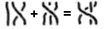
3.2.1.2.4 Deprecated Attributes
Originally, mglyph was designed to provide access to non-standard
fonts. Since this functionality was seldom implemented, nor were downloadable
web fonts widely available, this use of mglyph has been deprecated.
For reference, the following attributes were previously defined:
| Name | values |
|---|---|
| fontfamily | string |
| the name of a font that may be available to a MathML renderer, or a CSS font specification; See Section 6.5 Using CSS with MathML and CSS [CSS21] for more information. | |
| index | integer |
Specified a position of the desired glyph within the font named
by the fontfamily attribute (see Section 3.2.2.1 Deprecated style attributes on token elements).
|
In MathML 1 and 2, both were required attributes; they are now optional
and should be ignored unless the src attribute is missing.
Additionally, in MathML 2, mglyph accepted the attributes described in
Section 3.2.2 Mathematics style attributes common to token elements
(mathvariant and mathsize, along with the attributes deprecated there);
to make clear that mglyph is not a token element, and since
these attributes have no effect in any case, these attributes have been deprecated.
3.2.2 Mathematics style attributes common to token elements
In addition to the attributes defined for all presentation elements
(Section 3.1.10 Mathematics style attributes common to presentation elements), MathML includes two mathematics style attributes
as well as a directionality attribute
valid on all presentation token elements,
as well as the math and mstyle elements;
dir is also valid on mrow elements.
The attributes are:
| Name | values | default |
|---|---|---|
| mathvariant | "normal" | "bold" | "italic" | "bold-italic" | "double-struck" | "bold-fraktur" | "script" | "bold-script" | "fraktur" | "sans-serif" | "bold-sans-serif" | "sans-serif-italic" | "sans-serif-bold-italic" | "monospace" | "initial" | "tailed" | "looped" | "stretched" | normal (except on <mi>) |
| Specifies the logical class of the token. Note that this class is more than styling, it typically conveys semantic intent; see the discussion below. | ||
| mathsize | "small" | "normal" | "big" | length | inherited |
| Specifies the size to display the token content. The values "small" and "big" choose a size smaller or larger than the current font size, but leave the exact proportions unspecified; "normal" is allowed for completeness, but since it is equivalent to "100%" or "1em", it has no effect. | ||
| dir | "ltr" | "rtl" | inherited |
specifies the initial directionality for text within the token:
ltr (Left To Right) or rtl (Right To Left).
This attribute should only be needed in rare cases involving weak or neutral characters;
see Section 3.1.5.1 Overall Directionality of Mathematics Formulas for further discussion.
It has no effect on mspace.
|
||
The mathvariant attribute defines logical classes of token
elements. Each class provides a collection of typographically-related
symbolic tokens. Each token has a specific meaning within a given
mathematical expression and, therefore, needs to be visually
distinguished and protected from inadvertent document-wide style
changes which might change its meaning. Each token is identified
by the combination of the mathvariant attribute value
and the character data in the token element.
When MathML rendering takes place in an environment where CSS is
available, the mathematics style attributes can be viewed as
predefined selectors for CSS style rules.
See Section 6.5 Using CSS with MathML for discussion of the
interaction of MathML and CSS.
Also, see [MathMLforCSS] for discussion of rendering MathML by CSS
and a sample CSS style sheet.
When CSS is not available, it is up to the internal style mechanism of the rendering
application
to visually distinguish the different logical classes.
Most MathML renderers will probably want to rely on some degree to additional,
internal style processing algorithms.
In particular, the mathvariant attribute does not follow the CSS inheritance model;
the default value is "normal" (non-slanted)
for all tokens except for mi with single-character content.
See Section 3.2.3 Identifier <mi> for details.
Renderers have complete freedom in
mapping mathematics style attributes to specific rendering properties.
However, in practice, the mathematics style attribute names and values
suggest obvious typographical properties, and renderers should attempt
to respect these natural interpretations as far as possible. For
example, it is reasonable to render a token with the
mathvariant attribute set to "sans-serif" in
Helvetica or Arial. However, rendering the token in a Times Roman
font could be seriously misleading and should be avoided.
In principle, any mathvariant value may be used with any
character data to define a specific symbolic token. In practice,
only certain combinations of character data and mathvariant
values will be visually distinguished by a given renderer. For example,
there is no clear-cut rendering for a "fraktur alpha" or a "bold italic
Kanji" character, and the mathvariant values "initial",
"tailed", "looped", and "stretched" are appropriate only for Arabic
characters.
Certain combinations of character data and mathvariant
values are equivalent to assigned Unicode code points that encode
mathematical alphanumeric symbols. These Unicode code points are
the ones in the
Arabic Mathematical Alphabetic Symbols block U+1EE00 to U+1EEFF,
Mathematical Alphanumeric Symbols block U+1D400 to U+1D7FF,
listed in the Unicode standard, and the ones in the
Letterlike
Symbols range U+2100 to U+214F that represent "holes" in the
alphabets in the SMP, listed in Section 7.5 Mathematical Alphanumeric Symbols.
These characters are described in detail in section 2.2 of
UTR #25.
The description of each such character in the Unicode standard
provides an unstyled character to which it would be equivalent
except for a font change that corresponds to a mathvariant
value. A token element that uses the unstyled character in combination
with the corresponding mathvariant value is equivalent to a
token element that uses the mathematical alphanumeric symbol character
without the mathvariant attribute. Note that the appearance
of a mathematical alphanumeric symbol character should not be altered
by surrounding mathvariant or other style declarations.
Renderers should support those combinations of character data and
mathvariant values that correspond to Unicode characters,
and that they can visually distinguish using available font characters.
Renderers may ignore or support those combinations of character data
and mathvariant values that do not correspond to an assigned
Unicode code point, and authors should recognize that support for
mathematical symbols that do not correspond to assigned Unicode code
points may vary widely from one renderer to another.
Since MathML expressions are often embedded in a textual data format such as XHTML, the surrounding text and the MathML must share rendering attributes such as font size, so that the renderings will be compatible in style. For this reason, most attribute values affecting text rendering are inherited from the rendering environment, as shown in the "default" column in the table above. (In cases where the surrounding text and the MathML are being rendered by separate software, e.g. a browser and a plug-in, it is also important for the rendering environment to provide the MathML renderer with additional information, such as the baseline position of surrounding text, which is not specified by any MathML attributes.) Note, however, that MathML doesn't specify the mechanism by which style information is inherited from the rendering environment.
If the requested mathsize of the current font is not available, the
renderer should approximate it in the manner likely to lead to the
most intelligible, highest quality rendering.
Note that many MathML elements automatically change the font size
in some of their children; see the discussion in Section 3.1.6 Displaystyle and Scriptlevel.
3.2.2.1 Deprecated style attributes on token elements
The MathML 1.01 style attributes listed below are deprecated in MathML 2 and 3. These attributes were aligned to CSS but, in rendering environments that support CSS, it is preferable to use CSS directly to control the rendering properties corresponding to these attributes, rather than the attributes themselves. However as explained above, direct manipulation of these rendering properties by whatever means should usually be avoided. As a general rule, whenever there is a conflict between these deprecated attributes and the corresponding attributes (Section 3.2.2 Mathematics style attributes common to token elements), the former attributes should be ignored.
The deprecated attributes are:
| Name | values | default |
|---|---|---|
| fontfamily | string | inherited |
Should be the name of a font that may be available to a MathML renderer,
or a CSS font specification; See Section 6.5 Using CSS with MathML
and CSS [CSS21] for more information.
Deprecated in favor of mathvariant.
|
||
| fontweight | "normal" | "bold" | inherited |
Specified the font weight for the token.
Deprecated in favor of mathvariant.
|
||
| fontstyle | "normal" | "italic" | normal (except on <mi>) |
Specified the font style to use for the token.
Deprecated in favor of mathvariant.
|
||
| fontsize | length | inherited |
Specified the size for the token.
Deprecated in favor of mathsize.
|
||
| color | color | inherited |
Specified the color for the token.
Deprecated in favor of mathcolor.
|
||
| background | color | "transparent" | transparent |
Specified the background color to be used to fill in the bounding box
of the element and its children. Deprecated in favor of mathbackground.
|
||
3.2.2.2 Embedding HTML in MathML
MathML can be combined with other formats as described in
Section 6.4 Combining MathML and Other Formats.
The recommendation is to embed other formats in MathML by extending the MathML
schema to allow additional elements to be children of the mtext element or
other leaf elements as appropriate to the role they serve in the expression
(see Section 3.2.6.4 Mixing text and mathematics).
The directionality, font size, and other font attributes should inherit from
those that would be used for characters of the containing leaf element
(see Section 3.2.2 Mathematics style attributes common to token elements).
Here is an example of embedding SVG inside of mtext in an HTML context:
<mtable>
<mtr>
<mtd>
<mtext><input type="text" placeholder="what shape is this?"/></mtext>
</mtd>
</mtr>
<mtr>
<mtd>
<mtext>
<svg xmlns="http://www.w3.org/2000/svg"
width="4cm" height="4cm" viewBox="0 0 400 400">
<rect x="1" y="1" width="398" height="398"
style="fill:none; stroke:blue"/>
<path d="M 100 100 L 300 100 L 200 300 z"
style="fill:red; stroke:blue; stroke-width:3"/>
</svg>
</mtext>
</mtd>
</mtr>
</mtable>
3.2.3 Identifier <mi>
3.2.3.1 Description
An mi element represents a symbolic name or
arbitrary text that should be rendered as an identifier. Identifiers
can include variables, function names, and symbolic constants.
A typical graphical renderer would render an mi element
as its content (See Section 3.2.1
Token Element Content Characters, <mglyph/>),
with no extra spacing around it (except spacing associated with
neighboring elements).
Not all "mathematical identifiers" are represented by
mi elements — for example, subscripted or primed
variables should be represented using msub or
msup respectively. Conversely, arbitrary text
playing the role of a "term" (such as an ellipsis in a summed series)
can be represented using an mi element, as shown
in an example in Section 3.2.6.4 Mixing text and mathematics.
It should be stressed that mi is a
presentation element, and as such, it only indicates that its content
should be rendered as an identifier. In the majority of cases, the
contents of an mi will actually represent a
mathematical identifier such as a variable or function name. However,
as the preceding paragraph indicates, the correspondence between
notations that should render as identifiers and notations that are
actually intended to represent mathematical identifiers is not
perfect. For an element whose semantics is guaranteed to be that of an
identifier, see the description of ci in
Chapter 4 Content Markup.
3.2.3.2 Attributes
mi elements accept the attributes listed in
Section 3.2.2 Mathematics style attributes common to token elements, but in one case with a different default value:
| Name | values | default |
|---|---|---|
| mathvariant | "normal" | "bold" | "italic" | "bold-italic" | "double-struck" | "bold-fraktur" | "script" | "bold-script" | "fraktur" | "sans-serif" | "bold-sans-serif" | "sans-serif-italic" | "sans-serif-bold-italic" | "monospace" | "initial" | "tailed" | "looped" | "stretched" | (depends on content; described below) |
| Specifies the logical class of the token. The default is "normal" (non-slanted) unless the content is a single character, in which case it would be "italic". | ||
Note that the deprecated fontstyle attribute
defaults in the same way as mathvariant, depending on the content.
Note that for purposes of determining equivalences of Math
Alphanumeric Symbol
characters (See Section 7.5 Mathematical Alphanumeric Symbols and Section 3.2.1.1 Alphanumeric symbol characters)
the value of the mathvariant attribute should be resolved first,
including the special defaulting behavior described above.
3.2.3.3 Examples
<mi>x</mi>
<mi>D</mi>
<mi>sin</mi>
<mi mathvariant='script'>L</mi>
<mi></mi>
An mi element with no content is allowed;
<mi></mi> might, for example, be used by an
"expression editor" to represent a location in a MathML expression
which requires a "term" (according to conventional syntax for
mathematics) but does not yet contain one.
Identifiers include function names such as
"sin". Expressions such as "sin x"
should be written using the character U+2061
(which also has the entity names ⁡ and ⁡) as shown below;
see also the discussion of invisible operators in Section 3.2.5 Operator, Fence, Separator or Accent
<mo>.
<mrow> <mi> sin </mi> <mo> ⁡<!--function application--> </mo> <mi> x </mi> </mrow>
Miscellaneous text that should be treated as a "term" can also be
represented by an mi element, as in:
<mrow> <mn> 1 </mn> <mo> + </mo> <mi> …<!--horizontal ellipsis--> </mi> <mo> + </mo> <mi> n </mi> </mrow>
When an mi is used in such exceptional
situations, explicitly setting the mathvariant attribute
may give better results than the default behavior of some
renderers.
The names of symbolic constants should be represented as
mi elements:
<mi> π<!--greek small letter pi--> </mi> <mi> ⅈ<!--double-struck italic small i--> </mi> <mi> ⅇ<!--double-struck italic small e--> </mi>
3.2.4 Number <mn>
3.2.4.1 Description
An mn element represents a "numeric
literal" or other data that should be rendered as a numeric
literal. Generally speaking, a numeric literal is a sequence of digits,
perhaps including a decimal point, representing an unsigned integer or real
number.
A typical graphical renderer would render an mn element as
its content (See Section 3.2.1
Token Element Content Characters, <mglyph/>), with no extra spacing around them
(except spacing from neighboring elements such as mo).
mn elements are typically rendered in an unslanted font.
The mathematical concept of a "number" can be quite
subtle and involved, depending on the context. As a consequence, not all
mathematical numbers should be represented using mn; examples of mathematical numbers that should be
represented differently are shown below, and include
complex numbers, ratios of numbers shown as fractions, and names of numeric
constants.
Conversely, since mn is a presentation
element, there are a few situations where it may be desirable to include
arbitrary text in the content of an mn that
should merely render as a numeric literal, even though that content
may not be unambiguously interpretable as a number according to any
particular standard encoding of numbers as character sequences. As a
general rule, however, the mn element should be
reserved for situations where its content is actually intended to
represent a numeric quantity in some fashion. For an element whose
semantics are guaranteed to be that of a particular kind of
mathematical number, see the description of cn in
Chapter 4 Content Markup.
3.2.4.2 Attributes
mn elements accept the attributes listed in Section 3.2.2 Mathematics style attributes common to token elements.
3.2.4.3 Examples
<mn> 2 </mn>
<mn> 0.123 </mn>
<mn> 1,000,000 </mn>
<mn> 2.1e10 </mn>
<mn> 0xFFEF </mn>
<mn> MCMLXIX </mn>
<mn> twenty one </mn>
3.2.4.4 Numbers that should not be written
using <mn> alone
Many mathematical numbers should be represented using presentation
elements other than mn alone; this includes
complex numbers, negative numbers, Fratios of numbers shown as fractions, and
names of numeric constants. Examples of MathML representations of
such numbers include:
<mrow>
<mn> 2 </mn>
<mo> + </mo>
<mrow>
<mn> 3 </mn>
<mo> ⁢<!--invisible times--> </mo>
<mi> ⅈ<!--double-struck italic small i--> </mi>
</mrow>
</mrow>
<mfrac> <mn> 1 </mn> <mn> 2 </mn> </mfrac>
<mrow><mo>-</mo><mn>2</mn></mrow>F
<mi> π<!--greek small letter pi--> </mi>
<mi> ⅇ<!--double-struck italic small e--> </mi>
3.2.5 Operator, Fence, Separator or Accent
<mo>
3.2.5.1 Description
An mo element represents an operator or
anything that should be rendered as an operator. In general, the
notational conventions for mathematical operators are quite
complicated, and therefore MathML provides a relatively sophisticated
mechanism for specifying the rendering behavior of an
mo element. As a consequence, in MathML the list
of things that should "render as an operator" includes a number of
notations that are not mathematical operators in the ordinary
sense. Besides ordinary operators with infix, prefix, or postfix
forms, these include fence characters such as braces, parentheses, and
"absolute value" bars; separators
such as comma and semicolon; and
mathematical accents such as a bar or tilde over a symbol.
We will use the term "operator" in this chapter to refer to operators in this broad
sense.
Typical graphical renderers show all mo
elements as the content (See Section 3.2.1
Token Element Content Characters, <mglyph/>),
with additional spacing around the element determined by its attributes and
further described below.
Renderers without access to complete fonts for the MathML character
set may choose to render an mo element as
not precisely the characters in its content in some cases. For example,
<mo> ≤ </mo> might be rendered as
<= to a terminal. However, as a general rule,
renderers should attempt to render the content of an
mo element as literally as possible.
That is,
<mo> ≤ </mo> and
<mo> <= </mo> should render differently.
The first one should render as a single character
representing a less-than-or-equal-to sign, and the second one as the
two-character sequence <=.
All operators, in the general sense used here,
are subject to essentially the same rendering
attributes and rules. Subtle distinctions in the
rendering of these classes of symbols,
when they exist, are supported using the Boolean attributes fence,
separator and accent, which can be used to distinguish these cases.
A key feature of the mo element is that its
default attribute values are set on a case-by-case basis from an
"operator dictionary" as explained below. In particular, default
values for fence, separator and
accent can usually be found in the operator dictionary
and therefore need not be specified on each mo
element.
Note that some mathematical operators are represented not by mo elements alone, but by mo
elements "embellished" with (for example) surrounding
superscripts; this is further described below. Conversely, as presentation
elements, mo elements can contain arbitrary text,
even when that text has no standard interpretation as an operator; for an
example, see the discussion "Mixing text and mathematics" in
Section 3.2.6 Text <mtext>. See also Chapter 4 Content Markup for
definitions of MathML content elements that are guaranteed to have the
semantics of specific mathematical operators.
Note also that linebreaking, as discussed in
Section 3.1.7 Linebreaking of Expressions, usually takes place at operators
(either before or after, depending on local conventions).
Thus, mo accepts attributes to encode the desirability
of breaking at a particular operator, as well as attributes
describing the treatment of the operator and indentation in case
the a linebreak is made at that operator.
3.2.5.2 Attributes
mo elements accept
the attributes listed in Section 3.2.2 Mathematics style attributes common to token elements
and the additional attributes listed here.
Since the display of operators is so critical in mathematics,
the mo element accepts a large number of attributes;
these are described in the next three subsections.
Most attributes get their default values from an enclosing
mstyle element, math element,
from the containing document,
or from the
Section 3.2.5.7.1 The operator dictionary.
When a value that is listed as "inherited" is not explicitly given on an
mo, mstyle element, math element, or found in the operator
dictionary for a given mo element, the default value shown in
parentheses is used.
3.2.5.2.1 Dictionary-based attributes
| Name | values | default |
|---|---|---|
| form | "prefix" | "infix" | "postfix" | set by position of operator in an mrow |
| Specifies the role of the operator in the enclosing expression. This role and the operator content affect the lookup of the operator in the operator dictionary which affects the spacing and other default properties; see Section 3.2.5.7.2 Default value of the form attribute. | ||
| fence | "true" | "false" | set by dictionary (false) |
| Specifies whether the operator represents a ‘fence’, such as a parenthesis. This attribute generally has no direct effect on the visual rendering, but may be useful in specific cases, such as non-visual renderers. | ||
| separator | "true" | "false" | set by dictionary (false) |
| Specifies whether the operator represents a ‘separator’, or punctuation. This attribute generally has no direct effect on the visual rendering, but may be useful in specific cases, such as non-visual renderers. | ||
| lspace | length | set by dictionary (thickmathspace) |
| Specifies the leading space appearing before the operator; see Section 3.2.5.7.5 Spacing around an operator. (Note that before is on the right in a RTL context; see Section 3.1.5 Directionality). | ||
| rspace | length | set by dictionary (thickmathspace) |
| Specifies the trailing space appearing after the operator; see Section 3.2.5.7.5 Spacing around an operator. (Note that after is on the left in a RTL context; see Section 3.1.5 Directionality). | ||
| stretchy | "true" | "false" | set by dictionary (false) |
| Specifies whether the operator should stretch to the size of adjacent material; see Section 3.2.5.8 Stretching of operators, fences and accents. | ||
| symmetric | "true" | "false" | set by dictionary (false) |
| Specifies whether the operator should be kept symmetric around the math axis when stretchy. Note this property only applies to vertically stretched symbols. See Section 3.2.5.8 Stretching of operators, fences and accents. | ||
| maxsize | length | "infinity" | set by dictionary (infinity) |
| Specifies the maximum size of the operator when stretchy; see Section 3.2.5.8 Stretching of operators, fences and accents. Unitless or percentage values indicate a multiple of the reference size, being the size of the unstretched glyph. | ||
| minsize | length | set by dictionary (100%) |
| Specifies the minimum size of the operator when stretchy; see Section 3.2.5.8 Stretching of operators, fences and accents. Unitless or percentage values indicate a multiple of the reference size, being the size of the unstretched glyph. | ||
| largeop | "true" | "false" | set by dictionary (false) |
Specifies whether the operator is considered a ‘large’ operator,
that is, whether it should be drawn larger than normal when
displaystyle="true"
(similar to using TEX's \displaystyle).
Examples of large operators include ∫
and ∏.
See Section 3.1.6 Displaystyle and Scriptlevel for more discussion.
|
||
| movablelimits | "true" | "false" | set by dictionary (false) |
Specifies whether under- and overscripts attached to
this operator ‘move’ to the more compact sub- and superscript positions
when displaystyle is false.
Examples of operators that typically have movablelimits="true"
are ∑, ∏, and lim.
See Section 3.1.6 Displaystyle and Scriptlevel for more discussion.
|
||
| accent | "true" | "false" | set by dictionary (false) |
Specifies whether this operator should be treated as an accent (diacritical mark)
when used as an underscript or overscript;
see munder,
mover
and munderover.
|
||
3.2.5.2.2 Linebreaking attributes
The following attributes affect when a linebreak does or does not occur, and the appearance of the linebreak when it does occur.
| Name | values | default |
|---|---|---|
| linebreak | "auto" | "newline" | "nobreak" | "goodbreak" | "badbreak" | auto |
| Specifies the desirability of a linebreak occurring at this operator: the default "auto" indicates the renderer should use its default linebreaking algorithm to determine whether to break; "newline" is used to force a linebreak; For automatic linebreaking, "nobreak" forbids a break; "goodbreak" suggests a good position; "badbreak" suggests a poor position. | ||
| lineleading | length | inherited (100%) |
| Specifies the amount of vertical space to use after a linebreak. For tall lines, it is often clearer to use more leading at linebreaks. Rendering agents are free to choose an appropriate default. | ||
| linebreakstyle | "before" | "after" | "duplicate" | "infixlinebreakstyle" | set by dictionary (before) |
Specifies whether a linebreak occurs ‘before’ or ‘after’ the operator
when a linebreaks occur on this operator; or whether the operator is duplicated.
"before" causes the operator to appears at the beginning of the new line
(but possibly indented);
"after" causes it to appear at the end of the line before the break.
"duplicate" places the operator at both positions.
"infixlinebreakstyle" uses the value that has been specified for
infix operators; This value (one of "before",
"after" or "duplicate") can be specified by
the application or bound by mstyle
("before" corresponds to the most common style of linebreaking).
|
||
| linebreakmultchar | string | inherited (⁢) |
Specifies the character used to make an ⁢ operator visible at a linebreak.
For example, linebreakmultchar="·" would make the
multiplication visible as a center dot.
|
||
linebreak values on adjacent mo and mspaceelements do
not interact; linebreak="nobreak" on a mo does
not, in itself, inhibit a break on a preceding or following (possibly nested)
mo or mspace element and does not interact with the linebreakstyle
attribute value of the preceding or following mo element.
It does prevent breaks from occurring on either side of the mo element in all other situations.
3.2.5.2.3 Indentation attributes
The following attributes affect indentation of the lines making up a formula.
Primarily these attributes control the positioning of new lines following a linebreak,
whether automatic or manual. However, indentalignfirst and indentshiftfirst
also control the positioning of single line formula without any linebreaks.
When these attributes appear on mo or mspace they apply if a linebreak occurs
at that element.
When they appear on mstyle or math elements, they determine
defaults for the style to be used for any linebreaks occurring within.
Note that except for cases where heavily marked-up manual linebreaking is desired,
many of these attributes are most useful when bound on an
mstyle or math element.
Note that since the rendering context, such as the available width and current font, is not always available to the author of the MathML, a render may ignore the values of these attributes if they result in a line in which the remaining width is too small to usefully display the expression or if they result in a line in which the remaining width exceeds the available linewrapping width.
| Name | values | default |
|---|---|---|
| indentalign | "left" | "center" | "right" | "auto" | "id" | inherited (auto) |
Specifies the positioning of lines when linebreaking takes place within an mrow;
see below for discussion of the attribute values.
|
||
| indentshift | length | inherited (0) |
Specifies an additional indentation offset relative to the position determined
by indentalign.
When the value is a percentage value or number without unit,
the value is relative to the
horizontal space that a MathML renderer has available, this is the current target
width as used for
linebreaking as specified in Section 3.1.7 Linebreaking of Expressions
|
||
| indenttarget | idref | inherited (none) |
Specifies the id of another element
whose horizontal position determines the position of indented lines
when indentalign="id".
Note that the identified element may be outside of the current
math element, allowing for inter-expression alignment,
or may be within invisible content such as mphantom;
it must appear before being referenced, however.
This may lead to an id being unavailable to a given renderer
or in a position that does not allow for alignment.
In such cases, the indentalign should revert to "auto".
|
||
| indentalignfirst | "left" | "center" | "right" | "auto" | "id" | "indentalign" | inherited (indentalign) |
| Specifies the indentation style to use for the first line of a formula; the value "indentalign" (the default) means to indent the same way as used for the general line. | ||
| indentshiftfirst | length | "indentshift" | inherited (indentshift) |
Specifies the offset to use for the first line of a formula;
the value "indentshift" (the default) means
to use the same offset as used for the general line.
Percentage values and numbers without unit are interpreted as described for indentshift
|
||
| indentalignlast | "left" | "center" | "right" | "auto" | "id" | "indentalign" | inherited (indentalign) |
Specifies the indentation style to use for the last line when a linebreak
occurs within a given mrow;
the value "indentalign" (the default) means
to indent the same way as used for the general line.
When there are exactly two lines, the value of this attribute should
be used for the second line in preference to indentalign.
|
||
| indentshiftlast | length | "indentshift" | inherited (indentshift) |
Specifies the offset to use for the last line when a linebreak
occurs within a given mrow;
the value "indentshift" (the default) means
to indent the same way as used for the general line.
When there are exactly two lines, the value of this attribute should
be used for the second line in preference to indentshift.
Percentage values and numbers without unit are interpreted as described for indentshift
|
||
The legal values of indentalign are:
| Value | Meaning |
|---|---|
| left | Align the left side of the next line to the left side of the line wrapping width |
| center | Align the center of the next line to the center of the line wrapping width |
| right | Align the right side of the next line to the right side of the line wrapping width |
| auto | (default) indent using the renderer's default indenting style; this may be a fixed amount or one that varies with the depth of the element in the mrow nesting or some other similar method. |
| id | Align the left side of the next line to the left side of the element
referenced by the idref
(given by indenttarget);
if no such element exists, use "auto" as the indentalign value |
3.2.5.3 Examples with ordinary operators
<mo> + </mo>
<mo> < </mo>
<mo> ≤<!--less-than or equal to--> </mo>
<mo> <= </mo>
<mo> ++ </mo>
<mo> ∑<!--n-ary summation--> </mo>
<mo> .NOT. </mo>
<mo> and </mo>
<mo> ⁢<!--invisible times--> </mo>
<mo mathvariant='bold'> + </mo>
3.2.5.4 Examples with fences and separators
Note that the mo elements in these examples
don't need explicit fence or separator attributes,
since these can be found using the
operator dictionary as described below. Some of these examples could also
be encoded using the mfenced element described in
Section 3.3.8 Expression Inside Pair of Fences
<mfenced>.
(a+b)
<mrow>
<mo> ( </mo>
<mrow>
<mi> a </mi>
<mo> + </mo>
<mi> b </mi>
</mrow>
<mo> ) </mo>
</mrow>
[0,1)
<mrow>
<mo> [ </mo>
<mrow>
<mn> 0 </mn>
<mo> , </mo>
<mn> 1 </mn>
</mrow>
<mo> ) </mo>
</mrow>
f(x,y)
<mrow> <mi> f </mi> <mo> ⁡<!--function application--> </mo> <mrow> <mo> ( </mo> <mrow> <mi> x </mi> <mo> , </mo> <mi> y </mi> </mrow> <mo> ) </mo> </mrow> </mrow>
3.2.5.5 Invisible operators
Certain operators that are "invisible" in traditional
mathematical notation should be represented using specific entity
references within mo elements, rather than simply
by nothing. The characters used for these "invisible
operators" are:
| Character | Entity name | Short name | Examples of use |
|---|---|---|---|
| U+2061 | ⁡ |
⁡ |
f(x) sin x |
| U+2062 | ⁢ |
⁢ |
xy |
| U+2063 | ⁣ |
⁣ |
m12 |
| U+2064 | 2¾ |
The MathML representations of the examples in the above table are:
<mrow> <mi> f </mi> <mo> ⁡<!--function application--> </mo> <mrow> <mo> ( </mo> <mi> x </mi> <mo> ) </mo> </mrow> </mrow>
<mrow> <mi> sin </mi> <mo> ⁡<!--function application--> </mo> <mi> x </mi> </mrow>
<mrow> <mi> x </mi> <mo> ⁢<!--invisible times--> </mo> <mi> y </mi> </mrow>
<msub>
<mi> m </mi>
<mrow>
<mn> 1 </mn>
<mo> ⁣<!--invisible separator--> </mo>
<mn> 2 </mn>
</mrow>
</msub>
<mrow> <mn> 2 </mn> <mo> ⁤<!--invisible plus--> </mo> <mfrac> <mn> 3 </mn> <mn> 4 </mn> </mfrac> </mrow>
The reasons for using specific mo elements for
invisible operators include:
-
such operators should often have specific effects on visual rendering (particularly spacing and linebreaking rules) that are not the same as either the lack of any operator, or spacing represented by
mspaceormtextelements; -
these operators should often have specific audio renderings different than that of the lack of any operator;
-
automatic semantic interpretation of MathML presentation elements is made easier by the explicit specification of such operators.
For example, an audio renderer might render f(x)
(represented as in the above examples) by speaking "f of x", but use
the word "times" in its rendering of xy.
Although its rendering must still be different depending on the structure
of neighboring elements (sometimes leaving out "of" or
"times" entirely), its task is made much easier by the use of
a different mo element for each invisible
operator.
3.2.5.6 Names for other special operators
MathML also includes ⅆ (U+2146) for use
in an mo element representing the differential
operator symbol usually denoted by "d". The reasons for
explicitly using this special character are similar to those for using
the special characters for invisible operators described in the
preceding section.
3.2.5.7 Detailed rendering rules for <mo> elements
Typical visual rendering behaviors for mo
elements are more complex than for the other MathML token elements, so
the rules for rendering them are described in this separate
subsection.
Note that, like all rendering rules in MathML, these rules are suggestions rather than requirements. Furthermore, no attempt is made to specify the rendering completely; rather, enough information is given to make the intended effect of the various rendering attributes as clear as possible.
3.2.5.7.1 The operator dictionary
Many mathematical symbols, such as an integral sign, a plus sign,
or a parenthesis, have a well-established, predictable, traditional
notational usage. Typically, this usage amounts to certain default
attribute values for mo elements with specific
contents and a specific form attribute. Since these
defaults vary from symbol to symbol, MathML anticipates that renderers
will have an "operator dictionary" of default attributes for
mo elements (see Appendix C Operator Dictionary) indexed by each
mo element's content and form
attribute. If an mo element is not listed in the
dictionary, the default values shown in parentheses in the table of
attributes for mo should be used, since these
values are typically acceptable for a generic operator.
Some operators are "overloaded", in the sense that they can occur
in more than one form (prefix, infix, or postfix), with possibly
different rendering properties for each form. For example, "+" can be
either a prefix or an infix operator. Typically, a visual renderer
would add space around both sides of an infix operator, while only in
front of a prefix operator. The form attribute allows
specification of which form to use, in case more than one form is
possible according to the operator dictionary and the default value
described below is not suitable.
3.2.5.7.2 Default value of the form attribute
The form attribute does not usually have to be
specified explicitly, since there are effective heuristic rules for
inferring the value of the form attribute from the
context. If it is not specified, and there is more than one possible
form in the dictionary for an mo element with
given content, the renderer should choose which form to use as follows
(but see the exception for embellished operators, described later):
-
If the operator is the first argument in an
mrowwith more than one argument (ignoring all space-like arguments (see Section 3.2.7 Space<mspace/>) in the determination of both the length and the first argument), the prefix form is used; -
if it is the last argument in an
mrowwith more than one argument (ignoring all space-like arguments), the postfix form is used; -
if it is the only element in an implicit or explicit
mrowand if it is in a script position of one of the elements listed in Section 3.4 Script and Limit Schemata, the postfix form is used; -
in all other cases, including when the operator is not part of an
mrow, the infix form is used.
Note that the mrow discussed above may be inferred;
See Section 3.1.3.1 Inferred <mrow>s.
Opening fences should have form="prefix",
and closing fences should have form="postfix";
separators are usually "infix", but not always,
depending on their surroundings. As with ordinary operators,
these values do not usually need to be specified explicitly.
If the operator does not occur in the dictionary with the specified
form, the renderer should use one of the forms that is available
there, in the order of preference: infix, postfix, prefix; if no forms
are available for the given mo element content, the
renderer should use the defaults given in parentheses in the table of
attributes for mo.
3.2.5.7.3 Exception for embellished operators
There is one exception to the above rules for choosing an mo element's default form
attribute. An mo element that is
"embellished" by one or more nested subscripts, superscripts,
surrounding text or whitespace, or style changes behaves differently. It is
the embellished operator as a whole (this is defined precisely, below)
whose position in an mrow is examined by the above
rules and whose surrounding spacing is affected by its form, not the mo element at its core; however, the attributes
influencing this surrounding spacing are taken from the mo element at the core (or from that element's
dictionary entry).
For example, the "+4" in
a+4b
should be considered an infix operator as a whole, due to its position
in the middle of an mrow, but its rendering
attributes should be taken from the mo element
representing the "+", or when those are not specified explicitly,
from the operator dictionary entry for <mo form="infix"> +
</mo>.
The precise definition of an "embellished operator" is:
-
an
moelement; -
or one of the elements
msub,msup,msubsup,munder,mover,munderover,mmultiscripts,mfrac, orsemantics(Section 5.1 Annotation Framework), whose first argument exists and is an embellished operator; -
or one of the elements
mstyle,mphantom, ormpadded, such that anmrowcontaining the same arguments would be an embellished operator; -
or an
mactionelement whose selected sub-expression exists and is an embellished operator; -
or an
mrowwhose arguments consist (in any order) of one embellished operator and zero or more space-like elements.
Note that this definition permits nested embellishment only when there are no intervening enclosing elements not in the above list.
The above rules for choosing operator forms and defining
embellished operators are chosen so that in all ordinary cases it will
not be necessary for the author to specify a form
attribute.
3.2.5.7.4 Rationale for definition of embellished operators
The following notes are included as a rationale for certain aspects of the above definitions, but should not be important for most users of MathML.
An mfrac is included as an
"embellisher" because of the common notation for a
differential operator:
<mfrac> <mo> ⅆ<!--double-struck italic small d--> </mo> <mrow> <mo> ⅆ<!--double-struck italic small d--> </mo> <mi> x </mi> </mrow> </mfrac>
Since the definition of embellished operator affects the use of the
attributes related to stretching, it is important that it includes
embellished fences as well as ordinary operators; thus it applies to
any mo element.
Note that an mrow containing a single argument
is an embellished operator if and only if its argument is an embellished
operator. This is because an mrow with a single
argument must be equivalent in all respects to that argument alone (as
discussed in Section 3.3.1 Horizontally Group Sub-Expressions
<mrow>).
This means that an mo element that is the sole argument of an mrow
will determine its default form attribute based on that
mrow's position in a surrounding, perhaps inferred,
mrow (if there is one), rather than based on its own
position in the mrow in which it is the sole argument.
Note that the above definition defines every
mo element to be "embellished" — that is,
"embellished operator" can be considered (and implemented in
renderers) as a special class of MathML expressions, of which
mo is a specific case.
3.2.5.7.5 Spacing around an operator
The amount of horizontal space added around an operator (or embellished operator),
when it occurs in an mrow, can be directly
specified by the lspace and rspace
attributes. Note that lspace and rspace should
be interpreted as leading and trailing space, in the case of RTL direction.
By convention, operators that tend to bind tightly to their
arguments have smaller values for spacing than operators that tend to bind
less tightly. This convention should be followed in the operator dictionary
included with a MathML renderer.
Some renderers may choose to use no space around most operators appearing within subscripts or superscripts, as is done in TEX.
Non-graphical renderers should treat spacing attributes, and other rendering attributes described here, in analogous ways for their rendering medium. For example, more space might translate into a longer pause in an audio rendering.
3.2.5.8 Stretching of operators, fences and accents
Four attributes govern whether and how an operator (perhaps embellished)
stretches so that it matches the size of other elements: stretchy, symmetric, maxsize, and minsize. If an
operator has the attribute stretchy="true", then it (that is, each character in its content)
obeys the stretching rules listed below, given the constraints imposed by
the fonts and font rendering system. In practice, typical renderers will
only be able to stretch a small set of characters, and quite possibly will
only be able to generate a discrete set of character sizes.
There is no provision in MathML for specifying in which direction
(horizontal or vertical) to stretch a specific character or operator;
rather, when stretchy="true" it
should be stretched in each direction for which stretching is possible
and reasonable for that character.
It is up to the renderer to know in which directions it is reasonable to
stretch a character, if it can stretch the character.
Most characters can be stretched in at most one direction
by typical renderers, but some renderers may be able to stretch certain
characters, such as diagonal arrows, in both directions independently.
The minsize and maxsize
attributes limit the amount of stretching (in either direction). These two
attributes are given as multipliers of the operator's normal size in the
direction or directions of stretching, or as absolute sizes using units.
For example, if a character has maxsize="300%", then it
can grow to be no more than three times its normal (unstretched) size.
The symmetric attribute governs whether the
height and
depth above and below the axis of the
character are forced to be equal
(by forcing both height and depth to become the maximum of the two).
An example of a situation where one might set
symmetric="false"
arises with parentheses around a matrix not aligned on the axis, which
frequently occurs when multiplying non-square matrices. In this case, one
wants the parentheses to stretch to cover the matrix, whereas stretching
the parentheses symmetrically would cause them to protrude beyond one edge
of the matrix. The symmetric attribute only applies
to characters that stretch vertically (otherwise it is ignored).
If a stretchy mo element is embellished (as defined
earlier in this section), the mo element at its core is
stretched to a size based on the context of the embellished operator
as a whole, i.e. to the same size as if the embellishments were not
present. For example, the parentheses in the following example (which
would typically be set to be stretchy by the operator dictionary) will be
stretched to the same size as each other, and the same size they would
have if they were not underlined and overlined, and furthermore will
cover the same vertical interval:
<mrow>
<munder>
<mo> ( </mo>
<mo> _<!--low line--> </mo>
</munder>
<mfrac>
<mi> a </mi>
<mi> b </mi>
</mfrac>
<mover>
<mo> ) </mo>
<mo> ‾<!--overline--> </mo>
</mover>
</mrow>
Note that this means that the stretching rules given below must
refer to the context of the embellished operator as a whole, not just
to the mo element itself.
3.2.5.8.1 Example of stretchy attributes
This shows one way to set the maximum size of a parenthesis so that
it does not grow, even though its default value is
stretchy="true".
<mrow>
<mo maxsize="100%"> ( </mo>
<mfrac>
<mi> a </mi> <mi> b </mi>
</mfrac>
<mo maxsize="100%"> ) </mo>
</mrow>
The above should render as 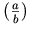 as opposed to the default rendering 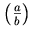.
Note that each parenthesis is sized independently; if only one of
them had maxsize="100%", they would render with different
sizes.
3.2.5.8.2 Vertical Stretching Rules
The general rules governing stretchy operators are:
-
If a stretchy operator is a direct sub-expression of an
mrowelement, or is the sole direct sub-expression of anmtdelement in some row of a table, then it should stretch to cover the height and depth (above and below the axis) of the non-stretchy direct sub-expressions in themrowelement or table row, unless stretching is constrained byminsizeormaxsizeattributes. -
In the case of an embellished stretchy operator, the preceding rule applies to the stretchy operator at its core.
-
The preceding rules also apply in situations where the
mrowelement is inferred. -
The rules for symmetric stretching only apply if
symmetric="true" and if the stretching occurs in anmrowor in anmtrwhoserowalignvalue is either "baseline" or "axis".
The following algorithm specifies the height and depth of vertically stretched characters:
-
Let
maxheightandmaxdepthbe the maximum height and depth of the non-stretchy siblings within the samemrowormtr. Let axis be the height of the math axis above the baseline.Note that even if a
minsizeormaxsizevalue is set on a stretchy operator, it is not used in the initial calculation of the maximum height and depth of anmrow. -
If
symmetric="true", then the computed height and depth of the stretchy operator are:height=max(maxheight-axis, maxdepth+axis) + axis depth =max(maxheight-axis, maxdepth+axis) - axis
Otherwise the height and depth are:
height= maxheight depth = maxdepth
-
If the total size = height+depth is less than minsize or greater than maxsize, increase or decrease both height and depth proportionately so that the effective size meets the constraint.
By default, most vertical arrows, along with most opening and closing fences are defined in the operator dictionary to stretch by default.
In the case of a stretchy operator in a table cell (i.e. within an
mtd element), the above rules assume each cell of
the table row containing the stretchy operator covers exactly one row.
(Equivalently, the value of the rowspan attribute is
assumed to be 1 for all the table cells in the table row, including
the cell containing the operator.) When this is not the case, the
operator should only be stretched vertically to cover those table
cells that are entirely within the set of table rows that the
operator's cell covers. Table cells that extend into rows not covered
by the stretchy operator's table cell should be ignored. See
Section 3.5.4.2 Attributes for details about the rowspan attribute.
3.2.5.8.3 Horizontal Stretching Rules
-
If a stretchy operator, or an embellished stretchy operator, is a direct sub-expression of an
munder,mover, ormunderoverelement, or if it is the sole direct sub-expression of anmtdelement in some column of a table (seemtable), then it, or themoelement at its core, should stretch to cover the width of the other direct sub-expressions in the given element (or in the same table column), given the constraints mentioned above. -
In the case of an embellished stretchy operator, the preceding rule applies to the stretchy operator at its core.
By default, most horizontal arrows and some accents stretch horizontally.
In the case of a stretchy operator in a table cell (i.e. within an
mtd element), the above rules assume each cell of
the table column containing the stretchy operator covers exactly one
column. (Equivalently, the value of the columnspan
attribute is assumed to be 1 for all the table cells in the table row,
including the cell containing the operator.) When this is not the
case, the operator should only be stretched horizontally to cover
those table cells that are entirely within the set of table columns
that the operator's cell covers. Table cells that extend into columns
not covered by the stretchy operator's table cell should be
ignored. See Section 3.5.4.2 Attributes for details about the rowspan attribute.
The rules for horizontal stretching include mtd
elements to allow arrows to stretch for use in commutative diagrams
laid out using mtable. The rules for the horizontal
stretchiness include scripts to make examples such as the following
work:
<mrow>
<mi> x </mi>
<munder>
<mo> →<!--rightwards arrow--> </mo>
<mtext> maps to </mtext>
</munder>
<mi> y </mi>
</mrow>
This displays as
 .
.
3.2.5.8.4 Rules Common to both Vertical and Horizontal Stretching
If a stretchy operator is not required to stretch (i.e. if it is
not in one of the locations mentioned above, or if there are no other
expressions whose size it should stretch to match), then it has the
standard (unstretched) size determined by the font and current
mathsize.
If a stretchy operator is required to stretch, but all other expressions
in the containing element (as described above) are also stretchy,
all elements that can stretch should grow to the maximum of the normal
unstretched sizes of all elements in the containing object, if they can
grow that large. If the value of minsize or maxsize prevents
that, then the specified (min or max) size is
used.
For example, in an mrow containing nothing but
vertically stretchy operators, each of the operators should stretch to
the maximum of all of their normal unstretched sizes, provided no
other attributes are set that override this behavior. Of course,
limitations in fonts or font rendering may result in the final,
stretched sizes being only approximately the same.
3.2.5.9 Examples of Linebreaking
The following example demonstrates forced linebreaks and forced alignment:
<mrow> <mrow> <mi>f</mi> <mo>⁡<!--function application--></mo> <mo>(</mo> <mi>x</mi> <mo>)</mo> </mrow> <mo id='eq1-equals'>=</mo> <mrow> <msup> <mrow> <mo>(</mo> <mrow> <mi>x</mi> <mo>+</mo> <mn>1</mn> </mrow> <mo>)</mo> </mrow> <mn>4</mn> </msup> <mo linebreak='newline' linebreakstyle='before' indentalign='id' indenttarget='eq1-equals'>=</mo> <mrow> <msup> <mi>x</mi> <mn>4</mn> </msup> <mo id='eq1-plus'>+</mo> <mrow> <mn>4</mn> <mo>⁢<!--invisible times--></mo> <msup> <mi>x</mi> <mn>3</mn> </msup> </mrow> <mo>+</mo> <mrow> <mn>6</mn> <mo>⁢<!--invisible times--></mo> <msup> <mi>x</mi> <mn>2</mn> </msup> </mrow> <mo linebreak='newline' linebreakstyle='before' indentalignlast='id' indenttarget='eq1-plus'>+</mo> <mrow> <mn>4</mn> <mo>⁢<!--invisible times--></mo> <mi>x</mi> </mrow> <mo>+</mo> <mn>1</mn> </mrow> </mrow> </mrow>
This displays as
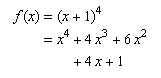
Note that because indentalignlast defaults to "indentalign",
in the above example indentalign could have been used in place of
indentalignlast. Also, the specifying linebreakstyle='before'
is not needed because that is the default value.
3.2.6 Text <mtext>
3.2.6.1 Description
An mtext element is used to represent
arbitrary text that should be rendered as itself. In general, the
mtext element is intended to denote commentary
text.
Note that some text with a clearly defined notational role might be
more appropriately marked up using mi or
mo; this is discussed further below.
An mtext element can be used to contain
"renderable whitespace", i.e. invisible characters that are
intended to alter the positioning of surrounding elements. In non-graphical
media, such characters are intended to have an analogous effect, such as
introducing positive or negative time delays or affecting rhythm in an
audio renderer. This is not related to any whitespace in the source MathML
consisting of blanks, newlines, tabs, or carriage returns; whitespace
present directly in the source is trimmed and collapsed, as described in
Section 2.1.7 Collapsing Whitespace in Input. Whitespace that is intended to be rendered
as part of an element's content must be represented by entity references
or mspace elements
(unless it consists only of single blanks between non-whitespace
characters).
3.2.6.2 Attributes
mtext elements accept the attributes listed in
Section 3.2.2 Mathematics style attributes common to token elements.
See also the warnings about the legal grouping of "space-like elements"
in Section 3.2.7 Space <mspace/>, and about the use of
such elements for "tweaking" in Section 3.1.8 Warning about fine-tuning of presentation.
3.2.6.3 Examples
<mtext> Theorem 1: </mtext> <mtext>  <!--thin space--> </mtext> <mtext>   <!--space of width 5/18 em-->  <!--space of width 5/18 em--> </mtext> <mtext> /* a comment */ </mtext>
3.2.6.4 Mixing text and mathematics
In some cases, text embedded in mathematics could be more appropriately
represented using mo or mi elements.
For example, the expression 'there exists
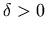
such that f(x) <1' is equivalent to
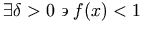
and could be represented as:
<mrow>
<mo> there exists </mo>
<mrow>
<mrow>
<mi> δ<!--greek small letter delta--> </mi>
<mo> > </mo>
<mn> 0 </mn>
</mrow>
<mo> such that </mo>
<mrow>
<mrow>
<mi> f </mi>
<mo> ⁡<!--function application--> </mo>
<mrow>
<mo> ( </mo>
<mi> x </mi>
<mo> ) </mo>
</mrow>
</mrow>
<mo> < </mo>
<mn> 1 </mn>
</mrow>
</mrow>
</mrow>
An example involving an mi element is:
x+x2+···+xn.
In this example, ellipsis should be represented using an mi element, since it takes the place of a term in the
sum; (see Section 3.2.3 Identifier <mi>).
On the other hand, expository text within MathML is best
represented with an mtext element. An example
of this is:
Theorem 1: if x > 1, then x2 > x.
However, when MathML is embedded in HTML, or another document markup language, the example is probably best rendered with only the two inequalities represented as MathML at all, letting the text be part of the surrounding HTML.
Another factor to consider in deciding how to mark up text is the
effect on rendering. Text enclosed in an mo
element is unlikely to be found in a renderer's operator dictionary,
so it will be rendered with the format and spacing appropriate for an
"unrecognized operator", which may or may not be better than the
format and spacing for "text" obtained by using an
mtext element. An ellipsis entity in an
mi element is apt to be spaced more appropriately
for taking the place of a term within a series than if it appeared in
an mtext element.
3.2.7 Space <mspace/>
3.2.7.1 Description
An mspace empty element represents a blank
space of any desired size, as set by its attributes. It can also be
used to make linebreaking suggestions to a visual renderer.
Note that the default values for attributes have been chosen so that
they typically will have no effect on rendering. Thus, the mspace element is generally used with one
or more attribute values explicitly specified.
Note the warning about the legal grouping of "space-like
elements" given below, and the warning about the use of such
elements for "tweaking" in Section 3.1.8 Warning about fine-tuning of presentation.
See also the other elements that can render as
whitespace, namely mtext, mphantom, and
maligngroup.
3.2.7.2 Attributes
In addition to the attributes listed below,
mspace elements accept the attributes described in Section 3.2.2 Mathematics style attributes common to token elements,
but note that mathvariant and mathcolor have no effect and that
mathsize only affects the interpretation of units in sizing
attributes (see Section 2.1.5.2 Length Valued Attributes).
mspace also accepts the indentation attributes described in Section 3.2.5.2.3 Indentation attributes.
| Name | values | default |
|---|---|---|
| width | length | 0em |
| Specifies the desired width of the space. | ||
| height | length | 0ex |
| Specifies the desired height (above the baseline) of the space. | ||
| depth | length | 0ex |
| Specifies the desired depth (below the baseline) of the space. | ||
| linebreak | "auto" | "newline" | "nobreak" | "goodbreak" | "badbreak" | auto |
| Specifies the desirability of a linebreak at this space. This attribute should be ignored if any dimensional attribute is set. | ||
Linebreaking was originally specified on mspace in MathML2,
but controlling linebreaking on mo
is to be preferred starting with MathML 3.
MathML 3 adds new linebreaking attributes only to mo, not mspace.
However, because a linebreak can be specified on mspace,
control over the indentation that follows that break can be specified using the attributes
listed in
Section 3.2.5.2.3 Indentation attributes.
The value "indentingnewline" was defined in MathML2 for mspace;
it is now deprecated. Its meaning is the same as newline, which is compatible with its earlier use when no other linebreaking attributes are
specified.
Note that linebreak values on adjacent mo and mspace elements do
not interact; a "nobreak" on an mspace will
not, in itself, inhibit a break on an adjacent mo element.
3.2.7.3 Examples
<mspace height="3ex" depth="2ex"/> <mrow> <mi>a</mi> <mo id="firstop">+</mo> <mi>b</mi> <mspace linebreak="newline" indentalign="id" indenttarget="firstop"/> <mo>+</mo> <mi>c</mi> </mrow>
In the last example, mspace will cause the line to end after the "b" and the following line to be indented so
that the "+" that follows will align with the "+" with id="firstop".
3.2.7.4 Definition of space-like elements
A number of MathML presentation elements are "space-like" in the
sense that they typically render as whitespace, and do not affect the
mathematical meaning of the expressions in which they appear. As a
consequence, these elements often function in somewhat exceptional
ways in other MathML expressions. For example, space-like elements are
handled specially in the suggested rendering rules for
mo given in Section 3.2.5 Operator, Fence, Separator or Accent
<mo>.
The following MathML elements are defined to be "space-like":
-
an
mtext,mspace,maligngroup, ormalignmarkelement; -
an
mstyle,mphantom, ormpaddedelement, all of whose direct sub-expressions are space-like; -
an
mactionelement whose selected sub-expression exists and is space-like; -
an
mrowall of whose direct sub-expressions are space-like.
Note that an mphantom is not
automatically defined to be space-like, unless its content is
space-like. This is because operator spacing is affected by whether
adjacent elements are space-like. Since the
mphantom element is primarily intended as an aid
in aligning expressions, operators adjacent to an
mphantom should behave as if they were adjacent
to the contents of the mphantom,
rather than to an equivalently sized area of whitespace.
3.2.7.5 Legal grouping of space-like elements
Authors who insert space-like elements or
mphantom elements into an existing MathML
expression should note that such elements are counted as
arguments, in elements that require a specific number of arguments,
or that interpret different argument positions differently.
Therefore, space-like elements inserted into such a MathML element
should be grouped with a neighboring argument of that element by
introducing an mrow for that purpose. For example,
to allow for vertical alignment on the right edge of the base of a
superscript, the expression
<msup> <mi> x </mi> <malignmark edge="right"/> <mn> 2 </mn> </msup>
is illegal, because msup must have exactly 2 arguments;
the correct expression would be:
<msup>
<mrow>
<mi> x </mi>
<malignmark edge="right"/>
</mrow>
<mn> 2 </mn>
</msup>
See also the warning about "tweaking" in Section 3.1.8 Warning about fine-tuning of presentation.
3.2.8 String Literal <ms>
3.2.8.1 Description
The ms element is used to represent
"string literals" in expressions meant to be interpreted by
computer algebra systems or other systems containing "programming
languages". By default, string literals are displayed surrounded by
double quotes, with no extra spacing added around the string.
As explained in Section 3.2.6 Text <mtext>, ordinary text
embedded in a mathematical expression should be marked up with mtext,
or in some cases mo or mi, but never with ms.
Note that the string literals encoded by ms are made up of characters, mglyphs and
malignmarks rather than "ASCII
strings". For
example, <ms>&</ms> represents a string
literal containing a single character, &, and
<ms>&amp;</ms> represents a string literal
containing 5 characters, the first one of which is
&.
The content of ms elements should be rendered with visible
"escaping" of certain characters in the content,
including at least the left and right quoting
characters, and preferably whitespace other than individual
space characters. The intent is for the viewer to see that the
expression is a string literal, and to see exactly which characters
form its content. For example, <ms>double quote is
"</ms> might be rendered as "double quote is \"".
Like all token elements, ms does trim and
collapse whitespace in its content according to the rules of
Section 2.1.7 Collapsing Whitespace in Input, so whitespace intended to remain in
the content should be encoded as described in that section.
3.2.8.2 Attributes
ms elements accept the attributes listed in
Section 3.2.2 Mathematics style attributes common to token elements, and additionally:
| Name | values | default |
|---|---|---|
| lquote | string | " |
| Specifies the opening quote to enclose the content. (not necessarily ‘left quote’ in RTL context). | ||
| rquote | string | " |
| Specifies the closing quote to enclose the content. (not necessarily ‘right quote’ in RTL context). | ||
3.3 General Layout Schemata
Besides tokens there are several families of MathML presentation elements. One family of elements deals with various "scripting" notations, such as subscript and superscript. Another family is concerned with matrices and tables. The remainder of the elements, discussed in this section, describe other basic notations such as fractions and radicals, or deal with general functions such as setting style properties and error handling.
3.3.1 Horizontally Group Sub-Expressions
<mrow>
3.3.1.1 Description
An mrow element is used to group together any
number of sub-expressions, usually consisting of one or more mo elements acting as "operators" on one
or more other expressions that are their "operands".
Several elements automatically treat their arguments as if they were
contained in an mrow element. See the discussion of
inferred mrows in Section 3.1.3 Required Arguments.
See also mfenced (Section 3.3.8 Expression Inside Pair of Fences
<mfenced>),
which can effectively form an mrow containing its arguments separated by commas.
mrow elements are typically rendered visually
as a horizontal row of their arguments, left to right in the order in
which the arguments occur within a context with LTR directionality,
or right to left within a context with RTL directionality.
The dir attribute can be used to specify
the directionality for a specific mrow, otherwise it inherits the
directionality from the context. For aural agents, the arguments would be
rendered audibly as a sequence of renderings of
the arguments. The description in Section 3.2.5 Operator, Fence, Separator or Accent
<mo> of suggested rendering
rules for mo elements assumes that all horizontal
spacing between operators and their operands is added by the rendering
of mo elements (or, more generally, embellished
operators), not by the rendering of the mrows
they are contained in.
MathML provides support for both automatic and manual
linebreaking of expressions (that is, to break excessively long
expressions into several lines). All such linebreaks take place
within mrows, whether they are explicitly marked up
in the document, or inferred (See Section 3.1.3.1 Inferred <mrow>s),
although the control of linebreaking is effected through attributes
on other elements (See Section 3.1.7 Linebreaking of Expressions).
3.3.1.2 Attributes
mrow elements accept the attribute listed below in addition to
those listed in Section 3.1.10 Mathematics style attributes common to presentation elements.
| Name | values | default |
|---|---|---|
| dir | "ltr" | "rtl" | inherited |
specifies the overall directionality ltr (Left To Right) or
rtl (Right To Left) to use to layout the children of the row.
See Section 3.1.5.1 Overall Directionality of Mathematics Formulas for further discussion.
|
||
3.3.1.3 Proper grouping of sub-expressions using <mrow>
Sub-expressions should be grouped by the document author in the same way
as they are grouped in the mathematical interpretation of the expression;
that is, according to the underlying "syntax tree" of the
expression. Specifically, operators and their mathematical arguments should
occur in a single mrow; more than one operator
should occur directly in one mrow only when they
can be considered (in a syntactic sense) to act together on the interleaved
arguments, e.g. for a single parenthesized term and its parentheses, for
chains of relational operators, or for sequences of terms separated by
+ and -. A precise rule is given below.
Proper grouping has several purposes: it improves display by possibly affecting spacing; it allows for more intelligent linebreaking and indentation; and it simplifies possible semantic interpretation of presentation elements by computer algebra systems, and audio renderers.
Although improper grouping will sometimes result in suboptimal
renderings, and will often make interpretation other than pure visual
rendering difficult or impossible, any grouping of expressions using
mrow is allowed in MathML syntax; that is,
renderers should not assume the rules for proper grouping will be
followed.
3.3.1.3.1 <mrow> of one argument
MathML renderers are required to treat an mrow
element containing exactly one argument as equivalent in all ways to
the single argument occurring alone, provided there are no attributes
on the mrow element. If there are
attributes on the mrow element, no
requirement of equivalence is imposed. This equivalence condition is
intended to simplify the implementation of MathML-generating software
such as template-based authoring tools. It directly affects the
definitions of embellished operator and space-like element and the
rules for determining the default value of the form
attribute of an mo element;
see Section 3.2.5 Operator, Fence, Separator or Accent
<mo> and Section 3.2.7 Space <mspace/>. See also the discussion of equivalence of MathML
expressions in Section 2.3 Conformance.
3.3.1.3.2 Precise rule for proper grouping
A precise rule for when and how to nest sub-expressions using
mrow is especially desirable when generating
MathML automatically by conversion from other formats for displayed
mathematics, such as TEX, which don't always specify how sub-expressions
nest. When a precise rule for grouping is desired, the following rule
should be used:
Two adjacent operators, possibly embellished, possibly separated by operands (i.e.
anything
other than operators), should occur in the same
mrow only when the leading operator has an infix or
prefix form (perhaps inferred), the following operator has an infix or
postfix form, and the operators have the same priority in the
operator dictionary (Appendix C Operator Dictionary).
In all other cases, nested mrows should be used.
When forming a nested mrow (during generation
of MathML) that includes just one of two successive operators with
the forms mentioned above (which mean that either operator could in
principle act on the intervening operand or operands), it is necessary
to decide which operator acts on those operands directly (or would do
so, if they were present). Ideally, this should be determined from the
original expression; for example, in conversion from an
operator-precedence-based format, it would be the operator with the
higher precedence.
Note that the above rule has no effect on whether any MathML expression is valid, only on the recommended way of generating MathML from other formats for displayed mathematics or directly from written notation.
(Some of the terminology used in stating the above rule in defined
in Section 3.2.5 Operator, Fence, Separator or Accent
<mo>.)
3.3.1.4 Examples
As an example, 2x+y-z should be written as:
<mrow>
<mrow>
<mn> 2 </mn>
<mo> ⁢<!--invisible times--> </mo>
<mi> x </mi>
</mrow>
<mo> + </mo>
<mi> y </mi>
<mo> - </mo>
<mi> z </mi>
</mrow>
The proper encoding of (x, y) furnishes a less obvious
example of nesting mrows:
<mrow>
<mo> ( </mo>
<mrow>
<mi> x </mi>
<mo> , </mo>
<mi> y </mi>
</mrow>
<mo> ) </mo>
</mrow>
In this case, a nested mrow is required inside
the parentheses, since parentheses and commas, thought of as fence and
separator "operators", do not act together on their arguments.
3.3.2 Fractions <mfrac>
3.3.2.1 Description
The mfrac element is used for fractions. It can
also be used to mark up fraction-like objects such as binomial coefficients
and Legendre symbols. The syntax for mfrac is
<mfrac> numerator denominator </mfrac>
The mfrac element sets displaystyle to "false", or if it
was already false increments scriptlevel by 1,
within numerator and denominator.
(See Section 3.1.6 Displaystyle and Scriptlevel.)
3.3.2.2 Attributes
mfrac elements accept the attributes listed below
in addition to those listed in Section 3.1.10 Mathematics style attributes common to presentation elements.
The fraction line, if any, should be drawn using the color specified by mathcolor.
| Name | values | default |
|---|---|---|
| linethickness | length | "thin" | "medium" | "thick" | medium |
| Specifies the thickness of the horizontal "fraction bar", or "rule" The default value is "medium", "thin" is thinner, but visible, "thick" is thicker; the exact thickness of these is left up to the rendering agent. | ||
| numalign | "left" | "center" | "right" | center |
| Specifies the alignment of the numerator over the fraction. | ||
| denomalign | "left" | "center" | "right" | center |
| Specifies the alignment of the denominator under the fraction. | ||
| bevelled | "true" | "false" | false |
| Specifies whether the fraction should be displayed in a beveled style (the numerator slightly raised, the denominator slightly lowered and both separated by a slash), rather than "build up" vertically. See below for an example. | ||
Thicker lines (e.g. linethickness="thick") might be used with nested fractions;
a value of "0" renders without the bar such as for binomial coefficients.
These cases are shown below:
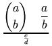
An example illustrating the bevelled form is shown below:
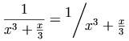
In a RTL directionality context, the numerator leads (on the right),
the denominator follows (on the left) and the diagonal line slants upwards going from
right to left (See Section 3.1.5.1 Overall Directionality of Mathematics Formulas for clarification).
Although this format is an established convention, it is not universally
followed; for situations where a forward slash is desired in a RTL context,
alternative markup, such as an mo within an mrow should be used.
3.3.2.3 Examples
The examples shown above can be represented in MathML as:
<mrow>
<mo> ( </mo>
<mfrac linethickness="0">
<mi> a </mi>
<mi> b </mi>
</mfrac>
<mo> ) </mo>
</mrow>
<mfrac linethickness="200%">
<mfrac>
<mi> a </mi>
<mi> b </mi>
</mfrac>
<mfrac>
<mi> c </mi>
<mi> d </mi>
</mfrac>
</mfrac>
<mfrac>
<mn> 1 </mn>
<mrow>
<msup>
<mi> x </mi>
<mn> 3 </mn>
</msup>
<mo> + </mo>
<mfrac>
<mi> x </mi>
<mn> 3 </mn>
</mfrac>
</mrow>
</mfrac>
<mo> = </mo>
<mfrac bevelled="true">
<mn> 1 </mn>
<mrow>
<msup>
<mi> x </mi>
<mn> 3 </mn>
</msup>
<mo> + </mo>
<mfrac>
<mi> x </mi>
<mn> 3 </mn>
</mfrac>
</mrow>
</mfrac>
A more generic example is:
<mfrac>
<mrow>
<mn> 1 </mn>
<mo> + </mo>
<msqrt>
<mn> 5 </mn>
</msqrt>
</mrow>
<mn> 2 </mn>
</mfrac>
3.3.3 Radicals <msqrt>, <mroot>
3.3.3.1 Description
These elements construct radicals. The msqrt element is
used for square roots, while the mroot element is used
to draw radicals with indices, e.g. a cube root. The syntax for these
elements is:
<msqrt> base </msqrt> <mroot> base index </mroot>
The mroot element requires exactly 2 arguments.
However, msqrt accepts a single argument, possibly
being an inferred mrow of multiple children; see Section 3.1.3 Required Arguments.
The mroot element increments scriptlevel by 2,
and sets displaystyle to "false", within
index, but leaves both attributes unchanged within base.
The msqrt element leaves both
attributes unchanged within its argument.
(See Section 3.1.6 Displaystyle and Scriptlevel.)
Note that in a RTL directionality, the surd begins
on the right, rather than the left, along with the index in the case
of mroot.
3.3.3.2 Attributes
msqrt and mroot elements accept the attributes listed in
Section 3.1.10 Mathematics style attributes common to presentation elements. The surd and overbar should be drawn using the
color specified by mathcolor.
3.3.4 Style Change <mstyle>
3.3.4.1 Description
The mstyle element is used to make style
changes that affect the rendering of its
contents.
Firstly, as a presentation element, it accepts
the attributes described in Section 3.1.10 Mathematics style attributes common to presentation elements.
Additionally, it
can be given any attribute
accepted by any other presentation element, except for the
attributes described below.
Finally,
the mstyle element can be given certain special
attributes listed in the next subsection.
The mstyle element accepts a single argument,
possibly being an inferred mrow of multiple children;
see Section 3.1.3 Required Arguments.
Loosely speaking, the effect of the mstyle element
is to change the default value of an attribute for the elements it
contains. Style changes work in one of several ways, depending on
the way in which default values are specified for an attribute.
The cases are:
-
Some attributes, such as
displaystyleorscriptlevel(explained below), are inherited from the surrounding context when they are not explicitly set. Specifying such an attribute on anmstyleelement sets the value that will be inherited by its child elements. Unless a child element overrides this inherited value, it will pass it on to its children, and they will pass it to their children, and so on. But if a child element does override it, either by an explicit attribute setting or automatically (as is common forscriptlevel), the new (overriding) value will be passed on to that element's children, and then to their children, etc, unless it is again overridden. -
Other attributes, such as
linethicknessonmfrac, have default values that are not normally inherited. That is, if thelinethicknessattribute is not set on themfracelement, it will normally use the default value of "1", even if it was contained in a largermfracelement that set this attribute to a different value. For attributes like this, specifying a value with anmstyleelement has the effect of changing the default value for all elements within its scope. The net effect is that setting the attribute value withmstylepropagates the change to all the elements it contains directly or indirectly, except for the individual elements on which the value is overridden. Unlike in the case of inherited attributes, elements that explicitly override this attribute have no effect on this attribute's value in their children. -
Another group of attributes, such as
stretchyandform, are computed from operator dictionary information, position in the enclosingmrow, and other similar data. For these attributes, a value specified by an enclosingmstyleoverrides the value that would normally be computed.
Note that attribute values inherited from an
mstyle in any manner affect a descendant element
in the mstyle's content only if that attribute is
not given a value by the descendant element. On any element for
which the attribute is set explicitly, the value specified overrides the inherited
value. The only exception to this
rule is when the attribute value
is documented as
specifying an incremental change to the value inherited from that
element's context or rendering environment.
Note also that the difference between inherited and non-inherited
attributes set by mstyle, explained above, only
matters when the attribute is set on some element within the
mstyle's contents that has descendants also
setting it. Thus it never matters for attributes, such as
mathsize, which can only be set on token elements (or on
mstyle itself).
MathML specifies that when
the attributes height, depth or width
are specified on an mstyle element, they apply only to
mspace elements, and not to the corresponding attributes of
mglyph, mpadded, or mtable. Similarly, when
rowalign, columnalign, or groupalign
are specified on an mstyle element, they apply only to the
mtable element, and not the mtr, mlabeledtr,
mtd, and maligngroup elements.
When the lspace attribute is set with mstyle, it
applies only to the mo element and not to mpadded.
To be consistent, the voffset attribute of the
mpadded element can not be set on mstyle.
When the deprecated fontfamily attribute is specified on an
mstyle element, it does not apply to the mglyph element.
The deprecated index attribute cannot be set on mstyle.
When the align attribute is set with mstyle, it
applies only to the munder, mover, and munderover
elements, and not to the mtable and mstack elements.
The required attributes src and alt on mglyph,
and actiontype on maction, cannot be set on mstyle.
As a presentation element, mstyle directly accepts
the mathcolor and mathbackground attributes.
Thus, the mathbackground specifies the color to fill the bounding
box of the mstyle element itself; it does not
specify the default background color.
This is an incompatible change from MathML 2, but we feel it is more useful
and intuitive. Since the default for mathcolor is inherited,
this is no change in its behaviour.
3.3.4.2 Attributes
As stated above, mstyle accepts all
attributes of all MathML presentation elements which do not have
required values. That is, all attributes which have an explicit
default value or a default value which is inherited or computed are
accepted by the mstyle element.
mstyle elements accept the attributes listed in
Section 3.1.10 Mathematics style attributes common to presentation elements.
Additionally, mstyle can be given the following special
attributes that are implicitly inherited by every MathML element as
part of its rendering environment:
| Name | values | default |
|---|---|---|
| scriptlevel | ( "+" | "-" )? unsigned-integer | inherited |
Changes the scriptlevel in effect for the children.
When the value is given without a sign, it sets scriptlevel to the specified value;
when a sign is given, it increments ("+") or decrements ("-") the current value.
(Note that large decrements can result in negative values of scriptlevel,
but these values are considered legal.)
See Section 3.1.6 Displaystyle and Scriptlevel.
|
||
| displaystyle | "true" | "false" | inherited |
Changes the displaystyle in effect for the children.
See Section 3.1.6 Displaystyle and Scriptlevel.
|
||
| scriptsizemultiplier | number | 0.71 |
Specifies the multiplier to be used to adjust font size due
to changes in scriptlevel.
See Section 3.1.6 Displaystyle and Scriptlevel.
|
||
| scriptminsize | length | 8pt |
Specifies the minimum font size allowed due to changes in scriptlevel.
Note that this does not limit the font size due to changes to mathsize.
See Section 3.1.6 Displaystyle and Scriptlevel.
|
||
| infixlinebreakstyle | "before" | "after" | "duplicate" | before |
| Specifies the default linebreakstyle to use for infix operators; see Section 3.2.5.2.2 Linebreaking attributes | ||
| decimalpoint | character | . |
specifies the character used to determine the alignment point within
mstack
and
mtable columns
when the "decimalpoint" value is used to specify the alignment.
The default, ".", is the decimal separator used to separate the integral
and decimal fractional parts of floating point numbers in many countries.
(See Section 3.6 Elementary Math and Section 3.5.5 Alignment Markers
<maligngroup/>, <malignmark/>).
|
||
If scriptlevel is changed incrementally by an
mstyle element that also sets certain other
attributes, the overall effect of the changes may depend on the order
in which they are processed. In such cases, the attributes in the
following list should be processed in the following order, regardless
of the order in which they occur in the XML-format attribute list of
the mstyle start tag:
scriptsizemultiplier, scriptminsize,
scriptlevel, mathsize.
3.3.4.2.1 Deprecated Attributes
MathML2 allowed the binding of namedspaces
to new values.
It appears that this capability was never implemented, and is now deprecated;
namedspaces are now considered constants.
For backwards compatibility, the following attributes are accepted
on the mstyle element, but are expected to have no effect.
| Name | values | default |
|---|---|---|
| veryverythinmathspace | length | 0.0555556em |
| verythinmathspace | length | 0.111111em |
| thinmathspace | length | 0.166667em |
| mediummathspace | length | 0.222222em |
| thickmathspace | length | 0.277778em |
| verythickmathspace | length | 0.333333em |
| veryverythickmathspace | length | 0.388889em |
3.3.4.3 Examples
The example of limiting the stretchiness of a parenthesis shown in the section on <mo>,
<mrow> <mo maxsize="100%"> ( </mo> <mfrac> <mi> a </mi> <mi> b </mi> </mfrac> <mo maxsize="100%"> ) </mo> </mrow>
can be rewritten using mstyle as:
<mstyle maxsize="100%">
<mrow>
<mo> ( </mo>
<mfrac> <mi> a </mi> <mi> b </mi> </mfrac>
<mo> ) </mo>
</mrow>
</mstyle>
3.3.5 Error Message <merror>
3.3.5.1 Description
The merror element displays its contents as an
"error message". This might be done, for example, by displaying the
contents in red, flashing the contents, or changing the background
color. The contents can be any expression or expression sequence.
merror accepts
a single argument possibly being an inferred mrow of multiple children;
see Section 3.1.3 Required Arguments.
The intent of this element is to provide a standard way for programs that generate MathML from other input to report syntax errors in their input. Since it is anticipated that preprocessors that parse input syntaxes designed for easy hand entry will be developed to generate MathML, it is important that they have the ability to indicate that a syntax error occurred at a certain point. See Section 2.3.2 Handling of Errors.
The suggested use of merror for reporting
syntax errors is for a preprocessor to replace the erroneous part of
its input with an merror element containing a
description of the error, while processing the surrounding expressions
normally as far as possible. By this means, the error message will be
rendered where the erroneous input would have appeared, had it been
correct; this makes it easier for an author to determine from the
rendered output what portion of the input was in error.
No specific error message format is suggested here, but as with
error messages from any program, the format should be designed to make
as clear as possible (to a human viewer of the rendered error message)
what was wrong with the input and how it can be fixed. If the
erroneous input contains correctly formatted subsections, it may be
useful for these to be preprocessed normally and included in the error
message (within the contents of the merror
element), taking advantage of the ability of
merror to contain arbitrary MathML expressions
rather than only text.
3.3.5.2 Attributes
merror elements accept the attributes listed in
Section 3.1.10 Mathematics style attributes common to presentation elements.
3.3.5.3 Example
If a MathML syntax-checking preprocessor received the input
<mfraction> <mrow> <mn> 1 </mn> <mo> + </mo> <msqrt> <mn> 5 </mn> </msqrt> </mrow> <mn> 2 </mn> </mfraction>
which contains the non-MathML element mfraction
(presumably in place of the MathML element mfrac),
it might generate the error message
<merror>
<mtext> Unrecognized element: mfraction;
arguments were: </mtext>
<mrow> <mn> 1 </mn> <mo> + </mo> <msqrt> <mn> 5 </mn> </msqrt> </mrow>
<mtext> and </mtext>
<mn> 2 </mn>
</merror>
Note that the preprocessor's input is not, in this case, valid MathML, but the error message it outputs is valid MathML.
3.3.6 Adjust Space Around Content
<mpadded>
3.3.6.1 Description
An mpadded element renders the same as its child content,
but with the size of the child's bounding box and the relative positioning
point of its content modified according to
mpadded's attributes. It
does not rescale (stretch or shrink) its content. The name of the
element reflects the typical use of mpadded to add padding,
or extra space, around its content. However, mpadded can be
used to make more general adjustments of size and positioning, and some
combinations, e.g. negative padding, can cause the content of
mpadded to overlap the rendering of neighboring content. See
Section 3.1.8 Warning about fine-tuning of presentation for warnings about several
potential pitfalls of this effect.
The mpadded element accepts
a single argument which may be an inferred mrow of multiple children;
see Section 3.1.3 Required Arguments.
It is suggested that audio renderers add (or shorten) time delays
based on the attributes representing horizontal space
(width and lspace).
3.3.6.2 Attributes
mpadded elements accept the attributes listed
below in addition to those specified in Section 3.1.10 Mathematics style attributes common to presentation elements.
| Name | values | default |
|---|---|---|
| height | ( "+" | "-" )? unsigned-number ( ("%" pseudo-unit?) | pseudo-unit | unit | namedspace )? | same as content |
Sets or increments the height of the mpadded element.
See below for discussion.
|
||
| depth | ( "+" | "-" )? unsigned-number (("%" pseudo-unit?) | pseudo-unit | unit | namedspace )? | same as content |
Sets or increments the depth of the mpadded element.
See below for discussion.
|
||
| width | ( "+" | "-" )? unsigned-number ( ("%" pseudo-unit?) | pseudo-unit | unit | namedspace )? | same as content |
Sets or increments the width of the mpadded element.
See below for discussion.
|
||
| lspace | ( "+" | "-" )? unsigned-number ( ("%" pseudo-unit?) | pseudo-unit | unit | namedspace )? | 0em |
| Sets the horizontal position of the child content. See below for discussion. | ||
| voffset | ( "+" | "-" )? unsigned-number ( ("%" pseudo-unit?) | pseudo-unit | unit | namedspace )? | 0em |
| Sets the vertical position of the child content. See below for discussion. | ||
The pseudo-unit syntax symbol is described below.
Also, height, depth and
width attributes are
referred to as size attributes, while lspace and voffset attributes
are position attributes.
These attributes specify the size of the bounding box of the mpadded
element relative to the size of the bounding box of its child content, and specify
the position of the child content of the mpadded element relative to the
natural positioning of the mpadded element. The typographical
layout parameters determined by these attributes are described in the next subsection.
Depending on the form of the attribute value, a dimension may be set to a new value,
or specified relative to the child content's corresponding dimension. Values may
be given as
multiples or percentages of any of the
dimensions of the normal rendering of the child content using so-called pseudo-units,
or they can be set directly using standard units Section 2.1.5.2 Length Valued Attributes.
If the value of a size attribute begins with a + or - sign,
it specifies an increment or decrement to the corresponding
dimension by the following length value. Otherwise the corresponding
dimension is set directly to the following length value.
Note that since a leading minus sign indicates a decrement, the size
attributes (height, depth, width)
cannot be set directly to negative values. In addition, specifying a
decrement that would produce a net negative value for these attributes
has the same effect as
setting the attribute to zero. In other words, the effective
bounding box of an mpadded element always has non-negative
dimensions. However, negative values are allowed for the relative positioning
attributes lspace and voffset.
Length values (excluding any sign) can be specified in several formats.
Each format begins with an unsigned-number,
which may be followed by
a % sign (effectively scaling the number)
and an optional pseudo-unit,
by a pseudo-unit alone,
or by a unit (excepting %).
The possible pseudo-units are the keywords height,
depth, and width. They represent the length of the same-named dimension of the
mpadded element's child content.
For any of these length formats, the resulting length
is the product of the number (possibly including the %)
and the following pseudo-unit,
unit,
namedspace
or the default value for the attribute if no such unit or space is given.
Some examples of attribute formats using pseudo-units (explicit or
default) are as follows: depth="100%height" and
depth="1.0height" both set the depth of the
mpadded element to the height of its content.
depth="105%" sets the depth to 1.05 times the content's
depth, and either depth="+100%" or
depth="200%" sets the depth to twice the content's
depth.
The rules given above imply that all of the following attribute settings have the same effect, which is to leave the content's dimensions unchanged:
<mpadded width="+0em"> ... </mpadded> <mpadded width="+0%"> ... </mpadded> <mpadded width="-0em"> ... </mpadded> <mpadded width="-0height"> ... </mpadded> <mpadded width="100%"> ... </mpadded> <mpadded width="100%width"> ... </mpadded> <mpadded width="1width"> ... </mpadded> <mpadded width="1.0width"> ... </mpadded> <mpadded> ... </mpadded>
Note that the examples in the Version 2 of the MathML specification showed spaces within the attribute values, suggesting that this was the intended format. Formally, spaces are not allowed within these values, but implementers may wish to ignore such spaces to maximize backward compatibility.
3.3.6.3 Meanings of size and position attributes
See Appendix D Glossary for definitions of some of the typesetting terms used here.
The content of an mpadded element defines a fragment of mathematical
notation, such as a character, fraction, or expression, that can be regarded as
a single typographical element with a natural positioning point relative to its
natural bounding box.
The size of the bounding box of an mpadded element is
defined as the size of the bounding box of its content, except as
modified by the mpadded element's
height, depth, and
width attributes. The natural positioning point of the
child content of the mpadded element is located to coincide
with the natural positioning point of the mpadded element,
except as modified by the lspace and voffset
attributes. Thus, the size attributes of mpadded can be used
to expand or shrink the apparent bounding box of its content, and the
position attributes of mpadded can be used to move the
content relative to the bounding box (and hence also neighboring elements).
Note that MathML doesn't define the precise relationship between "ink",
bounding boxes and positioning points, which are implementation
specific. Thus, absolute values for mpadded attributes may not be
portable between implementations.
The height attribute specifies the vertical extent of the
bounding box of the mpadded element above its baseline.
Increasing the height increases the space between the baseline
of the mpadded element and the content above it, and introduces
padding above the rendering of the child content. Decreasing the
height reduces the space between the baseline of the
mpadded element and the content above it, and removes
space above the rendering of the child content. Decreasing the
height may cause content above the mpadded
element to overlap the rendering of the child content, and should
generally be avoided.
The depth attribute specifies the vertical extent of the
bounding box of the mpadded element below its baseline.
Increasing the depth increases the space between the baseline
of the mpadded element and the content below it, and introduces
padding below the rendering of the child content. Decreasing the
depth reduces the space between the baseline of the mpadded
element and the content below it, and removes space below the rendering
of the child content. Decreasing the depth may cause content
below the mpadded element to overlap the rendering of the child
content, and should generally be avoided.
The width attribute specifies the horizontal distance
between the positioning point of the mpadded element and the
positioning point of the following content.
Increasing the width increases the space between the
positioning point of the mpadded element and the content
that follows it, and introduces padding after the rendering of the
child content. Decreasing the width reduces the space
between the positioning point of the mpadded element and
the content that follows it, and removes space after the rendering
of the child content. Setting the width to zero causes
following content to be positioned at the positioning point of the
mpadded element. Decreasing the width should
generally be avoided, as it may cause overprinting of the following
content.
The lspace attribute ("leading" space;
see Section 3.1.5.1 Overall Directionality of Mathematics Formulas) specifies the horizontal
location of the positioning point of the child content with respect to
the positioning point of the mpadded element. By default they
coincide, and therefore absolute values for lspace have the same effect
as relative values.
Positive values for the lspace attribute increase the space
between the preceding content and the child content, and introduce padding
before the rendering of the child content. Negative values for the
lspace attributes reduce the space between the preceding
content and the child content, and may cause overprinting of the
preceding content, and should generally be avoided. Note that the
lspace attribute does not affect the width of
the mpadded element, and so the lspace attribute
will also affect the space between the child content and following
content, and may cause overprinting of the following content, unless
the width is adjusted accordingly.
The voffset attribute specifies the vertical location
of the positioning point of the child content with respect to the
positioning point of the mpadded element. Positive values
for the voffset attribute raise the rendering of the child
content above the baseline. Negative values for the voffset
attribute lower the rendering of the child content below the baseline.
In either case, the voffset attribute may cause overprinting
of neighboring content, which should generally be avoided. Note that t
he voffset attribute does not affect the height
or depth of the mpadded element, and so the voffset
attribute will also affect the space between the child content and neighboring
content, and may cause overprinting of the neighboring content, unless the
height or depth is adjusted accordingly.
MathML renderers should ensure that, except for the effects of the
attributes, the relative spacing between the contents of the
mpadded element and surrounding MathML elements would
not be modified by replacing an mpadded element with an
mrow element with the same content, even if linebreaking
occurs within the mpadded element. MathML does not define
how non-default attribute values of an mpadded element interact
with the linebreaking algorithm.
The effects of the size and position attributes are illustrated
below. The following diagram illustrates the use of lspace
and voffset to shift the position of child content without
modifying the mpadded bounding box.

The corresponding MathML is:
<mrow>
<mi>x</mi>
<mpadded lspace="0.2em" voffset="0.3ex">
<mi>y</mi>
</mpadded>
<mi>z</mi>
</mrow>
The next diagram illustrates the use of
width, height and depth
to modifying the mpadded bounding box without changing the relative position
of the child content.

The corresponding MathML is:
<mrow>
<mi>x</mi>
<mpadded width="+90%width" height="+0.3ex" depth="+0.3ex">
<mi>y</mi>
</mpadded>
<mi>z</mi>
</mrow>
The final diagram illustrates the generic use of mpadded to modify both
the bounding box and relative position of child content.

The corresponding MathML is:
<mrow>
<mi>x</mi>
<mpadded lspace="0.3em" width="+0.6em">
<mi>y</mi>
</mpadded>
<mi>z</mi>
</mrow>
3.3.7 Making Sub-Expressions Invisible <mphantom>
3.3.7.1 Description
The mphantom element renders invisibly, but
with the same size and other dimensions, including baseline position,
that its contents would have if they were rendered
normally. mphantom can be used to align parts of
an expression by invisibly duplicating sub-expressions.
The mphantom element accepts
a single argument possibly being an inferred mrow of multiple children;
see Section 3.1.3 Required Arguments.
Note that it is possible to wrap both an
mphantom and an mpadded
element around one MathML expression, as in
<mphantom><mpadded attribute-settings>
... </mpadded></mphantom>, to change its size and make it
invisible at the same time.
MathML renderers should ensure that the relative spacing between
the contents of an mphantom element and the
surrounding MathML elements is the same as it would be if the
mphantom element were replaced by an
mrow element with the same content. This holds
even if linebreaking occurs within the mphantom
element.
For the above reason, mphantom is
not considered space-like (Section 3.2.7 Space <mspace/>) unless its
content is space-like, since the suggested rendering rules for
operators are affected by whether nearby elements are space-like. Even
so, the warning about the legal grouping of space-like elements may
apply to uses of mphantom.
3.3.7.2 Attributes
mphantom elements accept the attributes listed in
Section 3.1.10 Mathematics style attributes common to presentation elements (the mathcolor has no effect).
3.3.7.3 Examples
There is one situation where the preceding rules for rendering an
mphantom may not give the desired effect. When an
mphantom is wrapped around a subsequence of the
arguments of an mrow, the default determination
of the form attribute for an mo
element within the subsequence can change. (See the default value of
the form attribute described in Section 3.2.5 Operator, Fence, Separator or Accent
<mo>.) It may be
necessary to add an explicit form attribute to such an
mo in these cases. This is illustrated in the
following example.
In this example, mphantom is used to ensure
alignment of corresponding parts of the numerator and denominator of a
fraction:
<mfrac>
<mrow>
<mi> x </mi>
<mo> + </mo>
<mi> y </mi>
<mo> + </mo>
<mi> z </mi>
</mrow>
<mrow>
<mi> x </mi>
<mphantom>
<mo form="infix"> + </mo>
<mi> y </mi>
</mphantom>
<mo> + </mo>
<mi> z </mi>
</mrow>
</mfrac>
This would render as something like
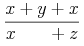
rather than as
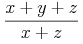
The explicit attribute setting form="infix" on the
mo element inside the mphantom sets the
form attribute to what it would have been in the absence of the
surrounding mphantom. This is necessary since
otherwise, the + sign would be interpreted as a prefix
operator, which might have slightly different spacing.
Alternatively, this problem could be avoided without any explicit
attribute settings, by wrapping each of the arguments
<mo>+</mo> and <mi>y</mi> in its
own mphantom element, i.e.
<mfrac>
<mrow>
<mi> x </mi>
<mo> + </mo>
<mi> y </mi>
<mo> + </mo>
<mi> z </mi>
</mrow>
<mrow>
<mi> x </mi>
<mphantom>
<mo> + </mo>
</mphantom>
<mphantom>
<mi> y </mi>
</mphantom>
<mo> + </mo>
<mi> z </mi>
</mrow>
</mfrac>
3.3.8 Expression Inside Pair of Fences
<mfenced>
3.3.8.1 Description
The mfenced element provides a convenient form
in which to express common constructs involving fences (i.e. braces,
brackets, and parentheses), possibly including separators (such as
comma) between the arguments.
For example, <mfenced> <mi>x</mi> </mfenced>
renders as "(x)" and is equivalent to
<mrow> <mo> ( </mo> <mi>x</mi> <mo> ) </mo> </mrow>
and
<mfenced> <mi>x</mi> <mi>y</mi> </mfenced>
renders as "(x, y)"
and is equivalent to
<mrow> <mo> ( </mo> <mrow> <mi>x</mi> <mo>,</mo> <mi>y</mi> </mrow> <mo> ) </mo> </mrow>
Individual fences or separators are represented using
mo elements, as described in Section 3.2.5 Operator, Fence, Separator or Accent
<mo>. Thus, any mfenced
element is completely equivalent to an expanded form described below;
either form can be used in MathML, at the convenience of an author or
of a MathML-generating program. A MathML renderer is required to
render either of these forms in exactly the same way.
In general, an mfenced element can contain
zero or more arguments, and will enclose them between fences in an
mrow; if there is more than one argument, it will
insert separators between adjacent arguments, using an additional
nested mrow around the arguments and separators
for proper grouping (Section 3.3.1 Horizontally Group Sub-Expressions
<mrow>). The general expanded form is
shown below. The fences and separators will be parentheses and comma
by default, but can be changed using attributes, as shown in the
following table.
3.3.8.2 Attributes
mfenced elements accept the attributes listed
below in addition to those specified in Section 3.1.10 Mathematics style attributes common to presentation elements.
The delimiters and separators should be drawn using the color specified by mathcolor.
| Name | values | default |
|---|---|---|
| open | string | ( |
Specifies the opening delimiter.
Since it is used as the content of an mo element, any whitespace
will be trimmed and collapsed as described in Section 2.1.7 Collapsing Whitespace in Input.
|
||
| close | string | ) |
Specifies the closing delimiter.
Since it is used as the content of an mo element, any whitespace
will be trimmed and collapsed as described in Section 2.1.7 Collapsing Whitespace in Input.
|
||
| separators | string | , |
Specifies a sequence of zero or more separator characters, optionally separated by
whitespace.
Each pair of arguments is displayed separated by the corresponding separator
(none appears after the last argument).
If there are too many separators, the excess are ignored;
if there are too few, the last separator is repeated.
Any whitespace within separators is ignored.
|
||
A generic mfenced element, with all attributes
explicit, looks as follows:
<mfenced open="opening-fence"
close="closing-fence"
separators="sep#1 sep#2 ... sep#(n-1)" >
arg#1
...
arg#n
</mfenced>
In an RTL directionality context, since the initial text
direction is RTL, characters in the open and close
attributes that have a mirroring counterpart will be rendered in that
mirrored form. In particular, the default values will render correctly
as a parenthesized sequence in both LTR and RTL contexts.
The general mfenced element shown above is
equivalent to the following expanded form:
<mrow>
<mo fence="true"> opening-fence </mo>
<mrow>
arg#1
<mo separator="true"> sep#1 </mo>
...
<mo separator="true"> sep#(n-1) </mo>
arg#n
</mrow>
<mo fence="true"> closing-fence </mo>
</mrow>
Each argument except the last is followed by a separator. The inner
mrow is added for proper grouping, as described in
Section 3.3.1 Horizontally Group Sub-Expressions
<mrow>.
When there is only one argument, the above form has no separators;
since <mrow> arg#1 </mrow> is equivalent to
arg#1 (as described in Section 3.3.1 Horizontally Group Sub-Expressions
<mrow>), this case is also equivalent to:
<mrow> <mo fence="true"> opening-fence </mo> arg#1 <mo fence="true"> closing-fence </mo> </mrow>
If there are too many separator characters, the extra ones are
ignored. If separator characters are given, but there are too few, the
last one is repeated as necessary. Thus, the default value of
separators="," is equivalent to
separators=",,", separators=",,,", etc. If
there are no separator characters provided but some are needed, for
example if separators=" " or "" and there is more than
one argument, then no separator elements are inserted at all — that
is, the elements <mo separator="true"> sep#i
</mo> are left out entirely. Note that this is different
from inserting separators consisting of mo
elements with empty content.
Finally, for the case with no arguments, i.e.
<mfenced open="opening-fence"
close="closing-fence"
separators="anything" >
</mfenced>
the equivalent expanded form is defined to include just
the fences within an mrow:
<mrow> <mo fence="true"> opening-fence </mo> <mo fence="true"> closing-fence </mo> </mrow>
Note that not all "fenced expressions" can be encoded by an
mfenced element. Such exceptional expressions
include those with an "embellished" separator or fence or one
enclosed in an mstyle element, a missing or extra
separator or fence, or a separator with multiple content
characters. In these cases, it is necessary to encode the expression
using an appropriately modified version of an expanded form. As
discussed above, it is always permissible to use the expanded form
directly, even when it is not necessary. In particular, authors cannot
be guaranteed that MathML preprocessors won't replace occurrences of
mfenced with equivalent expanded forms.
Note that the equivalent expanded forms shown above include
attributes on the mo elements that identify them as fences or
separators. Since the most common choices of fences and separators
already occur in the operator dictionary with those attributes,
authors would not normally need to specify those attributes explicitly
when using the expanded form directly. Also, the rules for the default
form attribute (Section 3.2.5 Operator, Fence, Separator or Accent
<mo>) cause the
opening and closing fences to be effectively given the values
form="prefix" and
form="postfix" respectively, and the
separators to be given the value
form="infix".
Note that it would be incorrect to use mfenced
with a separator of, for instance, "+", as an abbreviation for an
expression using "+" as an ordinary operator, e.g.
<mrow> <mi>x</mi> <mo>+</mo> <mi>y</mi> <mo>+</mo> <mi>z</mi> </mrow>
This is because the + signs would be treated as separators,
not infix operators. That is, it would render as if they were marked up as
<mo separator="true">+</mo>, which might therefore
render inappropriately.
3.3.8.3 Examples
(a+b)
<mfenced>
<mrow>
<mi> a </mi>
<mo> + </mo>
<mi> b </mi>
</mrow>
</mfenced>
Note that the above mrow is necessary so that
the mfenced has just one argument. Without it, this
would render incorrectly as "(a, +,
b)".
[0,1)
<mfenced open="["> <mn> 0 </mn> <mn> 1 </mn> </mfenced>
f(x,y)
<mrow> <mi> f </mi> <mo> ⁡<!--function application--> </mo> <mfenced> <mi> x </mi> <mi> y </mi> </mfenced> </mrow>
3.3.9 Enclose Expression Inside Notation
<menclose>
3.3.9.1 Description
The menclose element renders its content
inside the enclosing notation specified by its notation attribute.
menclose accepts
a single argument possibly being an inferred mrow of multiple children;
see Section 3.1.3 Required Arguments.
3.3.9.2 Attributes
menclose elements accept the attributes listed
below in addition to those specified in Section 3.1.10 Mathematics style attributes common to presentation elements.
The notations should be drawn using the color specified by mathcolor.
The values allowed for notation are open-ended.
Conforming renderers may ignore any value they do not handle, although
renderers are encouraged to render as many of the values listed below as
possible.
| Name | values | default |
|---|---|---|
| notation | ("longdiv" | "actuarial" | "phasorangle" | "radical" | "box" | "roundedbox" | "circle" | "left" | "right" | "top" | "bottom" | "updiagonalstrike" | "downdiagonalstrike" | "verticalstrike" | "horizontalstrike" | "northeastarrow" | "madruwb" | text) + | longdiv |
| Specifies a space separated list of notations to be used to enclose the children. See below for a description of each type of notation. | ||
Any number of values can be given for
notation separated by whitespace; all of those given and
understood by a MathML renderer should be rendered.
Each should be rendered as if the others were not present; they should not nest one
inside of the other. For example,
notation="circle box" should
result in circle and a box around the contents of menclose; the circle and box may overlap. This is shown in the first example below.
Of the predefined notations, only the following are
affected by the directionality (see Section 3.1.5.1 Overall Directionality of Mathematics Formulas):
-
"radical"
-
"phasorangle"
When notation has the value "longdiv",
the contents are drawn enclosed by a long division symbol.
MathML 3 adds the mlongdiv element
(Section 3.6.2 Long Division <mlongdiv>). This element supports notations for long division
used in several countries and can be used to create a complete example of
long division as shown in Section 3.6.8.3 Long Division.
When notation is specified as
"actuarial", the contents are drawn enclosed by an
actuarial symbol. A similar result can be achieved
with the value "top right". The case of
notation="radical" is equivalent to the
msqrt schema.
The values "box", "roundedbox", and "circle" should enclose the contents as indicated by the values. The amount of distance between the box, roundedbox, or circle, and the contents are not specified by MathML, and is left to the renderer. In practice, paddings on each side of 0.4em in the horizontal direction and .5ex in the vertical direction seem to work well.
The values "left",
"right", "top" and
"bottom" should result in lines drawn on those sides of
the contents. The values "northeastarrow",
"updiagonalstrike",
"downdiagonalstrike", "verticalstrike"
and "horizontalstrike" should result in the indicated
strikeout lines being superimposed over the content of the
menclose, e.g. a strikeout that extends from the lower left
corner to the upper right corner of the menclose element for
"updiagonalstrike", etc.
The value "northeastarrow" is a recommended value to implement because it can be
used to implement TeX's \cancelto command. If a renderer implements other arrows for
menclose, it is recommended that the arrow names are chosen from the following full set of
names for consistancy and standardization among renderers:
-
"uparrow"
-
"rightarrow"
-
"downarrow"
-
"leftarrow"
-
"northwestarrow"
-
"southwestarrow"
-
"southeastarrow"
-
"northeastarrow"
-
"updownarrow"
-
"leftrightarrow"
-
"northwestsoutheastarrow"
-
"northeastsouthwestarrow"
The value "madruwb" should generate an enclosure representing an Arabic factorial (‘madruwb’ is the transliteration of the Arabic مضروب for factorial). This is shown in the third example below.
The baseline of an menclose element is the baseline of its child (which might be an implied mrow).
3.3.9.3 Examples
An example of using multiple attributes is
<menclose notation='circle box'> <mi> x </mi><mo> + </mo><mi> y </mi> </menclose>
which renders with the box and circle overlapping roughly as
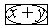
.
An example of using menclose for actuarial
notation is
<msub>
<mi>a</mi>
<mrow>
<menclose notation='actuarial'>
<mi>n</mi>
</menclose>
<mo>⁣<!--invisible separator--></mo>
<mi>i</mi>
</mrow>
</msub>
which renders roughly as
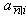
An example of "phasorangle", which is used in circuit analysis, is:
<mi>C</mi>
<mrow>
<menclose notation='phasorangle'>
<mrow>
<mo>−<!--minus sign--></mo>
<mfrac>
<mi>π<!--greek small letter pi--></mi>
<mn>2</mn>
</mfrac>
</mrow>
</menclose>
</mrow>
which renders roughly as
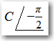
An example of "madruwb" is:
<menclose notation="madruwb">
<mn>12</mn>
</menclose>
which renders roughly as
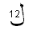
.
3.4 Script and Limit Schemata
The elements described in this section position one or more scripts around a base. Attaching various kinds of scripts and embellishments to symbols is a very common notational device in mathematics. For purely visual layout, a single general-purpose element could suffice for positioning scripts and embellishments in any of the traditional script locations around a given base. However, in order to capture the abstract structure of common notation better, MathML provides several more specialized scripting elements.
In addition to sub/superscript elements, MathML has overscript
and underscript elements that place scripts above and below the base. These
elements can be used to place limits on large operators, or for placing
accents and lines above or below the base. The rules for rendering accents
differ from those for overscripts and underscripts, and this difference can
be controlled with the accent and accentunder attributes, as described in the appropriate
sections below.
Rendering of scripts is affected by the scriptlevel and displaystyle
attributes, which are part of the environment inherited by the rendering
process of every MathML expression, and are described in Section 3.1.6 Displaystyle and Scriptlevel.
These attributes cannot be given explicitly on a scripting element, but can be
specified on the start tag of a surrounding mstyle
element if desired.
MathML also provides an element for attachment of tensor indices. Tensor indices are distinct from ordinary subscripts and superscripts in that they must align in vertical columns. Tensor indices can also occur in prescript positions. Note that ordinary scripts follow the base (on the right in LTR context, but on the left in RTL context); prescripts precede the base (on the left (right) in LTR (RTL) context).
Because presentation elements should be used to describe the abstract notational structure of expressions, it is important that the base expression in all "scripting" elements (i.e. the first argument expression) should be the entire expression that is being scripted, not just the trailing character. For example, (x+y)2 should be written as:
<msup>
<mrow>
<mo> ( </mo>
<mrow>
<mi> x </mi>
<mo> + </mo>
<mi> y </mi>
</mrow>
<mo> ) </mo>
</mrow>
<mn> 2 </mn>
</msup>
3.4.1 Subscript <msub>
3.4.1.1 Description
The msub element attaches a subscript to a base using the syntax
<msub> base subscript </msub>
It increments scriptlevel by 1, and sets displaystyle to
"false", within subscript, but leaves both attributes
unchanged within base. (See Section 3.1.6 Displaystyle and Scriptlevel.)
3.4.1.2 Attributes
msub elements accept the attributes listed
below in addition to those specified in Section 3.1.10 Mathematics style attributes common to presentation elements.
| Name | values | default |
|---|---|---|
| subscriptshift | length | automatic |
| Specifies the minimum amount to shift the baseline of subscript down; the default is for the rendering agent to use its own positioning rules. | ||
3.4.2 Superscript <msup>
3.4.2.1 Description
The msup element attaches a superscript to a base using the syntax
<msup> base superscript </msup>
It increments scriptlevel by 1, and sets displaystyle to "false", within
superscript, but leaves both attributes unchanged within
base. (See Section 3.1.6 Displaystyle and Scriptlevel.)
3.4.2.2 Attributes
msup elements accept the attributes listed
below in addition to those specified in Section 3.1.10 Mathematics style attributes common to presentation elements.
| Name | values | default |
|---|---|---|
| superscriptshift | length | automatic |
| Specifies the minimum amount to shift the baseline of superscript up; the default is for the rendering agent to use its own positioning rules. | ||
3.4.3 Subscript-superscript Pair <msubsup>
3.4.3.1 Description
The msubsup element is used to attach both a subscript and
superscript to a base expression.
<msubsup> base subscript superscript </msubsup>
It increments scriptlevel by 1, and sets displaystyle to
"false", within subscript and superscript,
but leaves both attributes unchanged within base.
(See Section 3.1.6 Displaystyle and Scriptlevel.)
Note that both scripts are positioned tight against the base as shown here
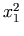
versus the staggered positioning of nested scripts as shown here
 ;
the latter can be achieved by nesting an
;
the latter can be achieved by nesting an msub inside an msup.
3.4.3.2 Attributes
msubsup elements accept the attributes listed
below in addition to those specified in Section 3.1.10 Mathematics style attributes common to presentation elements.
| Name | values | default |
|---|---|---|
| subscriptshift | length | automatic |
| Specifies the minimum amount to shift the baseline of subscript down; the default is for the rendering agent to use its own positioning rules. | ||
| superscriptshift | length | automatic |
| Specifies the minimum amount to shift the baseline of superscript up; the default is for the rendering agent to use its own positioning rules. | ||
3.4.3.3 Examples
The msubsup is most commonly used for adding
sub/superscript pairs to identifiers as illustrated above. However,
another important use is placing limits on certain large operators
whose limits are traditionally displayed in the script positions even
when rendered in display style. The most common of these is the
integral. For example,
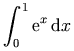
would be represented as
<mrow>
<msubsup>
<mo> ∫<!--integral--> </mo>
<mn> 0 </mn>
<mn> 1 </mn>
</msubsup>
<mrow>
<msup>
<mi> ⅇ<!--double-struck italic small e--> </mi>
<mi> x </mi>
</msup>
<mo> ⁢<!--invisible times--> </mo>
<mrow>
<mo> ⅆ<!--double-struck italic small d--> </mo>
<mi> x </mi>
</mrow>
</mrow>
</mrow>
3.4.4 Underscript <munder>
3.4.4.1 Description
The munder element attaches an accent or limit placed under a base using the syntax
<munder> base underscript </munder>
It always sets displaystyle to "false" within the underscript,
but increments scriptlevel by 1 only when accentunder is "false".
Within base, it always leaves both attributes unchanged.
(See Section 3.1.6 Displaystyle and Scriptlevel.)
If base is an operator with movablelimits="true"
(or an embellished operator whose mo element core has movablelimits="true"),
and displaystyle="false",
then underscript is drawn in a subscript position.
In this case, the accentunder attribute is ignored.
This is often used for limits on symbols such as ∑.
3.4.4.2 Attributes
munder elements accept the attributes listed
below in addition to those specified in Section 3.1.10 Mathematics style attributes common to presentation elements.
| Name | values | default |
|---|---|---|
| accentunder | "true" | "false" | automatic |
Specifies whether underscript is drawn as an "accent" or as a limit.
An accent is drawn the same size as the base (without incrementing scriptlevel)
and is drawn closer to the base.
|
||
| align | "left" | "right" | "center" | center |
| Specifies whether the script is aligned left, center, or right under/over the base. As specfied in Section 3.2.5.8.3 Horizontal Stretching Rules, the core of underscripts that are embellished operators should stretch to cover the base, but the alignment is based on the entire underscript. | ||
The default value of accentunder is false, unless
underscript is an mo element or an
embellished operator (see Section 3.2.5 Operator, Fence, Separator or Accent
<mo>). If
underscript is an mo element, the
value of its accent attribute is used as the default
value of accentunder. If underscript is an
embellished operator, the accent attribute of the
mo element at its core is used as the default
value. As with all attributes, an explicitly given value overrides
the default.
Here is an example (accent versus underscript): 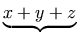 versus 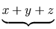. The MathML representation for this example is shown below.
3.4.4.3 Examples
The MathML representation for the example shown above is:
<mrow>
<munder accentunder="true">
<mrow>
<mi> x </mi>
<mo> + </mo>
<mi> y </mi>
<mo> + </mo>
<mi> z </mi>
</mrow>
<mo> ⏟<!--bottom curly bracket--> </mo>
</munder>
<mtext> <!--no-break space-->versus <!--no-break space--></mtext>
<munder accentunder="false">
<mrow>
<mi> x </mi>
<mo> + </mo>
<mi> y </mi>
<mo> + </mo>
<mi> z </mi>
</mrow>
<mo> ⏟<!--bottom curly bracket--> </mo>
</munder>
</mrow>
3.4.5 Overscript <mover>
3.4.5.1 Description
The mover element attaches an accent or limit placed over a base using the syntax
<mover> base overscript </mover>
It always sets displaystyle to "false" within overscript,
but increments scriptlevel by 1 only when accent is "false".
Within base, it always leaves both attributes unchanged.
(See Section 3.1.6 Displaystyle and Scriptlevel.)
If base is an operator with movablelimits="true"
(or an embellished operator whose mo element core has movablelimits="true"),
and displaystyle="false",
then overscript is drawn in a superscript position.
In this case, the accent attribute is ignored.
This is often used for limits on symbols such as ∑.
3.4.5.2 Attributes
mover elements accept the attributes listed
below in addition to those specified in Section 3.1.10 Mathematics style attributes common to presentation elements.
| Name | values | default |
|---|---|---|
| accent | "true" | "false" | automatic |
Specifies whether overscript is drawn as an "accent" or as a limit.
An accent is drawn the same size as the base (without incrementing scriptlevel)
and is drawn closer to the base.
|
||
| align | "left" | "right" | "center" | center |
| Specifies whether the script is aligned left, center, or right under/over the base. As specfied in Section 3.2.5.8.3 Horizontal Stretching Rules, the core of overscripts that are embellished operators should stretch to cover the base, but the alignment is based on the entire overscript. | ||
The difference between an accent versus limit is shown here:
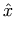 versus
 .
These differences also apply to "mathematical accents" such as
bars or braces over expressions:
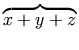 versus
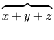.
The MathML representation for each of these examples is shown below.
.
These differences also apply to "mathematical accents" such as
bars or braces over expressions:
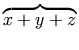 versus
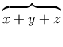.
The MathML representation for each of these examples is shown below.
The default value of accent is false, unless
overscript is an mo element or an
embellished operator (see Section 3.2.5 Operator, Fence, Separator or Accent
<mo>). If
overscript is an mo element, the value
of its accent attribute is used as the default value
of accent for mover. If
overscript is an embellished operator, the accent attribute of the mo
element at its core is used as the default value.
3.4.5.3 Examples
The MathML representation for the examples shown above is:
<mrow>
<mover accent="true">
<mi> x </mi>
<mo> ^<!--circumflex accent--> </mo>
</mover>
<mtext> <!--no-break space-->versus <!--no-break space--></mtext>
<mover accent="false">
<mi> x </mi>
<mo> ^<!--circumflex accent--> </mo>
</mover>
</mrow>
<mrow>
<mover accent="true">
<mrow>
<mi> x </mi>
<mo> + </mo>
<mi> y </mi>
<mo> + </mo>
<mi> z </mi>
</mrow>
<mo> ⏞<!--top curly bracket--> </mo>
</mover>
<mtext> <!--no-break space-->versus <!--no-break space--></mtext>
<mover accent="false">
<mrow>
<mi> x </mi>
<mo> + </mo>
<mi> y </mi>
<mo> + </mo>
<mi> z </mi>
</mrow>
<mo> ⏞<!--top curly bracket--> </mo>
</mover>
</mrow>
3.4.6 Underscript-overscript Pair
<munderover>
3.4.6.1 Description
The munderover element attaches accents or limits placed both over and under a base using the syntax
<munderover> base underscript overscript </munderover>
It always sets displaystyle to "false"
within underscript and overscript,
but increments scriptlevel by 1 only when
accentunder or accent, respectively, are "false".
Within base, it always leaves both attributes unchanged.
(see Section 3.1.6 Displaystyle and Scriptlevel).
If base is an operator with movablelimits="true"
(or an embellished operator whose mo element core has movablelimits="true"),
and displaystyle="false",
then underscript and overscript are drawn in a subscript and superscript position,
respectively. In this case, the accentunder and accent attributes are ignored.
This is often used for limits on symbols such as ∑.
3.4.6.2 Attributes
munderover elements accept the attributes listed
below in addition to those specified in Section 3.1.10 Mathematics style attributes common to presentation elements.
| Name | values | default |
|---|---|---|
| accent | "true" | "false" | automatic |
Specifies whether overscript is drawn as an "accent" or as a limit.
An accent is drawn the same size as the base (without incrementing scriptlevel)
and is drawn closer to the base.
|
||
| accentunder | "true" | "false" | automatic |
Specifies whether underscript is drawn as an "accent" or as a limit.
An accent is drawn the same size as the base (without incrementing scriptlevel)
and is drawn closer to the base.
|
||
| align | "left" | "right" | "center" | center |
| Specifies whether the scripts are aligned left, center, or right under/over the base. As specfied in Section 3.2.5.8.3 Horizontal Stretching Rules, the core of underscripts and overscripts that are embellished operators should stretch to cover the base, but the alignment is based on the entire underscript or overscript. | ||
The munderover element is used instead of separate
munder and mover elements so that the
underscript and overscript are vertically spaced equally in relation
to the base and so that they follow the slant of the base as in the
second expression shown below:
 versus
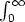.
The MathML representation for this example is shown below.
versus
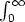.
The MathML representation for this example is shown below.
The difference in the vertical spacing is too small to be noticed on a low resolution display at a normal font size, but is noticeable on a higher resolution device such as a printer and when using large font sizes. In addition to the visual differences, attaching both the underscript and overscript to the same base more accurately reflects the semantics of the expression.
The defaults for accent and accentunder
are computed in the same way as for
munder and
mover, respectively.
3.4.6.3 Examples
The MathML representation for the example shown above with the first
expression made using separate munder and
mover elements, and the second one using an
munderover element, is:
<mrow>
<mover>
<munder>
<mo> ∫<!--integral--> </mo>
<mn> 0 </mn>
</munder>
<mi> ∞<!--infinity--> </mi>
</mover>
<mtext> <!--no-break space-->versus <!--no-break space--></mtext>
<munderover>
<mo> ∫<!--integral--> </mo>
<mn> 0 </mn>
<mi> ∞<!--infinity--> </mi>
</munderover>
</mrow>
3.4.7 Prescripts and Tensor Indices
<mmultiscripts>,
<mprescripts/>,
<none/>
3.4.7.1 Description
Presubscripts and tensor notations are represented by a single
element, mmultiscripts, using the syntax:
<mmultiscripts>
base
(subscript superscript)*
[ <mprescripts/> (presubscript presuperscript)* ]
</mmultiscripts>
This element allows the representation of any number of vertically-aligned pairs of
subscripts
and superscripts, attached to one base expression. It supports both
postscripts and
prescripts.
Missing scripts can be represented by the empty element
none.
The prescripts are optional, and when present are given after the postscripts, because prescripts are relatively rare compared to tensor notation.
The argument sequence consists of the base followed by zero or more
pairs of vertically-aligned subscripts and superscripts (in that
order) that represent all of the postscripts. This list is optionally
followed by an empty element mprescripts and a
list of zero or more pairs of vertically-aligned presubscripts and
presuperscripts that represent all of the prescripts. The pair lists
for postscripts and prescripts are displayed in the same order as the
directional context (ie. left-to-right order in LTR context). If
no subscript or superscript should be rendered in a given position,
then the empty element none should be used in
that position.
For each sub and superscript pair,
horizontal-alignment of the elements in the pair should be
towards the the base of the mmultiscripts.
That is, pre-scripts should be right aligned,
and post-scripts should be left aligned.F
The base, subscripts, superscripts, the optional separator element
mprescripts, the presubscripts, and the
presuperscripts, are all direct sub-expressions of the
mmultiscripts element, i.e. they are all at the
same level of the expression tree. Whether a script argument is a
subscript or a superscript, or whether it is a presubscript or a
presuperscript is determined by whether it occurs in an even-numbered
or odd-numbered argument position, respectively, ignoring the empty
element mprescripts itself when determining the
position. The first argument, the base, is considered to be in
position 1. The total number of arguments must be odd, if
mprescripts is not given, or even, if it is.
The empty element mprescripts is only allowed as direct sub-expression
of mmultiscripts.
3.4.7.2 Attributes
Same as the attributes of msubsup. See
Section 3.4.3.2 Attributes.
The mmultiscripts element increments scriptlevel by 1, and sets displaystyle to "false", within
each of its arguments except base, but leaves both attributes
unchanged within base. (See Section 3.1.6 Displaystyle and Scriptlevel.)
3.4.7.3 Examples
ExamplesF of the use of mmultiscripts are:
0F1(;a;z).
<mrow>
<mmultiscripts>
<mi> F </mi>
<mn> 1 </mn>
<none/>
<mprescripts/>
<mn> 0 </mn>
<none/>
</mmultiscripts>
<mo> ⁡<!--function application--> </mo>
<mrow>
<mo> ( </mo>
<mrow>
<mo> ; </mo>
<mi> a </mi>
<mo> ; </mo>
<mi> z </mi>
</mrow>
<mo> ) </mo>
</mrow>
</mrow>
 (where k and l are different indices)
(where k and l are different indices)
<mmultiscripts> <mi> R </mi> <mi> i </mi> <none/> <none/> <mi> j </mi> <mi> k </mi> <none/> <mi> l </mi> <none/> </mmultiscripts>
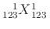F
<mmultiscripts>
<mi> X </mi>
<mn> 123 </mn>
<mn> 1 </mn>
<mprescripts/>
<mn> 123 </mn>
<mn> 1 </mn>
</mmultiscripts>
FAn additional example of mmultiscripts shows how the binomial
coefficient
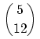
can be displayed in Arabic style
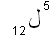
<mstyle dir="rtl"> <mmultiscripts><mo>ل<!--arabic letter lam--></mo> <mn>12</mn><none/> <mprescripts/> <none/><mn>5</mn> </mmultiscripts> </mstyle>
3.5 Tabular Math
Matrices, arrays and other table-like mathematical notation are marked
up using mtable,
mtr, mlabeledtr and
mtd elements. These elements are similar to the
table, tr and td elements of HTML, except that they provide
specialized attributes for the fine layout control
necessary for commutative diagrams, block matrices and so on.
While the two-dimensional layouts used for elementary math such as addition and multiplication
are somewhat similar to tables, they differ in important ways.
For layout and for accessibility reasons, the mstack and mlongdiv elements discussed
in Section 3.6 Elementary Math should be used for elementary math notations.
In addition to the table elements mentioned above, the mlabeledtr element is used for labeling rows
of a table. This is useful for numbered equations.
The first child of mlabeledtr is the label.
A label is somewhat special in that it is not considered an expression
in the matrix and is not counted when determining the number of columns
in that row.
3.5.1 Table or Matrix
<mtable>
3.5.1.1 Description
A matrix or table is specified using the mtable element. Inside of the mtable element, only mtr
or mlabeledtr elements may appear.
(In MathML 1.x, the mtable was allowed to ‘infer’ mtr elements around its arguments,
and the mtr element could infer mtd elements.
This behaviour is deprecated.)
Table rows that have fewer columns than other rows of the same
table (whether the other rows precede or follow them) are effectively
padded on the right (or left in RTL context) with empty mtd elements so
that the number of columns in each row equals the maximum number of
columns in any row of the table. Note that the use of
mtd elements with non-default values of the
rowspan or columnspan
attributes may affect
the number of mtd elements that should be given
in subsequent mtr elements to cover a given
number of columns.
Note also that the label in an mlabeledtr element
is not considered a column in the table.
MathML does not specify a table layout algorithm. In
particular, it is the responsibility of a MathML renderer to resolve
conflicts between the width attribute and other
constraints on the width of a table, such as explicit values for columnwidth attributes,
and minimum sizes for table cell contents. For a discussion of table layout algorithms,
see
Cascading
Style Sheets, level 2.
3.5.1.2 Attributes
mtable elements accept the attributes listed
below in addition to those specified in Section 3.1.10 Mathematics style attributes common to presentation elements.
Any rules drawn as part of the mtable should be drawn using the color
specified by mathcolor.
| Name | values | default |
|---|---|---|
| align | ("top" | "bottom" | "center" | "baseline" | "axis"), rownumber? | axis |
specifies the vertical alignment of the table with respect to its environment.
"axis" means to align the vertical center of the table on
the environment's axis.
(The axis of an equation is an alignment line used by typesetters.
It is the line on which a minus sign typically lies.)
"center" and "baseline" both mean to align the center of the table
on the environment's baseline.
"top" or "bottom" aligns the top or bottom of the table on the environment's baseline.
If the align attribute value ends with a rownumber,
the specified row (counting from 1 for the top row), rather than the table as a whole,
is aligned in the way described above with the exceptions noted below.
If rownumber is negative, it counts rows from the bottom.
When the value of rownumber is out of range or not an integer, it is ignored.
If a row number is specified and the alignment value is "baseline" or "axis",
the row's baseline or axis is used for alignment. Note this is only well defined when
the rowalign
value is "baseline" or "axis"; MathML does not specify how
"baseline" or "axis" alignment should occur for other values of rowalign.
|
||
| rowalign | ("top" | "bottom" | "center" | "baseline" | "axis") + | baseline |
| specifies the vertical alignment of the cells with respect to other cells within the same row: "top" aligns the tops of each entry across the row; "bottom" aligns the bottoms of the cells, "center" centers the cells; "baseline" aligns the baselines of the cells; "axis" aligns the axis of each cells. (See the note below about multiple values). | ||
| columnalign | ("left" | "center" | "right") + | center |
| specifies the horizontal alignment of the cells with respect to other cells within the same column: "left" aligns the left side of the cells; "center" centers each cells; "right" aligns the right side of the cells. (See the note below about multiple values). | ||
| groupalign | group-alignment-list-list | {left} |
[this attribute is described with the alignment elements, maligngroup and malignmark,
in Section 3.5.5 Alignment Markers
<maligngroup/>, <malignmark/>.]
|
||
| alignmentscope | ("true" | "false") + | true |
[this attribute is described with the alignment elements, maligngroup and malignmark,
in Section 3.5.5 Alignment Markers
<maligngroup/>, <malignmark/>.]
|
||
| columnwidth | ("auto" | length | "fit") + | auto |
specifies how wide a column should be:
"auto" means that the column should be as wide as needed;
an explicit length means that the column is exactly that wide and the contents of
that column are made to fit
by linewrapping or clipping at the discretion of the renderer;
"fit" means that the page width
remaining after subtracting the "auto" or fixed width columns
is divided equally among the "fit" columns.
If insufficient room remains to hold the
contents of the "fit" columns, renderers may
linewrap or clip the contents of the "fit" columns.
Note that when the columnwidth is specified as
a percentage, the value is relative to the width of the table, not
as a percentage of the default (which is "auto"). That
is, a renderer should try to adjust the width of the column so that it
covers the specified percentage of the entire table width.
(See the note below about multiple values).
|
||
| width | "auto" | length | auto |
| specifies the desired width of the entire table and is intended for visual user agents. When the value is a percentage value or number without unit, the value is relative to the horizontal space that a MathML renderer has available , this is the current target width as used for linebreaking as specified in Section 3.1.7 Linebreaking of Expressions; this allows the author to specify, for example, a table being full width of the display. When the value is "auto", the MathML renderer should calculate the table width from its contents using whatever layout algorithm it chooses. | ||
| rowspacing | (length) + | 1.0ex |
| specifies how much space to add between rows. (See the note below about multiple values). | ||
| columnspacing | (length) + | 0.8em |
| specifies how much space to add between columns. (See the note below about multiple values). | ||
| rowlines | ("none" | "solid" | "dashed") + | none |
| specifies whether and what kind of lines should be added between each row: "none" means no lines; "solid" means solid lines; "dashed" means dashed lines (how the dashes are spaced is implementation dependent). (See the note below about multiple values). | ||
| columnlines | ("none" | "solid" | "dashed") + | none |
| specifies whether and what kind of lines should be added between each column: "none" means no lines; "solid" means solid lines; "dashed" means dashed lines (how the dashes are spaced is implementation dependent). (See the note below about multiple values). | ||
| frame | "none" | "solid" | "dashed" | none |
| specifies whether and what kind of lines should be drawn around the table. "none" means no lines; "solid" means solid lines; "dashed" means dashed lines (how the dashes are spaced is implementation dependent). | ||
| framespacing | length, length | 0.4em 0.5ex |
specifies the additional spacing added between the table and frame,
if frame is not "none".
The first value specifies the spacing on the right and left;
the second value specifies the spacing above and below.
|
||
| equalrows | "true" | "false" | false |
| specifies whether to force all rows to have the same total height. | ||
| equalcolumns | "true" | "false" | false |
| specifies whether to force all columns to have the same total width. | ||
| displaystyle | "true" | "false" | false |
specifies the value of displaystyle within each cell,
(scriptlevel is not changed);
see Section 3.1.6 Displaystyle and Scriptlevel.
|
||
| side | "left" | "right" | "leftoverlap" | "rightoverlap" | right |
specifies on what side of the table labels from enclosed mlabeledtr (if any) should be placed.
The variants "leftoverlap" and "rightoverlap"
are useful when the table fits with the allowed width
when the labels are omitted, but not when they are included:
in such cases, the labels will overlap the row placed above it
if the rowalign for that row is "top",
otherwise it is placed below it.
|
||
| minlabelspacing | length | 0.8em |
| specifies the minimum space allowed between a label and the adjacent cell in the row. | ||
In the above specifications for attributes affecting rows
(respectively, columns, or the gaps between rows or columns),
the notation (...)+ means that multiple values can be given for the attribute
as a space separated list (see Section 2.1.5 MathML Attribute Values).
In this context, a single value specifies the value to be used for all rows (resp.,
columns or gaps).
A list of values are taken to apply to corresponding rows (resp., columns or gaps)
in order, that is starting from the top row for rows or first column (left or right,
depending on directionality) for columns.
If there are more rows (resp., columns or gaps) than supplied values, the last value
is repeated as needed.
If there are too many values supplied, the excess are ignored.
Note that none of the areas occupied by lines
frame, rowlines and columnlines,
nor the spacing framespacing, rowspacing or columnspacing,
nor the label in mlabeledtr are counted as rows or columns.
The displaystyle attribute is allowed on the mtable
element to set the inherited value of the attribute. If the attribute is
not present, the mtable element sets displaystyle to
"false" within the table elements.
(See Section 3.1.6 Displaystyle and Scriptlevel.)
3.5.1.3 Examples
A 3 by 3 identity matrix could be represented as follows:
<mrow>
<mo> ( </mo>
<mtable>
<mtr>
<mtd> <mn>1</mn> </mtd>
<mtd> <mn>0</mn> </mtd>
<mtd> <mn>0</mn> </mtd>
</mtr>
<mtr>
<mtd> <mn>0</mn> </mtd>
<mtd> <mn>1</mn> </mtd>
<mtd> <mn>0</mn> </mtd>
</mtr>
<mtr>
<mtd> <mn>0</mn> </mtd>
<mtd> <mn>0</mn> </mtd>
<mtd> <mn>1</mn> </mtd>
</mtr>
</mtable>
<mo> ) </mo>
</mrow>
This might be rendered as:
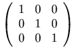
Note that the parentheses must be represented explicitly; they are not
part of the mtable element's rendering. This allows
use of other surrounding fences, such as brackets, or none at all.
3.5.2 Row in Table or Matrix <mtr>
3.5.2.1 Description
An mtr element represents one row in a table
or matrix. An mtr element is only allowed as a
direct sub-expression of an mtable element, and
specifies that its contents should form one row of the table. Each
argument of mtr is placed in a different column
of the table, starting at the leftmost column in a LTR context or rightmost
column in a RTL context.
As described in Section 3.5.1 Table or Matrix
<mtable>,
mtr elements are
effectively padded with mtd
elements when they are shorter than other rows in a table.
3.5.2.2 Attributes
mtr elements accept the attributes listed
below in addition to those specified in Section 3.1.10 Mathematics style attributes common to presentation elements.
| Name | values | default |
|---|---|---|
| rowalign | "top" | "bottom" | "center" | "baseline" | "axis" | inherited |
overrides, for this row, the vertical alignment of cells specified
by the rowalign attribute on the mtable.
|
||
| columnalign | ("left" | "center" | "right") + | inherited |
overrides, for this row, the horizontal alignment of cells specified
by the columnalign attribute on the mtable.
|
||
| groupalign | group-alignment-list-list | inherited |
[this attribute is described with the alignment elements, maligngroup and malignmark,
in Section 3.5.5 Alignment Markers
<maligngroup/>, <malignmark/>.]
|
||
3.5.3 Labeled Row in Table or Matrix
<mlabeledtr>
3.5.3.1 Description
An mlabeledtr element represents one row in
a table that has a label on either the left or right side, as
determined by the side attribute. The label is
the first child of mlabeledtr, and should be enclosed in an mtd.
The rest of the children represent the contents of the row and are treated identically
to the children of mtr; consequently all of the children
must be mtd elements.
An mlabeledtr element is only allowed as a
direct sub-expression of an mtable element.
Each argument of mlabeledtr except for the first
argument (the label) is placed in a different column
of the table, starting at the leftmost column.
Note that the label element is not considered to be a cell in the
table row. In particular, the label element is not taken into
consideration in the table layout for purposes of width and alignment
calculations. For example, in the case of an mlabeledtr with a label and a single centered mtd child, the child is first centered in the
enclosing mtable, and then the label is
placed. Specifically, the child is not centered in the
space that remains in the table after placing the label.
While MathML does not specify an algorithm for placing labels,
implementers of visual renderers may find the following formatting
model useful. To place a label, an implementor might think in terms
of creating a larger table, with an extra column on both ends. The
columnwidth attributes of both these border
columns would be set to "fit" so that they expand
to fill whatever space remains after the inner columns have been laid
out. Finally, depending on the values of side
and minlabelspacing, the label is placed
in whatever border column is appropriate, possibly shifted down if
necessary, and aligned according to columnalignment.
3.5.3.2 Attributes
The attributes for mlabeledtr are the same
as for mtr. Unlike the attributes for the
mtable element, attributes of
mlabeledtr that apply to column elements
also apply to the label. For example, in a one column table,
<mlabeledtr rowalign='top'>
means that the label and other entries in the row are vertically aligned
along their top. To force a particular alignment on the label,
the appropriate attribute would normally be set on the
mtd element that surrounds the label content.
3.5.3.3 Equation Numbering
One of the important uses of mlabeledtr is
for numbered equations. In a mlabeledtr, the
label represents the equation number and the elements in the row are
the equation being numbered. The side and minlabelspacing attributes of mtable determine the placement of the equation
number.
In larger documents with many numbered equations, automatic
numbering becomes important. While automatic equation numbering and
automatically resolving references to equation numbers is outside the
scope of MathML, these problems can be addressed by the use of style
sheets or other means. The mlabeledtr construction provides support
for both of these functions in a way that is intended to facilitate
XSLT processing. The mlabeledtr element can be
used to indicate the presence of a numbered equation, and the first
child can be changed to the current equation number, along with
incrementing the global equation number. For cross references, an
id on either the mlabeledtr element or on the first element
itself could be used as a target of any link.
Alternatively, in a CSS context, one could use an empty mtd
as the first child of mlabeledtr and use CSS counters and generated content
to fill in the equation number using a CSS style such as
body {counter-reset: eqnum;}
mtd.eqnum {counter-increment: eqnum;}
mtd.eqnum:before {content: "(" counter(eqnum) ")"}
3.5.3.4 Example
<mtable>
<mlabeledtr id='e-is-m-c-square'>
<mtd>
<mtext> (2.1) </mtext>
</mtd>
<mtd>
<mrow>
<mi>E</mi>
<mo>=</mo>
<mrow>
<mi>m</mi>
<mo>⁢<!--invisible times--></mo>
<msup>
<mi>c</mi>
<mn>2</mn>
</msup>
</mrow>
</mrow>
</mtd>
</mlabeledtr>
</mtable>
This should be rendered as:
| E = mc2 | (2.1) |
3.5.4 Entry in Table or Matrix <mtd>
3.5.4.1 Description
An mtd element represents one entry, or cell, in a
table or matrix. An mtd element is only
allowed as a direct sub-expression of an mtr
or an mlabeledtr element.
The mtd element accepts
a single argument possibly being an inferred mrow of multiple children;
see Section 3.1.3 Required Arguments.
3.5.4.2 Attributes
mtd elements accept the attributes listed
below in addition to those specified in Section 3.1.10 Mathematics style attributes common to presentation elements.
| Name | values | default |
|---|---|---|
| rowspan | positive-integer | 1 |
causes the cell to be treated as if it occupied the number of rows specified.
The corresponding mtd in the following "rowspan"-1 rows must be omitted.
The interpretation corresponds with the similar attributes for HTML 4.01 tables.
|
||
| columnspan | positive-integer | 1 |
causes the cell to be treated as if it occupied the number of columns specified.
The following "rowspan"-1 mtds must be omitted.
The interpretation corresponds with the similar attributes for HTML 4.01 tables.
|
||
| rowalign | "top" | "bottom" | "center" | "baseline" | "axis" | inherited |
specifies the vertical alignment of this cell, overriding any value
specified on the containing mrow and mtable.
See the rowalign attribute of mtable.
|
||
| columnalign | "left" | "center" | "right" | inherited |
specifies the horizontal alignment of this cell, overriding any value
specified on the containing mrow and mtable.
See the columnalign attribute of mtable.
|
||
| groupalign | group-alignment-list | inherited |
[this attribute is described with the alignment elements, maligngroup and malignmark,
in Section 3.5.5 Alignment Markers
<maligngroup/>, <malignmark/>.]
|
||
The rowspan and columnspan attributes
can be used around an mtd element that represents
the label in a mlabeledtr element.
Also, the label of a mlabeledtr element is not
considered to be part of a previous rowspan and
columnspan.
3.5.5 Alignment Markers
<maligngroup/>, <malignmark/>
3.5.5.1 Description
Alignment markers are space-like elements (see Section 3.2.7 Space <mspace/>) that can be used
to vertically align specified points within a column of MathML
expressions by the automatic insertion of the necessary amount of
horizontal space between specified sub-expressions.
The discussion that follows will use the example of a set of simultaneous equations that should be rendered with vertical alignment of the coefficients and variables of each term, by inserting spacing somewhat like that shown here:
8.44x + 55 y = 0
3.1 x - 0.7y = -1.1
If the example expressions shown above were arranged in a column but not aligned, they would appear as:
8.44x + 55y = 0
3.1x - 0.7y = -1.1
For audio renderers, it is suggested that the alignment elements produce the analogous behavior of altering the rhythm of pronunciation so that it is the same for several sub-expressions in a column, by the insertion of the appropriate time delays in place of the extra horizontal spacing described here.
The expressions whose parts are to be aligned (each equation, in the
example above) must be given as the table elements (i.e. as the mtd elements) of one column of an
mtable. To avoid confusion, the term "table
cell" rather than "table element" will be used in the
remainder of this section.
All interactions between alignment elements are limited to the
mtable column they arise in. That is, every
column of a table specified by an mtable element
acts as an "alignment scope" that contains within it all alignment
effects arising from its contents. It also excludes any interaction
between its own alignment elements and the alignment elements inside
any nested alignment scopes it might contain.
The reason mtable columns are used as
alignment scopes is that they are the only general way in MathML to
arrange expressions into vertical columns. Future versions of MathML
may provide an malignscope element that allows
an alignment scope to be created around any MathML element, but even
then, table columns would still sometimes need to act as alignment
scopes, and since they are not elements themselves, but rather are
made from corresponding parts of the content of several
mtr elements, they could not individually be the
content of an alignment scope element.
An mtable element can be given the attribute
alignmentscope="false" to cause
its columns not to act as alignment scopes. This is discussed further at
the end of this section. Otherwise, the discussion in this section assumes
that this attribute has its default value of "true".
3.5.5.2 Specifying alignment groups
To cause alignment, it is necessary to specify, within each
expression to be aligned, the points to be aligned with corresponding
points in other expressions, and the beginning of each alignment
group of sub-expressions that can be horizontally shifted as a
unit to effect the alignment. Each alignment group must contain one
alignment point. It is also necessary to specify which expressions in
the column have no alignment groups at all, but are affected only by
the ordinary column alignment for that column of the table, i.e. by
the columnalign attribute, described elsewhere.
The alignment groups start at the locations of invisible
maligngroup elements, which are rendered with
zero width when they occur outside of an alignment scope, but within
an alignment scope are rendered with just enough horizontal space to
cause the desired alignment of the alignment group that follows
them. A simple algorithm by which a MathML application can achieve this is given
later. In the example above, each equation would have one
maligngroup element before each coefficient,
variable, and operator on the left-hand side, one before the
= sign, and one before the constant on the right-hand
side.
In general, a table cell containing n
maligngroup elements contains n
alignment groups, with the ith group consisting of the
elements entirely after the ith
maligngroup element and before the
(i+1)-th; no element within the table cell's content
should occur entirely before its first
maligngroup element.
Note that the division into alignment groups does not
necessarily fit the nested expression structure of the MathML
expression containing the groups — that is, it is permissible for one
alignment group to consist of the end of one
mrow, all of another one, and the beginning of a
third one, for example. This can be seen in the MathML markup for the
present example, given at the end of this section.
The nested expression structure formed by mrows
and other layout schemata should reflect the mathematical structure of the
expression, not the alignment-group structure, to make possible optimal
renderings and better automatic interpretations; see the discussion of
proper grouping in section Section 3.3.1 Horizontally Group Sub-Expressions
<mrow>. Insertion of
alignment elements (or other space-like elements) should not alter the
correspondence between the structure of a MathML expression and the
structure of the mathematical expression it represents.
Although alignment groups need not
coincide with the nested expression structure of layout schemata,
there are nonetheless restrictions on where an maligngroup
element is allowed within a table cell. The maligngroup
element may only be contained within elements (directly or indirectly) of the following
types
(which are themselves contained in the table cell):
-
an
mrowelement, including an inferredmrowsuch as the one formed by a multi-childmtdelement, but excludingmrowwhich contains a change of direction using thedirattribute; -
an
mstyleelement , but excluding those which change direction using thedirattribute; -
an
mphantomelement; -
an
mfencedelement; -
an
mactionelement, though only its selected sub-expression is checked; -
a
semanticselement.
These restrictions are intended to ensure that alignment can be unambiguously specified, while avoiding complexities involving things like overscripts, radical signs and fraction bars. They also ensure that a simple algorithm suffices to accomplish the desired alignment.
Note that some positions for an maligngroup
element, although legal, are not useful, such as an
maligngroup element that is an argument of an
mfenced element. Similarly, when inserting an maligngroup
element in an element whose arguments have positional significance, it
is necessary to introduce a new mrow element
containing just the maligngroup element and the child element
it precedes in order to preserve the proper expression structure. For
example, to insert an maligngroup before the denominator
child of an mfrac element, it is necessary to enclose the
maligngroup and the denominator in an mrow to
avoid introducing an illegal third child in the
mfrac. In general, this will be necessary except
when the maligngroup element is inserted directly into an
mrow or into an element that can form an inferred
mrow from its contents. See the warning about the legal
grouping of "space-like elements" in Section 3.2.7 Space <mspace/> for an analogous example
involving malignmark.
For the table cells that are divided into alignment groups, every
element in their content must be part of exactly one alignment group,
except for the elements from the above list that contain
maligngroup elements inside them and the
maligngroup elements themselves. This means
that, within any table cell containing alignment groups, the first
complete element must be an maligngroup element,
though this may be preceded by the start tags of other elements.
This requirement removes a potential confusion about how to align
elements before the first maligngroup element,
and makes it easy to identify table cells that are left out of their
column's alignment process entirely.
Note that it is not required that the table cells in a column that are divided into alignment groups each contain the same number of groups. If they don't, zero-width alignment groups are effectively added on the right side (or left side, in a RTL context) of each table cell that has fewer groups than other table cells in the same column.
3.5.5.3 Table cells that are not divided into alignment groups
Expressions in a column that are to have no alignment groups
should contain no maligngroup
elements. Expressions with no alignment groups are aligned using only
the columnalign attribute that applies to the table
column as a whole, and are not affected by the groupalign
attribute described below. If such an expression is wider than the
column width needed for the table cells containing alignment groups,
all the table cells containing alignment groups will be shifted as a
unit within the column as described by the columnalign
attribute for that column. For example, a column heading with no
internal alignment could be added to the column of two equations given
above by preceding them with another table row containing an
mtext element for the heading, and using the
default columnalign="center" for the table, to
produce:
equations with aligned variables
8.44x + 55 y = 0
3.1 x - 0.7y = -1.1
or, with a shorter heading,
some equations 8.44x + 55 y = 0 3.1 x - 0.7y = -1.1
3.5.5.4 Specifying alignment points using <malignmark/>
Each alignment group's alignment point can either be specified by
an malignmark element anywhere within the
alignment group (except within another alignment scope wholly
contained inside it), or it is determined automatically from the
groupalign attribute. The groupalign
attribute can be specified on the group's preceding
maligngroup element or on its surrounding
mtd, mtr, or
mtable elements. In typical cases, using the
groupalign attribute is sufficient to describe the
desired alignment points, so no malignmark
elements need to be provided.
The malignmark element indicates that the
alignment point should occur on the right edge of the preceding
element, or the left edge of the following element or character,
depending on the edge attribute of
malignmark. Note that it may be necessary to
introduce an mrow to group an
malignmark element with a neighboring element,
in order not to alter the argument count of the containing
element. (See the warning about the legal grouping of "space-like
elements" in Section 3.2.7 Space <mspace/>).
When an malignmark element is provided within an
alignment group, it can occur in an arbitrarily deeply nested element
within the group, as long as it is not within a nested alignment scope. It
is not subject to the same restrictions on location as maligngroup elements. However, its immediate
surroundings need to be such that the element to its immediate right or
left (depending on its edge attribute) can be
unambiguously identified. If no such element is present, renderers should
behave as if a zero-width element had been inserted there.
For the purposes of alignment, an element X is considered to be to the
immediate left of an element Y, and Y to the immediate right of X, whenever
X and Y are successive arguments of one (possibly inferred) mrow element,
with X coming before Y (in a LTR context; with X coming after Y in a RTL context).
In the case of
mfenced elements, MathML applications should evaluate this
relation as if the mfenced element had been
replaced by the equivalent expanded form involving mrow. Similarly, an maction
element should be treated as if it were replaced by its currently selected
sub-expression. In all other cases, no relation of "to the immediate
left or right" is defined for two elements X and Y. However, in the
case of content elements interspersed in presentation markup, MathML applications
should attempt to evaluate this relation in a sensible way. For example, if
a renderer maintains an internal presentation structure for rendering
content elements, the relation could be evaluated with respect to
that. (See Chapter 4 Content Markup and Chapter 5 Mixing Markup Languages for Mathematical Expressions for further
details about mixing presentation and content markup.)
malignmark elements are allowed to occur within
the content of token elements, such as mn,
mi, or mtext. When this
occurs, the character immediately before or after the
malignmark element will carry the alignment
point; in all other cases, the element to its immediate left or right
will carry the alignment point. The rationale for this is that it is
sometimes desirable to align on the edges of specific characters
within multi-character token elements.
If there is more than one malignmark element
in an alignment group, all but the first one will be ignored. MathML
applications may wish to provide a mode in which they will warn about
this situation, but it is not an error, and should trigger no warnings
by default. The rationale for this is that it would
be inconvenient to have to remove all
unnecessary malignmark elements from
automatically generated data, in certain cases, such as when they are
used to specify alignment on "decimal points" other than the '.'
character.
3.5.5.5 <malignmark/> Attributes
malignmark elements accept the attributes listed
below in addition to those specified in Section 3.1.10 Mathematics style attributes common to presentation elements
(however, neither mathcolor nor mathbackground have any effect).
| Name | values | default |
|---|---|---|
| edge | "left" | "right" | left |
| see the discussion below. | ||
The
edge attribute specifies whether the alignment point will be
found on the left or right edge of some element or character. The
precise location meant by "left edge" or "right edge" is discussed
below. If edge="right", the alignment point is the right
edge of the element or character to the immediate left of the
malignmark element. If edge="left",
the alignment point is the left edge of the element or character to
the immediate right of the malignmark
element. Note that the attribute refers to the choice of edge rather
than to the direction in which to look for the element whose edge will
be used.
For malignmark elements that occur within
the content of MathML token elements, the preceding or following
character in the token element's content is used; if there is no such
character, a zero-width character is effectively inserted for the
purpose of carrying the alignment point on its edge. For all other
malignmark elements, the preceding or following
element is used; if there is no such element, a zero-width element is
effectively inserted to carry the alignment point.
The precise definition of the "left edge" or "right edge" of a character or glyph (e.g. whether it should coincide with an edge of the character's bounding box) is not specified by MathML, but is at the discretion of the renderer; the renderer is allowed to let the edge position depend on the character's context as well as on the character itself.
For proper alignment of columns of numbers (using groupalign values of "left", "right", or "decimalpoint"), it is
likely to be desirable for the effective width (i.e. the distance between
the left and right edges) of decimal digits to be constant, even if their
bounding box widths are not constant (e.g. if "1" is narrower
than other digits). For other characters, such as letters and operators, it
may be desirable for the aligned edges to coincide with the bounding
box.
The "left edge" of a MathML element or alignment group
refers to the left edge of the leftmost glyph drawn to render the element
or group, except that explicit space represented by mspace or mtext elements
should also count as "glyphs" in this context, as should
glyphs that would be drawn if not for mphantom
elements around them. The "right edge" of an element or
alignment group is defined similarly.
3.5.5.6 <maligngroup/> Attributes
maligngroup elements accept the attributes listed
below in addition to those specified in Section 3.1.10 Mathematics style attributes common to presentation elements
(however, neither mathcolor nor mathbackground have any effect).
| Name | values | default |
|---|---|---|
| groupalign | "left" | "center" | "right" | "decimalpoint" | inherited |
| see the discussion below. | ||
maligngroup has one attribute,
groupalign, which is used to determine the position of
its group's alignment point when no malignmark
element is present. The following discussion assumes that no
malignmark element is found within a group.
In the example given at the beginning of this section, there is one
column of 2 table cells, with 7 alignment groups in each table cell;
thus there are 7 columns of alignment groups, with 2 groups, one above
the other, in each column. These columns of alignment groups should be
given the 7 groupalign values "decimalpoint left left
decimalpoint left left decimalpoint", in that order. How to specify
this list of values for a table cell or table column as a whole, using
attributes on elements surrounding the
maligngroup element is described later.
If groupalign is "left",
"right", or "center", the alignment point is
defined to be at the group's left edge, at its right edge, or halfway
between these edges, respectively. The meanings of "left edge"
and "right edge" are as discussed above in relation to malignmark.
If groupalign is "decimalpoint",
the alignment point is the right edge of the character immediately before the
left-most 'decimal point', i.e. matching the character specified by
the decimalpoint attribute of mstyle (default ".", U+002E)
in the first mn element found along
the alignment group's baseline. More precisely, the alignment group is
scanned recursively, depth-first, for the first mn
element, descending into all arguments of each element of the types
mrow (including inferred
mrows), mstyle,
mpadded, mphantom, menclose,
mfenced, or msqrt,
descending into only the first argument of each "scripting" element
(msub, msup,
msubsup, munder,
mover, munderover,
mmultiscripts) or of each
mroot or semantics element,
descending into only the selected sub-expression of each
maction element, and skipping the content of all
other elements. The first mn so found always
contains the alignment point, which is the right edge of the last
character before the first decimal point in the content of the
mn element. If there is no decimal point in the
mn element, the alignment point is the right edge
of the last character in the content. If the decimal point is the
first character of the mn element's content, the
right edge of a zero-width character inserted before the decimal point
is used. If no mn element is found, the right
edge of the entire alignment group is used (as for
groupalign="right").
In order to permit alignment on decimal points in
cn elements, a MathML application can convert a
content expression into a presentation expression that renders the
same way before searching for decimal points as described above.
Characters other than "." can be used as
"decimal points" for alignment by using mstyle;
more arbitrary alignment points can chosen by embedding malignmark elements
within the mn token's content itself.
For any of the groupalign values, if an explicit
malignmark element is present anywhere within
the group, the position it specifies (described earlier) overrides the
automatic determination of alignment point from the
groupalign value.
3.5.5.7 Inheritance of groupalign values
It is not usually necessary to put a groupalign
attribute on every maligngroup element. Since
this attribute is usually the same for every group in a column of
alignment groups to be aligned, it can be inherited from an attribute
on the mtable that was used to set up the
alignment scope as a whole, or from the mtr or
mtd elements surrounding the alignment group. It
is inherited via an "inheritance path" that proceeds from
mtable through successively contained
mtr, mtd, and
maligngroup elements. There is exactly one
element of each of these kinds in this path from an
mtable to any alignment group inside it. In
general, the value of groupalign will be
inherited by any given alignment group from the innermost element
that surrounds the alignment group and provides an explicit
setting for this attribute. For example, if an
mtable element specifies values for groupalign and
a maligngroup element within the table also specifies an
explicit groupalign value, then then the value from the
maligngroup takes priority.
Note, however, that each mtd element needs, in
general, a list of groupalign values, one for each
maligngroup element inside it (from left to right, in an LTR context,
or from right to left in an RTL context), rather than just
a single value. Furthermore, an mtr or
mtable element needs, in general, a list of lists
of groupalign values, since it spans multiple
mtable columns, each potentially acting as an
alignment scope. Such lists of group-alignment values are specified
using the following syntax rules:
group-alignment = "left" | "right" | "center" | "decimalpoint"
group-alignment-list = group-alignment +
group-alignment-list-list = ( "{" group-alignment-list "}" ) +
As described in Section 2.1.5 MathML Attribute Values, | separates
alternatives; + represents optional repetition (i.e. 1 or
more copies of what precedes it), with extra values ignored and the
last value repeated if necessary to cover additional table columns or
alignment group columns; '{' and '}'
represent literal braces; and ( and ) are
used for grouping, but do not literally appear in the attribute
value.
The permissible values of the groupalign attribute of the
elements that have this attribute are specified using the above
syntax definitions as follows:
| Element type | groupalign attribute syntax | default value |
|---|---|---|
mtable |
group-alignment-list-list | {left} |
mtr |
group-alignment-list-list | inherited from mtable attribute |
mlabeledtr |
group-alignment-list-list | inherited from mtable attribute |
mtd |
group-alignment-list | inherited from within mtr attribute |
maligngroup |
group-alignment | inherited from within mtd attribute |
In the example near the beginning of this section, the group
alignment values could be specified on every mtd
element using groupalign = "decimalpoint left left
decimalpoint left left decimalpoint", or on every
mtr element using groupalign =
"{decimalpoint left left decimalpoint left left decimalpoint}", or
(most conveniently) on the mtable as a whole
using groupalign = "{decimalpoint left left decimalpoint
left left decimalpoint}", which provides a single braced list of
group-alignment values for the single column of expressions to be
aligned.
3.5.5.8 MathML representation of an alignment example
The above rules are sufficient to explain the MathML representation of the example given near the start of this section. To repeat the example, the desired rendering is:
8.44x + 55 y = 0
3.1 x - 0.7y = -1.1
One way to represent that in MathML is:
<mtable groupalign=
"{decimalpoint left left decimalpoint left left decimalpoint}">
<mtr>
<mtd>
<mrow>
<mrow>
<mrow>
<maligngroup/>
<mn> 8.44 </mn>
<mo> ⁢<!--invisible times--> </mo>
<maligngroup/>
<mi> x </mi>
</mrow>
<maligngroup/>
<mo> + </mo>
<mrow>
<maligngroup/>
<mn> 55 </mn>
<mo> ⁢<!--invisible times--> </mo>
<maligngroup/>
<mi> y </mi>
</mrow>
</mrow>
<maligngroup/>
<mo> = </mo>
<maligngroup/>
<mn> 0 </mn>
</mrow>
</mtd>
</mtr>
<mtr>
<mtd>
<mrow>
<mrow>
<mrow>
<maligngroup/>
<mn> 3.1 </mn>
<mo> ⁢<!--invisible times--> </mo>
<maligngroup/>
<mi> x </mi>
</mrow>
<maligngroup/>
<mo> - </mo>
<mrow>
<maligngroup/>
<mn> 0.7 </mn>
<mo> ⁢<!--invisible times--> </mo>
<maligngroup/>
<mi> y </mi>
</mrow>
</mrow>
<maligngroup/>
<mo> = </mo>
<maligngroup/>
<mrow>
<mo> - </mo>
<mn> 1.1 </mn>
</mrow>
</mrow>
</mtd>
</mtr>
</mtable>
3.5.5.9 Further details of alignment elements
The alignment elements maligngroup and
malignmark can occur outside of alignment
scopes, where they are ignored. The rationale behind this is that in
situations in which MathML is generated, or copied from another
document, without knowing whether it will be placed inside an
alignment scope, it would be inconvenient for this to be an error.
An mtable element can be given the attribute alignmentscope="false" to cause its
columns not to act as alignment scopes. In general, this attribute has the
syntax ("true" | "false") +; if its value is a list of Boolean
values, each Boolean value applies to one column, with the last value
repeated if necessary to cover additional columns, or with extra values
ignored. Columns that are not alignment scopes are part of the alignment
scope surrounding the mtable element, if there is
one. Use of alignmentscope="false" allows nested tables to contain malignmark elements for aligning the inner table in the
surrounding alignment scope.
As discussed above, processing of alignment for content elements is not well-defined, since MathML does not specify how content elements should be rendered. However, many MathML applications are likely to find it convenient to internally convert content elements to presentation elements that render the same way. Thus, as a general rule, even if a renderer does not perform such conversions internally, it is recommended that the alignment elements should be processed as if it did perform them.
A particularly important case for renderers to handle gracefully is the
interaction of alignment elements with the matrix
content element, since this element may or may not be internally converted
to an expression containing an mtable element for
rendering. To partially resolve this ambiguity, it is suggested, but not
required, that if the matrix element is converted
to an expression involving an mtable element, that
the mtable element be given the attribute alignmentscope="false", which will
make the interaction of the matrix element with the
alignment elements no different than that of a generic presentation element
(in particular, it will allow it to contain malignmark elements that operate within the alignment
scopes created by the columns of an mtable that
contains the matrix element in one of its table
cells).
The effect of alignment elements within table cells that have
non-default values of the columnspan or rowspan attributes is not specified, except that such
use of alignment elements is not an error. Future versions of MathML may
specify the behavior of alignment elements in such table cells.
The effect of possible linebreaking of an mtable
element on the alignment elements is not specified.
3.5.5.10 A simple alignment algorithm
A simple algorithm by which a MathML renderer can perform the
alignment specified in this section is given here. Since the alignment
specification is deterministic (except for the definition of the left
and right edges of a character), any correct MathML alignment
algorithm will have the same behavior as this one. Each
mtable column (alignment scope) can be treated
independently; the algorithm given here applies to one
mtable column, and takes into account the
alignment elements, the groupalign attribute described in
this section, and the columnalign attribute described
under mtable (Section 3.5.1 Table or Matrix
<mtable>).
First, a rendering is computed for the contents of each table cell
in the column, using zero width for all
maligngroup and malignmark
elements. The final rendering will be identical except for horizontal
shifts applied to each alignment group and/or table cell. The
positions of alignment points specified by any
malignmark elements are noted, and the remaining
alignment points are determined using groupalign
values.
For each alignment group, the horizontal positions of the left edge, alignment point, and right edge are noted, allowing the width of the group on each side of the alignment point (left and right) to be determined. The sum of these two "side-widths", i.e. the sum of the widths to the left and right of the alignment point, will equal the width of the alignment group.
Second, each column of alignment groups is scanned. The ith scan covers the ith alignment group in each table cell containing any alignment groups. Table cells with no alignment groups, or with fewer than i alignment groups, are ignored. Each scan computes two maximums over the alignment groups scanned: the maximum width to the left of the alignment point, and the maximum width to the right of the alignment point, of any alignment group scanned.
The sum of all the maximum widths computed (two for each column of alignment groups) gives one total width, which will be the width of each table cell containing alignment groups. Call the maximum number of alignment groups in one cell n; each such cell is divided into 2n horizontally adjacent sections, called L(i) and R(i) for i from 1 to n, using the 2n maximum side-widths computed above; for each i, the width of all sections called L(i) is the maximum width of any cell's ith alignment group to the left of its alignment point, and the width of all sections called R(i) is the maximum width of any cell's ith alignment group to the right of its alignment point.
Each alignment group is then shifted horizontally as a block to a unique position that places: in the section called L(i) that part of the ith group to the left of its alignment point; in the section called R(i) that part of the ith group to the right of its alignment point. This results in the alignment point of each ith group being on the boundary between adjacent sections L(i) and R(i), so that all alignment points of ith groups have the same horizontal position.
The widths of the table cells that contain no alignment groups were computed as part of the initial rendering, and may be different for each cell, and different from the single width used for cells containing alignment groups. The maximum of all the cell widths (for both kinds of cells) gives the width of the table column as a whole.
The position of each cell in the column is determined by the
applicable part of the value of the columnalign attribute
of the innermost surrounding mtable,
mtr, or mtd element that
has an explicit value for it, as described in the sections on those
elements. This may mean that the cells containing alignment groups
will be shifted within their column, in addition to their alignment
groups having been shifted within the cells as described above, but
since each such cell has the same width, it will be shifted the same
amount within the column, thus maintaining the vertical alignment of
the alignment points of the corresponding alignment groups in each
cell.
3.6 Elementary Math
Mathematics used in the lower grades such as two-dimensional addition, multiplication, and long division tends to be tabular in nature. However, the specific notations used varies among countries much more than for higher level math. Furthermore, elementary math often presents examples in some intermediate state and MathML must be able to capture these intermediate or intentionally missing partial forms. Indeed, these constructs represent memory aids or procedural guides, as much as they represent ‘mathematics’.
The elements used for basic alignments in elementary math are:
mstack- align rows of digits and operators
msgroup- groups rows with similar alignment
msrow- groups digits and operators into a row
msline- draws lines between rows of the stack
mscarries- annotates the following row with optional borrows/carries and/or crossouts
mscarry- a borrow/carry and/or crossout for a single digit
mlongdiv- specifies a divisor and a quotient for long division, along with a stack of the intermediate computations
mstack and mlongdiv are the parent elements for all elementary
math layout.
Any children of mstack, mlongdiv, and msgroup,
besides msrow, msgroup, mscarries and msline,
are treated as if implicitly surrounded by an msrow
(See Section 3.6.4 Rows in Elementary Math <msrow> for more details about rows).
Since the primary use of these stacking constructs is to
stack rows of numbers aligned on their digits,
and since numbers are always formatted left-to-right,
the columns of an mstack are always processed left-to-right;
the overall directionality in effect (ie. the dir attribute)
does not affect to the ordering of display of columns or carries in rows
and, in particular, does not affect the ordering of any operators within a row
(See Section 3.1.5 Directionality).
These elements are described in this section followed by examples of their use. In addition to two-dimensional addition, subtraction, multiplication, and long division, these elements can be used to represent several notations used for repeating decimals.
A very simple example of two-dimensional addition is shown below:
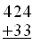
The MathML for this is:
<mstack> <mn>424</mn> <msrow> <mo>+</mo> <mn>33</mn> </msrow> <msline/> </mstack>
Many more examples are given in Section 3.6.8 Elementary Math Examples.
3.6.1 Stacks of Characters <mstack>
3.6.1.1 Description
mstack is used to lay out rows of numbers that are aligned on each digit.
This is common in many elementary math notations such as 2D addition, subtraction,
and multiplication.
The children of an mstack represent rows, or groups of them,
to be stacked each below the previous row; there can be any number of rows.
An msrow represents a row;
an msgroup groups a set of rows together
so that their horizontal alignment can be adjusted together;
an mscarries represents a set of carries to be
applied to the following row;
an msline represents a line separating rows.
Any other element is treated as if implicitly surrounded by msrow.
Each row contains ‘digits’ that are placed into columns.
(see Section 3.6.4 Rows in Elementary Math <msrow> for further details).
The stackalign attribute together with
the position and shift attributes of msgroup,
mscarries, and msrow determine
to which column a character belongs.
The width of a column is the maximum of the widths of each ‘digit’ in that
column — carries do not participate in the
width calculation; they are treated as having zero width.
If an element is too wide to fit into a column, it overflows into the adjacent
column(s) as determined by the charalign attribute.
If there is no character in a column, its width is taken to be the width of a 0
in the current language (in many fonts, all digits have the same width).
The method for laying out an mstack is:
-
The ‘digits’ in a row are determined.
-
All of the digits in a row are initially aligned according to the
stackalignvalue. -
Each row is positioned relative to that alignment based on the
positionattribute (if any) that controls that row. -
The maximum width of the digits in a column are determined and shorter and wider entries in that column are aligned according to the
charalignattribute. -
The width and height of the mstack element are computed based on the rows and columns. Any overflow from a column is not used as part of that computation.
-
The baseline of the mstack element is determined by the
alignattribute.
3.6.1.2 Attributes
mstack elements accept the attributes listed
below in addition to those specified in Section 3.1.10 Mathematics style attributes common to presentation elements.
| Name | values | default |
|---|---|---|
| align | ("top" | "bottom" | "center" | "baseline" | "axis"), rownumber? | baseline |
specifies the vertical alignment of the mstack with respect to its environment.
The legal values and their meanings are the same as that for mtable's
align attribute.
|
||
| stackalign | "left" | "center" | "right" | "decimalpoint" | decimalpoint |
specifies which column is used to horizontally align the rows.
For "left", rows are aligned flush on the left;
similarly for "right", rows are flush on the right;
for "center", the middle column (or to the right of the middle, for an even number
of columns)
is used for alignment.
Rows with non-zero position, or affected by a shift,
are treated as if the
requisite number of empty columns were added on the appropriate side;
see Section 3.6.3 Group Rows with Similiar Positions <msgroup> and Section 3.6.4 Rows in Elementary Math <msrow>.
For "decimalpoint", the column used is the left-most column in each
row that contains the decimalpoint character specified
using the decimalpoint attribute of mstyle (default ".").
If there is no decimalpoint character in the row, an implied decimal is assumed on
the right of the first number in the row;
See "decimalpoint" for a discussion
of "decimalpoint".
|
||
| charalign | "left" | "center" | "right" | right |
specifies the horizontal alignment of digits within a column.
If the content is larger than the column width, then it overflows the opposite side
from the alignment.
For example, for "right", the content will overflow on the left side; for center,
it overflows on both sides.
This excess does not participate in the column width calculation, nor does it participate
in the overall width of the mstack.
In these cases, authors should take care to avoid collisions between column overflows.
|
||
| charspacing | length | "loose" | "medium" | "tight" | medium |
| specifies the amount of space to put between each column. Larger spacing might be useful if carries are not placed above or are particularly wide. The keywords "loose", "medium", and "tight" automatically adjust spacing to when carries or other entries in a column are wide. The three values allow authors to some flexibility in choosing what the layout looks like without having to figure out what values works well. In all cases, the spacing between columns is a fixed amount and does not vary between different columns. | ||
3.6.2 Long Division <mlongdiv>
3.6.2.1 Description
Long division notation varies quite a bit around the world,
although the heart of the notation is often similar.
mlongdiv is similar to mstack and used to layout long division.
The first two children of mlongdiv are the divisor and the result of the division, in that order.
The remaining children are treated as if they were children of mstack.
The placement of these and the lines and separators used to display long division
are controlled
by the longdivstyle attribute.
The result or divisor may be an elementary math element or may be none.
In particular, if msgroup is used,
the elements in that group may or may not form their own mstack or be part of the
dividend's mstack,
depending upon the value of the longdivstyle attribute.
For example, in the US style for division,
the result is treated as part of the dividend's mstack, but divisor is not.
MathML does not specify when the result and divisor form their own mstack,
nor does it specify what should happen if msline or other elementary math elements
are used for the result or divisor and they do not participate in the dividend's mstack layout.
In the remainder of this section on elementary math, anything that is said about mstack applies
to mlongdiv unless stated otherwise.
3.6.2.2 Attributes
mlongdiv elements accept all of the attributes that mstack elements
accept (including those specified in Section 3.1.10 Mathematics style attributes common to presentation elements), along with the attribute listed below.
The values allowed for longdivstyle are open-ended.
Conforming renderers may ignore any value they do not handle,
although renderers are encouraged to render as many of the values listed below as
possible.
Any rules drawn as part of division layout should be drawn using the color specified
by
mathcolor.
| Name | values | default |
|---|---|---|
| longdivstyle | "lefttop" | "stackedrightright" | "mediumstackedrightright" | "shortstackedrightright" | "righttop" | "left/\right" | "left)(right" | ":right=right" | "stackedleftleft" | "stackedleftlinetop" | lefttop |
| Controls the style of the long division layout. The names are meant as a rough mnemonic that describes the position of the divisor and result in relation to the dividend. | ||
See Section 3.6.8.3 Long Division for examples of how these notations are drawn. The values listed above are used for long division notations in different countries around the world:
- "lefttop"
- a notation that is commonly used in the United States, Great Britain, and elsewhere
- "stackedrightright"
- a notation that is commonly used in France and elsewhere
- "mediumrightright"
- a notation that is commonly used in Russia and elsewhere
- "shortstackedrightright"
- a notation that is commonly used in Brazil and elsewhere
- "righttop"
- a notation that is commonly used in China, Sweden, and elsewhere
- "left/\right"
- a notation that is commonly used in Netherlands
- "left)(right"
- a notation that is commonly used in India
-
":right=right"F
- a notation that is commonly used in Germany
-
"stackedleftleft"F
- a notation that is commonly used in Arabic countries
- "stackedleftlinetop"
- a notation that is commonly used in Arabic countries
3.6.3 Group Rows with Similiar Positions <msgroup>
3.6.3.1 Description
msgroup is used to group rows inside of the mstack and mlongdiv elements
that have a similar position relative to the alignment of stack.
If not explicitly given, the children representing the stack in mstack and mlongdiv
are treated as if they are implicitly surrounded by an msgroup element.
3.6.3.2 Attributes
msgroup elements accept the attributes listed
below in addition to those specified in Section 3.1.10 Mathematics style attributes common to presentation elements.
| Name | values | default |
|---|---|---|
| position | integer | 0 |
specifies the horizontal position of the rows within this group relative
the position determined by the containing msgroup (according to its
position and shift attributes).
The resulting position value is relative to the column specified by stackalign of the containing mstack or mlongdiv.
Positive values move each row towards the tens digit,
like multiplying by a power of 10,
effectively padding with empty columns on the right;
negative values move towards the ones digit,
effectively padding on the left.
The decimal point is counted as a column and should be taken into account for negative
values.
|
||
| shift | integer | 0 |
| specifies an incremental shift of position for successive children (rows or groups) within this group. The value is interpreted as with position, but specifies the position of each child (except the first) with respect to the previous child in the group. | ||
3.6.4 Rows in Elementary Math <msrow>
3.6.4.1 Description
An msrow represents a row in an mstack.
In most cases it is implied by the context, but is useful
explicitly for putting multiple elements in a single row,
such as when placing an operator "+" or "-" alongside a number
within an addition or subtraction.
If an mn element is a child of msrow
(whether implicit or not), then the number is split into its digits
and the digits are placed into successive columns.
Any other element, with the exception of mstyle is treated effectively
as a single digit occupying the next column.
An mstyle is treated as if its children were
directly the children of the msrow, but with their style affected
by the attributes of the mstyle.
The empty element none may be used to create an empty column.
Note that a row is considered primarily as if it were a number,
which are always displayed left-to-right,
and so the directionality used to display the columns is always left-to-right;
textual bidirectionality within token elements (other than mn) still applies,
as does the overall directionality within any children of the msrow
(which end up treated as single digits);
see Section 3.1.5 Directionality.
3.6.4.2 Attributes
msrow elements accept the attributes listed
below in addition to those specified in Section 3.1.10 Mathematics style attributes common to presentation elements.
| Name | values | default |
|---|---|---|
| position | integer | 0 |
specifies the horizontal position of the rows within this group relative
the position determined by the containing msgroup (according to its
position and shift attributes).
The resulting position value is relative to the column specified by stackalign of the containing mstack or mlongdiv.
Positive values move each row towards the tens digit,
like multiplying by a power of 10,
effectively padding with empty columns on the right;
negative values move towards the ones digit,
effectively padding on the left.
The decimal point is counted as a column and should be taken into account for negative
values.
|
||
3.6.5 Carries, Borrows, and Crossouts <mscarries>
3.6.5.1 Description
The mscarries element is used for various annotations such as carries, borrows, and crossouts that
occur in elementary math.
The children are associated with elements in the following row of the mstack.
It is an error for mscarries to be the last element of an mstack or mlongdiv element. Each child of the mscarries applies to the same column in the following row.
As these annotations are used to adorn what are treated as
numbers, the attachment of carries to columns proceeds from left-to-right;
The overall directionality does not apply to the ordering of the carries,
although it may apply to the contents of each carry;
see Section 3.1.5 Directionality.
Each child of mscarries other than mscarry or none is
treated as if implicitly surrounded by mscarry;
the element none is used when no carry for a particular column is needed.
The mscarries element sets displaystyle to "false", and increments scriptlevel by 1, so the children are
typically displayed in a smaller font. (See Section 3.1.6 Displaystyle and Scriptlevel.)
It also changes the default value of scriptsizemultiplier.
The effect is that the inherited value of
scriptsizemultiplier should still override the default value,
but the default value, inside mscarries, should be "0.6".
scriptsizemultiplier can be set on the mscarries element,
and the value should override the inherited value as usual.
If two rows of carries are adjacent to each other,
the first row of carries annotates the second (following) row as if the second row
had
location="n".
This means that the second row, even if it does not draw,
visually uses some (undefined by this specification) amount of space when displayed.
3.6.5.2 Attributes
mscarries elements accept the attributes listed
below in addition to those specified in Section 3.1.10 Mathematics style attributes common to presentation elements.
| Name | values | default |
|---|---|---|
| position | integer | 0 |
specifies the horizontal position of the rows within this group relative
the position determined by the containing msgroup (according to its
position and shift attributes).
The resulting position value is relative to the column specified by stackalign of the containing mstack or mlongdiv.
The interpretation of the value is the same as position for msgroup or msrow,
but it alters the association of each carry with the column below.
For example, position=1 would cause the rightmost carry to be associated with
the second digit column from the right.
|
||
| location | "w" | "nw" | "n" | "ne" | "e" | "se" | "s" | "sw" | n |
| specifies the location of the carry or borrow relative to the character below it in the associated column. Compass directions are used for the values; the default is to place the carry above the character. | ||
| crossout | ("none" | "updiagonalstrike" | "downdiagonalstrike" | "verticalstrike" | "horizontalstrike")* | none |
specifies how the column content below each carry is "crossed out";
one or more values may be given and all values are drawn.
If "none" is given with other values, it is ignored.
See Section 3.6.8 Elementary Math Examples for examples of the different values.
The crossout is only applied for columns which have a corresponding
mscarry.
The crossouts should be drawn using the color specified by mathcolor.
|
||
| scriptsizemultiplier | number | inherited (0.6) |
specifies the factor to change the font size by.
See Section 3.1.6 Displaystyle and Scriptlevel for a description of how this works with the scriptsize attribute.
|
||
3.6.6 A Single Carry <mscarry>
3.6.6.1 Description
mscarry is used inside of mscarries to
represent the carry for an individual column.
A carry is treated as if its width were zero; it does not participate in
the calculation of the width of its corresponding column;
as such, it may extend beyond the column boundaries.
Although it is usually implied, the element may be used explicitly to override the
location and/or crossout attributes of
the containing mscarries.
It may also be useful with none as its content in order
to display no actual carry, but still enable a crossout
due to the enclosing mscarries to be drawn for the given column.
3.6.6.2 Attributes
The mscarry element accepts the attributes listed
below in addition to those specified in Section 3.1.10 Mathematics style attributes common to presentation elements.
| Name | values | default |
|---|---|---|
| location | "w" | "nw" | "n" | "ne" | "e" | "se" | "s" | "sw" | inherited |
| specifies the location of the carry or borrow relative to the character in the corresponding column in the row below it. Compass directions are used for the values. | ||
| crossout | ("none" | "updiagonalstrike" | "downdiagonalstrike" | "verticalstrike" | "horizontalstrike")* | inherited |
specifies how the column content associated with the carry is "crossed out";
one or more values may be given and all values are drawn.
If "none" is given with other values, it is essentially ignored.
The crossout should be drawn using the color specified by mathcolor.
|
||
3.6.7 Horizontal Line <msline/>
3.6.7.1 Description
msline draws a horizontal line inside of a mstack element.
The position, length, and thickness of the line are specified as attributes.
If the length is specified, the line is positioned and drawn as if it were a number
with the given number of digits.
3.6.7.2 Attributes
msline elements accept the attributes listed
below in addition to those specified in Section 3.1.10 Mathematics style attributes common to presentation elements.
The line should be drawn using the color specified by mathcolor.
| Name | values | default |
|---|---|---|
| position | integer | 0 |
specifies the horizontal position of the rows within this group relative
the position determined by the containing msgroup (according to its
position and shift attributes).
The resulting position value is relative to the column specified by stackalign of the containing mstack or mlongdiv.
Positive values moves towards the tens digit (like multiplying by a power of 10);
negative values moves towards the ones digit.
The decimal point is counted as a column and should be taken into account for negative
values.
Note that since the default line length spans the entire mstack,
the position has no effect unless the length is specified as non-zero.
|
||
| length | unsigned-integer | 0 |
Specifies the the number of columns that should be spanned by the line.
A value of '0' (the default) means that all columns in
the row are spanned (in which case position and stackalign have no effect).
|
||
| leftoverhang | length | 0 |
| Specifies an extra amount that the line should overhang on the left of the leftmost column spanned by the line. | ||
| rightoverhang | length | 0 |
| Specifies an extra amount that the line should overhang on the right of the rightmost column spanned by the line. | ||
| mslinethickness | length | "thin" | "medium" | "thick" | medium |
Specifies how thick the line should be drawn.
The line should have height=0, and depth=mslinethickness so that the top
of the msline is on the baseline of the surrounding context (if any).
(See Section 3.3.2 Fractions <mfrac> for discussion of the thickness keywords
"medium", "thin" and "thick".)
|
||
3.6.8 Elementary Math Examples
3.6.8.1 Addition and Subtraction
Two-dimensional addition, subtraction, and multiplication typically involve numbers, carrries/borrows, lines, and the sign of the operation.
Notice that the msline spans all of the columns and that none is used to make the "+" appear to the left of all of the operands.
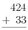
The MathML for this is:
<mstack> <mn>424</mn> <msrow> <mo>+</mo> <none/> <mn>33</mn> </msrow> <msline/> </mstack>
Here is an example with the operator on the right. Placing the operator on the right is standard in the Netherlands and some other countries. Notice that although there are a total of four columns in the example, because the default alignment is on the implied decimal point to the right of the numbers, it is not necessary to pad any row.
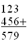
<mstack> <mn>123</mn> <msrow> <mn>456</mn> <mo>+</mo> </msrow> <msline/> <mn>579</mn> </mstack>
Because the default alignment is placed to the right of number, the numbers align properly and none of the rows need to be shifted.
The following two examples illustrate the use of mscarries,
mscarry and using none to fill in a column.
The examples illustrate two different ways of displaying a borrow.
|
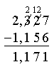 |
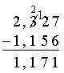 |
The MathML for the first example is:
<mstack>
<mscarries crossout='updiagonalstrike'>
<mn>2</mn> <mn>12</mn> <mscarry crossout='none'> <none/> </mscarry>
</mscarries>
<mn>2,327</mn>
<msrow> <mo>-</mo> <mn> 1,156</mn> </msrow>
<msline/>
<mn>1,171</mn>
</mstack>
The MathML for the second example uses mscarry because a crossout should only happen on a single column:
<mstack>
<mscarries location='nw'>
<none/>
<mscarry crossout='updiagonalstrike' location='n'> <mn>2</mn> </mscarry>
<mn>1</mn>
<none/>
</mscarries>
<mn>2,327</mn>
<msrow> <mo>-</mo> <mn> 1,156</mn> </msrow>
<msline/>
<mn>1,171</mn>
</mstack>
Here is an example of subtraction where there is a borrow with multiple digits in a single column and a cross out. The borrowed amount is underlined (the example is from a Swedish source):
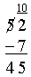
There are two things to notice.
The first is that menclose is used in the carry and that none is used for
the empty element so that mscarry can be used to create a crossout.
<mstack>
<mscarries>
<mscarry crossout='updiagonalstrike'><none/></mscarry>
<menclose notation='bottom'> <mn>10</mn> </menclose>
</mscarries>
<mn>52</mn>
<msrow> <mo>-</mo> <mn> 7</mn> </msrow>
<msline/>
<mn>45</mn>
</mstack>
3.6.8.2 Multiplication
Below is a simple multiplication example that illustrates the use of msgroup and
the shift attribute. The first msgroup does nothing.
The second msgroup could also be removed, but msrow would be needed for its second and third children.
They would set the position or shift attributes, or would add none elements.
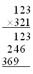
<mstack>
<msgroup>
<mn>123</mn>
<msrow><mo>×<!--multiplication sign--></mo><mn>321</mn></msrow>
</msgroup>
<msline/>
<msgroup shift="1">
<mn>123</mn>
<mn>246</mn>
<mn>369</mn>
</msgroup>
<msline/>
</mstack>
This example has multiple rows of carries. It also (somewhat artificially) includes commas (",") as digit separators. The encoding includes these separators in the spacing attribute value, along non-ASCII values.
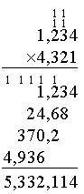
<mstack> <mscarries><mn>1</mn><mn>1</mn><none/></mscarries> <mscarries><mn>1</mn><mn>1</mn><none/></mscarries> <mn>1,234</mn> <msrow><mo>×<!--multiplication sign--></mo><mn>4,321</mn></msrow> <msline/> <mscarries position='2'> <mn>1</mn> <none/> <mn>1</mn> <mn>1</mn> <mn>1</mn> <none/> <mn>1</mn> </mscarries> <msgroup shift="1"> <mn>1,234</mn> <mn>24,68</mn> <mn>370,2</mn> <msrow position="1"> <mn>4,936</mn> </msrow> </msgroup> <msline/> <mn>5,332,114</mn> </mstack>
3.6.8.3 Long Division
The notation used for long division varies considerably among countries. Most notations share the common characteristics of aligning intermediate results and drawing lines for the operands to be subtracted. Minus signs are sometimes shown for the intermediate calculations, and sometimes they are not. The line that is drawn varies in length depending upon the notation. The most apparent difference among the notations is that the position of the divisor varies, as does the location of the quotient, remainder, and intermediate terms.
The layout used is controlled by the longdivstyle attribute. Below are examples for the values listed in Section 3.6.2.2 Attributes
| "lefttop" | "stackedrightright" | "mediumstackedrightright" | "shortstackedrightright" | "righttop" |
|---|---|---|---|---|
|
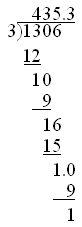 |
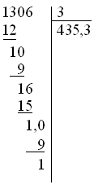 |
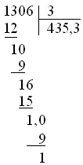 |
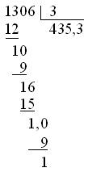 |
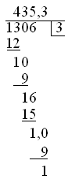 |
| "left/\right" | "left)(right" | ":right=right" | "stackedleftleft" | "stackedleftlinetop" |
|---|---|---|---|---|
|
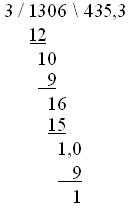 |
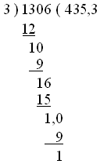 |
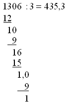 |
|
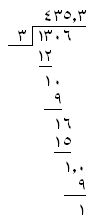 |

{kind=link}
The MathML for the first example is shown below. It illustrates the use of nested
msgroups and how the position is calculated in those usages.
<mlongdiv longdivstyle="lefttop">
<mn> 3 </mn>
<mn> 435.3</mn>
<mn> 1306</mn>
<msgroup position="2" shift="-1">
<msgroup>
<mn> 12</mn>
<msline length="2"/>
</msgroup>
<msgroup>
<mn> 10</mn>
<mn> 9</mn>
<msline length="2"/>
</msgroup>
<msgroup>
<mn> 16</mn>
<mn> 15</mn>
<msline length="2"/>
<mn> 1.0</mn> <!-- aligns on '.', not the right edge ('0') -->
</msgroup>
<msgroup position='-1'> <!-- extra shift to move to the right of the "." -->
<mn> 9</mn>
<msline length="3"/>
<mn> 1</mn>
</msgroup>
</msgroup>
</mlongdiv>
With the exception of the last example,
the encodings for the other examples are the same except that the values for
longdivstyle differ and that a "," is used instead of a "." for the decimal point.
For the last example, the only difference from the other examples besides a different
value for
longdivstyle is that Arabic numerals have been used in place of Latin numerals,
as shown below.
<mstyle decimalpoint="٫"><!--arabic decimal separator--> <mlongdiv longdivstyle="stackedleftlinetop"> <mn> ٣<!--arabic-indic digit three--> </mn> <mn> ٤<!--arabic-indic digit four-->٣<!--arabic-indic digit three-->٥<!--arabic-indic digit five-->٫<!--arabic decimal separator-->٣<!--arabic-indic digit three--></mn> <mn> ١<!--arabic-indic digit one-->٣<!--arabic-indic digit three-->٠<!--arabic-indic digit zero-->٦<!--arabic-indic digit six--></mn> <msgroup position="2" shift="-1"> <msgroup> <mn> ١<!--arabic-indic digit one-->٢<!--arabic-indic digit two--></mn> <msline length="2"/> </msgroup> <msgroup> <mn> ١<!--arabic-indic digit one-->٠<!--arabic-indic digit zero--></mn> <mn> ٩<!--arabic-indic digit nine--></mn> <msline length="2"/> </msgroup> <msgroup> <mn> ١<!--arabic-indic digit one-->٦<!--arabic-indic digit six--></mn> <mn> ١<!--arabic-indic digit one-->٥<!--arabic-indic digit five--></mn> <msline length="2"/> <mn> ١<!--arabic-indic digit one-->٫<!--arabic decimal separator-->٠<!--arabic-indic digit zero--></mn> </msgroup> <msgroup position='-1'> <mn> ٩<!--arabic-indic digit nine--></mn> <msline length="3"/> <mn> ١<!--arabic-indic digit one--></mn> </msgroup> </msgroup> </mlongdiv> </mstyle>
3.6.8.4 Repeating decimal
Decimal numbers that have digits that repeat infinitely such as 1/3 (.3333...) are represented using several notations. One common notation is to put a horizontal line over the digits that repeat (in Portugal an underline is used). Another notation involves putting dots over the digits that repeat. These notations are shown below:

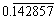
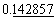
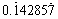
The MathML for these involves using mstack, msrow, and msline
in a straightforward manner. The MathML for the preceding examples above is given
below.
<mstack stackalign="right"> <msline length="1"/> <mn> 0.3333 </mn> </mstack>
<mstack stackalign="right"> <msline length="6"/> <mn> 0.142857 </mn> </mstack>
<mstack stackalign="right"> <mn> 0.142857 </mn> <msline length="6"/> </mstack>
<mstack stackalign="right"> <msrow> <mo>.</mo> <none/><none/><none/><none/> <mo>.</mo> </msrow> <mn> 0.142857 </mn> </mstack>
3.7 Enlivening Expressions
3.7.1 Bind Action to Sub-Expression
<maction>
To provide a mechanism for binding actions to expressions, MathML
provides the maction element. This element accepts any
number of sub-expressions as arguments and the type of action that should happen
is controlled by the actiontype attribute.
Only three actions are predefined by MathML, but the list of possible actions is open.
Additional predefined actions may be added in future versions of MathML.
Linking to other elements, either locally within the math element or to some URL,
is not handled by maction.
Instead, it is handled by adding a link directly on a MathML element as specified
in
Section 6.4.4 Linking.
3.7.1.1 Attributes
maction elements accept the attributes listed
below in addition to those specified in Section 3.1.10 Mathematics style attributes common to presentation elements.
By default, MathML applications that do not recognize the specified
actiontype should render the selected sub-expression as
defined below. If no selected sub-expression exists, it is a MathML
error; the appropriate rendering in that case is as described in
Section 2.3.2 Handling of Errors.
| Name | values | default |
|---|---|---|
| actiontype | string | required |
| Specifies what should happen for this element. The values allowed are open-ended. Conforming renderers may ignore any value they do not handle, although renderers are encouraged to render the values listed below. | ||
| selection | positive-integer | 1 |
Specifies which child should be used for viewing. Its value should be between 1 and
the number of
children of the element. The specified child is referred to as the "selected sub-expression"
of the
maction element. If the value specified is out of range, it is an error. When the
selection attribute is not specified (including for
action types for which it makes no sense), its default value is 1, so
the selected sub-expression will be the first sub-expression.
|
||
If a MathML application responds to a user command to copy a MathML sub-expression
to
the environment's "clipboard" (see Section 6.3 Transferring MathML), any maction elements present in what is copied should
be given selection values that correspond to their selection
state in the MathML rendering at the time of the copy command.
When a MathML application receives a mouse event that may be processed by two or more nested maction elements, the innermost maction element of each action type should respond to the event.
The meanings of the various actiontype values is given below.
Note that not all renderers support all of the actiontype values, and that the allowed values are open-ended.
- <maction actiontype="toggle" selection="positive-integer" > (first expression) (second expression)... </maction>
- The renderer alternately display the
selected subexpression, cycling through them when there is a click on the selected
subexpression.
Each click increments the
selectionvalue, wrapping back to 1 when it reaches the last child. Typical uses would be for exercises in education, ellipses in long computer algebra output, or to illustrate alternate notations. Note that the expressions may be of significantly different size, so that size negotiation with the browser may be desirable. If size negotiation is not available, scrolling, elision, panning, or some other method may be necessary to allow full viewing. - <maction actiontype="statusline"> (expression) (message) </maction>
- The renderer displays the first child.
When a reader clicks on the expression or
moves the pointer over it, the renderer sends a rendering of the
message to the browser statusline. Because most browsers in the
foreseeable future are likely to be limited to displaying text on their
statusline, the second child should be an
mtextelement in most circumstances. For non-mtextmessages, renderers might provide a natural language translation of the markup, but this is not required. - <maction actiontype="tooltip"> (expression) (message) </maction>
- The renderer displays the first child.
When the pointer pauses over the expression for a long
enough delay time, the renderer displays a rendering of the message in
a pop-up "tooltip" box near the expression. Many systems may limit
the popup to be text, so the second child should be an
mtextelement in most circumstances. For non-mtextmessages, renderers may provide a natural language translation of the markup if full MathML rendering is not practical, but this is not required. - <maction actiontype="input"> (expression) </maction>
- The renderer displays the expression.
For renderers that allow editing, when focus is passed to this element,
the
mactionis replaced by what is entered, pasted, etc. MathML does not restrict what is allowed as input, nor does it require an editor to allow arbitrary input. Some renderers/editors may restrict the input to simple (linear) text.
The actiontype values are open-ended. If another value is given and it requires additional attributes,
the attributes must be in a different namespace
in XML;
in HTML the attributes must begin with "data-".
An XML example is shown below:
- <maction actiontype="highlight" my:color="red" my:background="yellow"> expression </maction>
- In the example,
non-standard attributes from another namespace are being used to pass
additional information to renderers that support them,
without violating the MathML Schema (see Section 2.3.3 Attributes for unspecified data).
The
my:colorattributes might change the color of the characters in the presentation, while themy:backgroundattribute might change the color of the background behind the characters.
3.8 Semantics and Presentation
MathML uses the semantics element to allow specifying semantic annotations to
presentation MathML elements; these can be content MathML or other notations. As
such,
semantics should be considered part of both presentation MathML and content
MathML. All MathML processors should process the semantics element, even if they
only process one of those subsets.
In semantic annotations a presentation MathML expression is typically the first child
of the semantics element. However, it can also be given inside of an
annotation-xml element inside the semantics element. If it is part of an
annotation-xml element, then
encoding="application/mathml-presentation+xml" or
encoding="MathML-Presentation" may be used and presentation
MathML processors should use this value for the presentation.
See Section 5.1 Annotation Framework for more details about the
semantics and annotation-xml elements.